| [Top] | [Table des matières] | [Index] | [ ? ] |
| 1.1 A propos Cinelerra | ||
| 1.2 Les deux versions de Cinelerra | ||
| 1.3 A propos de ce manuel | ||
| 1.4 Obtenir de l'aide | ||
| 1.5 Tutoriels | ||
| 1.6 Liens divers |
Pendant des années, certaines personnes ont désiré disposer d'un moyen de monter leur audio et leur vidéo depuis un seul endroit avec autant de facilité que l'écriture d'un texte. Cinelerra est une tentative pour réaliser ce voeux et pour fournir, dans un seul logiciel, tout le nécessaire pour vos montages audio et vidéo. L'enregistrement, le montage et la lecture sont tous gérés ici. Il peut être utilisé comme lecteur audio. Il peut aussi être utilisé pour enregistrer de l'audio ou de la vidéo. Il peut même être utilisé comme logiciel de retouche de photos.
Il y a deux types de personnes impliquées dans les films : les producteurs qui créent un nouveau contenu et qui reviennent ultérieurement sur celui-ci pour l'améliorer encore, et le grand public qui veut acquérir le contenu et le visionner. Cinelerra n'est pas conçu pour le grand public. Cinelerra possède de nombreuses fonctionnalités pour gérer du contenu non compressé, pour le traitement en haute définition et pour la composition. Les producteurs ont besoin de ces fonctionnalités afin de pouvoir retoucher de nombreuses générations de métrage, et c'est ce qui rend Cinelerra si complexe. Le grand public devrait envisager l'utilisation d'autres outils, tels que MainActor, Kino ou Moxy.
Il y a deux branches de Cinelerra. L'une d'elle se trouve à http://www.heroinewarrior.com et l'autre à http://cinelerra-cv.org. Cette documentation concerne Cinelerra-CV (Community Version).
Les sources de la version officielle de Cinelerra sont développées "en amont" Par Heroine Virtual, Ltd (HV) HV partage son code source avec une version communautaire de Cinelerra (Cinelerra-CV), mais ne participe pas activement avec la communauté de developpeurs responsables de Cinelerra-CV. HV préfère travailler sur sa propre copie de Cinelerra, en diffusant périodiquement le code tous les 6 mois environ.
Cinelerra-CV a été fondé par des développeurs qui souhaitaient étendre les fonctionnalités et résoudre certains bugs présents dans le code source d'HV. Ils ont décidé qu'il serait bien d'effectuer le développement de manière communautaire, sans pour autant effectuer un "fork". De ce fait, le code source de Cinelerra CV est très proche de celui de la version officielle. Les développeurs de la version CV appliquent des résolutions de bugs (http://bugs.cinelerra-cv.org), effectuent des correctifs de bogues et des correctifs de compatibilité. Les programmeurs envoyent occasionnellement des correctifs en amont à HV. De ce fait, Cinelerra CV comporte certaines fonctionnalités qu'on ne trouve pas dans la version officielle.
A la différence d'autres programmes, la version diffusée par HV ne peut pas être qualifiée de "stable". Après que la version de Cinelerra de HV ait été diffusée, il reste souvent des problèmes, que ce soient des bogues ou en termes de fonctionnalités. Lorsqu'une nouvelle version est diffusée, un des membres (j6t) effectue donc la fusion du code de HV avec le code de Cinelerra CV, en prenant en compte les améliorations de HV et en réarrangeant le code afin qu'il soit le plus similaire possible à celui de HV's (identation, nommage des fonctions et des répertoires, modifications mineures de l'implémentation, etc.) Après la fusion, la version diffusée de Cinelerra CV peut être légèrement instable jusqu'à ce que tous les problèmes avec le nouveau code ajouté par HV soient corrigés, que les utilisateurs découvrent les bogues et que nous ayons le temps de les corriger. Cinelerra CV peut être vu comme une tentative de la communauté de stabiliser la version diffusée par HV.
Comme indiqué, la communauté ajoute des améliorations au code source d'HV. Ses membres commentent mutuellement leurs implémentations afin de créer un produit plus fonctionnel et stable. Occasionnellement, HV commente les implémentations que les membres de la communauté lui ont soumis. Cependant, les améliorations effectuées par la communauté ne remontent pas toutes dans la version officielle; le rendu de flux YUV par exemple.
Après ce qui vient d'être dit, on peut dire que la version SVN telle qu'elle est juste avant une opération de fusion est une version stabilisée. Mais soyiez conscient qu'il est possible que vous ayiez des problèmes avec des fichiers de description de projet qui ne seront peut-être pas compatibles vers la nouvelle version. Avec une version quelconque de Cinelerra, trouver des bugs est relativement aisé. Cependant, décrire clairement et concisément ces bugs à la communauté qui les corrige est une tâche que l'on est à même d'espérer de la part de tous les utilisateurs. La communauté est très réactive. Aidez-la en créant des rapports de bugs bien réalisés. Vous pouvez rejoindre notre mailing-liste à http://cinelerra-cv.org.
L'édition de ce manuel est 1.26.FR, et il s'applique à Cinelerra CV version 2.3. Vous pouvez le redistribueer et/ou le modifier selon les termes de la Licence Publique Générale GNU (GPL), telle que publiée par la Free Software Foundation ; soit à la version 2 de la licence ou (à votre choix), toute autre version ultérieure.
Ce manuel est issu des "Secrets de Cinelerra", un excellent manuel écrit par Jack CROSSFIRE d'HEROINE VIRTUAL LTD. En 2003 Alex FERRER a créé un Wiki basé sur ce manuel et a ajouté de nombreuses copies d'écran et d'autres informations. Jusqu'à ce jour, Cinelerra CV n'avait pas encore son propre manuel et les informations concernant la version Communautaire de Cinelerra étaient éparpillées sur Internet (liste de diffusion, IRC, sites Web, wiki, etc.). En 2006, Nicolas MAUFRAIS combina les "Secrets de Cinelerra" avec le contenu se trouvant dans le Wiki d'Alex FERRER afin d'en faire un document unifié.
Responsables de la documentation Cinelerra-CV :
Anglais : Nicolas MAUFRAIS (coordinateur)
Français : Jean-Luc COULON
Autre contributeurs : Alexandre BOURGET, Kevin BROSIUS, Carlos DAVILA, Rafael DINIZ, Pierre DUMUID, Mike EDWARDS, Martin ELLISON, Scott FRASE, Joe FRIEDRICHSEN, Gus Gus, Terje HANSSEN, Mikko HUHTALA, Ben JORDEN, Nathan KIDD, Marcin KOSTUR, Joseph L., Valentina MESSERI, Herman ROBAK, Dana ROGERS, Jim SCOTT, Andraz TORI, Raffaella TRANIELLO.
Merci à Karl BERRY, responsable de GNU texinfo, pour son aide et son travail sur le fichier `texinfo.tex', qui est utilisé pour construire ce manuel.
Merci à l'équipe du projet GNU, et plus particulièrement à Karl BERRY, responsable de GNU Texinfo, pour l'aide très précieuse qu'il nous a apporté durant l'élaboration de ce manuel.
cg-clone git://scm.pipapo.org/cinelerra/nicolasm
On peut trouver de l'aide sur :
Quelques tutoriels sont disponibles sur internet:
Liens divers :
Vous trouverez ci-dessous le contenu général des paquets de Cinelerra.
Cinelerra est exigeant en terme de ressources matériel, puisque les demandes de lecture, de décodage, de lecture de la vidéo peuvent être assez pénalisantes et consommatrices de ressources. En conséquence de quoi les performances et donc la facilité d'utilisation de Cinelerra sont directement liées au format vidéo utilisé (SVCD/DV/HDV/HD/etc), à la puissance du processeur, aux vitesses des bus d'entrées/sorties, à la capacité mémoire de votre système et l'architecture de son bus vidéo. Ainsi, un système peu puissant sera suffisant pour les utilisateurs travaillant sur de l'audio uniquement ou bien sur des vidéos en basse résolution. Cependant, le même système pourra s'avérer insuffisant lors de la lecture de vidéos en plus haute résolution, comme la vidéo DV. La présence d'effets et de plusieurs pistes audio vont accentuer ces problèmes. En prenant en compte ces contraintes, voici quelques suggestions pour faire fonctionner Cinelerra :
Afin de pouvoir installer Cinelerra, vous devriez avoir une version récente de Linux avec XFree86 et un logiciel de gestion audio fonctionnant correctement. Les bibliothèques suivantes devraient aussi être installées sur votre système (liste non exhaustive) :
| 2.3.1 Processus de compilation habituel | ||
| 2.3.2 Compiler avec les symboles de débogage |
Vous pouvez installer Cinelerra CV en récupérant les sources et en les compilant vous-même. C'est la méthode à utiliser si vous désirez utiliser la version de Cinelerra CV la plus à jour.
svn checkout svn://svn.skolelinux.org/cinelerra/trunk/hvirtualsvn updatesvn checkout -r <révision>
svn://svn.skolelinux.org/cinelerra/trunk/hvirtual
cd hvirtual
autoreconf -i --force
./configure --with-buildinfo=svn/recompile./configure --help
make
Si vous désirez enregistrer dans un fichier la sortie de make, afin de pouvoir
rechercher les erreurs, vous pouvez utiliser cette commande :make 2>&1 | tee logfile
sudo make install
Note :
./configure avec l'option `--enable-mmx'. Si vous le
faites, vous devrez utiliser conjointement l'option `--without-pic',
sinon, la compilation peut échouer.
./configure --prefix=/usr --enable-x86 --enable-mmx --enable-freetype2
--with-buildinfo=svn/recompile CFLAGS='-O3 -pipe -fomit-frame-pointer
-funroll-all-loops -falign-loops=2 -falign-jumps=2 -falign-functions=2
-ffast-math -march=pentium-m -mfpmath=sse,387 -mmmx -msse'
./configure (remplacer
`xxx' par le numéro de la révision que vous compilez) :./configure prefix=/usrcd posudo make installcd /usr/local_cinelerra/r960./cinelerra_r960
Lorsque Cinelerra CV plante, on peut le compiler avec les symboles de débogage et le lancer depuis gdb. Les informations affichées par gdb sont beaucoup plus détaillées et aideront les développeurs à résoudre les bogues plus rapidement.
D'abord, récupérez les sources comme d'habitude. Ensuite, lancez les commandes
suivantes :
cd hvirtual
nice -19 autoreconf -i --force
mkdir ../hvdbg
cd ../hvdbg
nice -19 ../hvirtual/configure CXXFLAGS='-O0 -g' CFLAGS='-O0 -g'
--with-buildinfo=svn/recompile
cd quicktime/ffmpeg
nice -19 make CFLAGS='-O3'
cd ../..
nice -19 make
nice -19 make install
Voir la section Signaler des bogues, pour avoir plus d'informations concernant l'exécution de Cinelerra depuis gdb.
La manière la plus simple de lancer Cinelerra est de lancer la commande
/usr/bin/cinelerra
Les options en ligne de commande sont aussi disponibles en tapant
cinelerra -h. Ces options sont décrites dans d'autres sections
ci-dessous. Pour effectuer le rendu en ligne de commande Voir la section Le rendu de fichiers.
Si l'erreur suivante s'affiche lorsque vous lancez Cinelerra pour la première fois :
WARNING:/proc/sys/kernel/shmmax is 0x2000000, which is too low}
Voir la section Libérer davantage de mémoire partagée, pour plus d'information.
| 2.5.1 Binaires Debian | ||
| 2.5.2 Prérequis pour Debian |
Andraz TORI maintient les règles de constructions pour Debian Sid. Il construit également des paquets binaires .deb pour Sid. Ils sont construits depuis les versions SVN non officielles. Les paquets pour Debian Sid se trouvent ici :
deb http://www.kiberpipa.org/~minmax/cinelerra/builds/sid/ ./
deb http://www.kiberpipa.org/~minmax/cinelerra/builds/pentium4/ ./
deb http://www.kiberpipa.org/~minmax/cinelerra/builds/pentiumm/ ./
deb http://www.kiberpipa.org/~minmax/cinelerra/builds/athlonxp/ ./
deb http://labbs.net/~vale/debian ./
Note : Si Cinelerra retourne l'erreur suivante :
cinelerra: relocation error: /usr/lib/libavcodec.so.0.4.8: undefined
symbol: faacDecOpen
Vous pouvez résoudre ce problème en entrant la commande suivante en tant
qu'administrateur (root) :
apt-get install --reinstall libfaad2-0=2.0.0-0.5
Vous aurez besoin de certains logiciels prérequis qui ne se trouvent pas dans
les dépôts officiels de Debian. Vous pouvez ajouter à votre fichier
`/etc/apt/sources.list' la ligne suivante qui est le dépôt de Christian
Marillat :
deb http://www.debian-multimedia.org/ sid main
Pour pouvoir utiliser ce miroir, vous devrez ajouter la clé gpg de Marillat à
votre trousseau de clés gpg :
gpg --keyserver hkp://wwwkeys.eu.pgp.net --recv-keys 1F41B907
gpg --armor --export 1F41B907 | sudo apt-key add -
Si vous n'utilisez pas sudo, faites ce qui suit en tant qu'administrateur
(root) :
gpg --armor --export 1F41B907 | apt-key add -
MUZZOL a fabriqué des paquets pour Cinelerra sous Ubuntu Edgy. Pour réaliser l'installation au moyen du gestionnaire de paquets Synaptic, allez dans Configuration -> Dépôts. Dans la fenêtre de gestion des paquets, cliquez sur le bouton Ajouter et renseignez les dépôts suivants :
ppa:cinelerra-ppa/ppa
En cliquant sur Ajouter le dépôt vous verrez le nouveau dépôt activé dans la fenêtre de gestion des paquets. Vous pouvez aussi ajouter directement les lignes suivantes dans le fichier `/etc/apt/sources.list' :
deb http://ppa.launchpad.net/cinelerra-ppa/ppa/ubuntu <RELEASE> main
where <RELEASE> is your installed version of Ubuntu (precise, trusty, etc).
Vous verrez alors apparaître Cinelerra dans Synaptic.
Pour installer Cinelerra avec GDebi, consultez cette page :
http://www.kiberpipa.org/~muzzol/cinelerra/edgy-i386/.
Cliquez sur le lien cinelerra_2.1.0+svn20070109-0ubuntu1_i386.deb. Une
fenêtre de dialogue va alors s'ouvrir vous demandant de confirmer votre
intention d'ouvrir ce fichier avec GDebi. Si durant l'installation vous
rencontrez des problèmes de dépendances non satisfaites, essayez d'installer
les librairies manquantes en utilisant la même méthode, et la même page
internet.
Valentina MESSERI a aussi construit des paquets pour Ubuntu Edgy :
Pour Ubuntu Edgy:
deb http://giss.tv/~vale/ubuntu32 ./ deb-src http://giss.tv/~vale/ubuntu32 ./
Pour Ubuntu Edgy AMD64:
deb http://giss.tv/~vale/ubuntu64 ./ deb-src http://giss.tv/~vale/ubuntu64 ./
Les personnes désirant compiler Cinelerra peuvent consulter le tutoriel dédié à
l'installation de Cinelerra sur Ubuntu (en anglais) à cet endroit :
http://www.ubuntuforums.org/showthread.php?t=320701&highlight=cinelerra
L'installation sur Gentoo GNU/Linux est assez simple. Lancez simplement :
emerge cinelerra-cvs
avec le compte root et l'installation devrait s'effectuer sans problème. Notez que vous pouvez avoir besoin de placer Cinelerra dans le fichier `/etc/portage/package.keywords' afin de pouvoir l'utiliser :
echo "=media-video/cinelerra-cvs-20061020" >> /etc/portage/package.keywords
Voyez http://www.gentoo.org/doc/en/handbook/handbook-x86.xml?part=3&chap=3 pour plus d'information.
Note: L'ebuild Gentoo media-video/cinelerra-cvs-20061020 ne possède pas d'icônes de modes d'édition. Voir The insertion point, pour plus d'information.
L'installation pour Gentoo GNU/Linux est aisée. Lancez simplement :
emerge cinelerra
en tant qu'administrateur et il devrait s'installer et fonctionner sans
problème.
Vous pouvez essayer et utiliser Cinelerra sur votre ordinateur sans avoir à l'installer sur le disque-dur. Ceci est rendu possible grâce aux Live CD, qui sont des distributions GNU/Linux démarrant à partir d'un CD, sans qu'il soit nécessaire d'installer quoi que ce soit sur l'ordinateur. Voici quelques distributions Live CD qui contiennent Cinelerra :
Knoppix est un CD amorçable comportant une collection de logiciels GNU/Linux, une détection automatique du matériel, et la gestion de nombreuses cartes graphiques, cartes son, périphériques SCSI, USB ou autres. Knoppix peut être utilisé comme démonstration de GNU/Linux, comme CD éducatif, comme système de dépannage, ou adapté et utilisé comme plateforme pour des démonstrations de logiciels commerciaux. Il n'est pas nécessaire d'installer Knoppix sur le disque dur. (source : http://www.knoppix.org)
Distributions Knoppix connues incluant Cinelerra :
Cinelerra est inclu dans le dépôt Freshrpms à l'adresse http://freshrpms.net. La méthode la plus simple pour installer des paquets depuis Freshrpms est d'inclure ce dépôt dans la configuration de yum. Vérifiez bien que le dépôt "Extras" de Fedora est activé. C'est le cas par défaut pour Fedora 5 et 6, et les dépôts Core et Extras ne font plus qu'un pour Fedora 7.
Sous Fedora 6, tapez depuis le compte root :
rpm -ivh http://ftp.freshrpms.net/pub/freshrpms/fedora/linux/6/\ freshrpms-release/freshrpms-release-1.1-1.fc.noarch.rpm
Sous Fedora 5, tapez :
rpm -ivh http://ftp.freshrpms.net/pub/freshrpms/fedora/linux/5/\ freshrpms-release/freshrpms-release-1.1-1.fc.noarch.rpm
Ensuite, tapez :
yum -y install cinelerra
afin de récupérer et installer Cinelerra et ses dépendances, y compris ffmpeg et mjpegtools. Si cela ne fonctionne pas, examinez le fichier `/etc/yum.conf' et vérifiez que le paramétrage pour Freshrpms et bien récupéré depuis `/etc/yum.repos.d'.
Notes :
Des paquets Cinelerra pour Mandriva sont mis à disposition par PLF et prêts à être installés. Lisez la page http://plf.zarb.org/packages.php pour plus d'information.
Rafael DINIZ construit des paquets Slackware de Cinelerra.
Des RPM pour SuSE 9 sont construit depuis les sources SVN par Kevin BROSIUS, ils sont disponibles à http://cin.kevb.net/files/RPM/
Des RPMs pour OpenSUSE 10.1 et 10.2, architecture i586 et x86_64, sont construits à partir des sources SVN par Leon FREITAG chez Packman. Ils sont disponibles à http://packman.links2linux.org/package/cinelerra/16413.
Les packages RPM peuvent être installés avec le compte root dans une console en utilisant cette commande :
rpm -Uvh package_name.rpm
L'exemple qui suit montre quatre copies d'écrans d'installation graphique de Cinelerra sur OpenSUSE 10.2 i586 en utilisant YaST2. Tout d'abord en ajoutant le répertoire YaST2 de Packman aux sources d'installation, et ensuite en ajoutant le paquet d'installation avec le gestionnaire de logiciels YaST2.
Démarrez le centre de contrôle YaST sur OpenSUSE 10.2 et entrez le mot de passe de root lorsqu'on vous le demande :
Démarrez l'outil YaST2 d'installation des sources, et sélectionnez le protocole HTTP et ajoutez le nom du serveur pour Packman, comme indiqué. La synchronisation avec Zenworks peut prendre quelque temps, attendez que cela soit terminé.

Démarrez le gestionnaire de logiciel de YaST2. Entrez "Cinelerra" dans le champs de recherche situé à gauche et ensuite cochez les paquets Cinelerra situés dans la fenêtre de droite. Si une ancienne version de Cinelerra est installée, elle est indiquée avec une icône représentant un cadenas. Effacez-la ou bien tentez une mise à jour.

Cliquez sur Accepter pour lancer l'installation du paquet, puis cliquez sur Suivant pour terminer l'installation.
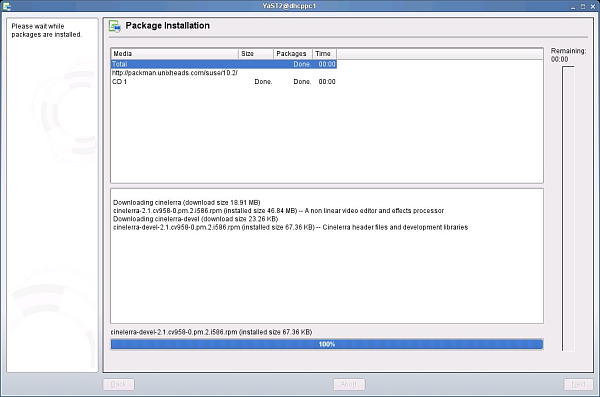
FIXME
En raison de sa flexibilité, Cinelerra ne peut tourner de manière optimale sans
être finement configuré pour répondre à vos besoins particuliers.
Malheureusement, peu de paramètres sont ajustables lors de la compilation. En
conséquence de quoi la configuration lors de l'exécution est la seule
possibilité pour la plupart des systèmes en raison de la multitude des
paramètres.
Ci-dessous se trouvent les options de configuration ainsi que les différentes
API de GNU/Linux qui sont supportées.
Dans Cinelerra, allez à Configuration->Préférences afin de voir les
options.
| 3.1 Variables d'environnement | Ces variables d'environnement sont reconnues par Cinelerra. | |
| 3.2 Pilotes audio | Informations concernant les pilotes audio. | |
| 3.3 Pilotes vidéo | Informations concernant les pilotes vidéo. | |
| 3.4 Lecture | Configurer les paramètres relatifs à la lecture. | |
| 3.5 Acquisition | Configurer les paramètres relatifs à l'enregistrement. | |
| 3.6 Performances | Configurer les paramètres permettant d'accélérer les choses. | |
| 3.7 Interface | Configurer l'interface utilisateur. | |
| 3.8 A propos | Afficher certaines informations concernant le programme. |
Dans les variantes d'UNIX, les variables d'environnement sont des variables
globales de l'interpréteur de commande (shell) que toutes les applications
peuvent lire. Elles sont définies en utilisant des commandes telles que
set VARIABLE=value. Toutes les variables d'environnement peuvent
être affichées avec la commande env. Cinelerra reconnaît les
variables d'environnement suivantes :
export
LANG=fr_FR, et lancez ensuite cinelerra depuis la même fenêtre. Il va
s'ouvrir configuré en français.Si vous avez installé Cinelerra CV en le compilant depuis les sources, et que vous avez indiqué une option `--prefix=' différente de `/usr/local', les fichiers traduits ne seront probablement pas installés. Voir la section Processus de compilation habituel, pour davantage d'informations.
Les pilotes audio sont utilisés à la fois pour l'enregistrement et la lecture du son. Leur fonctionnalité est décrite ici dans une section ci-dessous :
| 3.2.1 Attributs communs aux pilotes audio | attributs qui ne sont pas propres à un seul pilote audio. | |
| 3.2.2 OSS | notes concernant le pilote OSS. | |
| 3.2.3 OSS Envy24 | notes concernant le pilote OSS pour le composant Envy24. | |
| 3.2.4 Alsa | notes concernant le pilote ALSA. | |
| 3.2.5 Esound | notes concernant le pilote ESound. | |
| 3.2.6 Raw 1394 | notes concernant le pilote Raw1394. | |
| 3.2.7 DV 1394 | notes concernant le pilote DV1394. | |
| 3.2.8 IEC 61883 | notes concernant le pilote IEC 61883. |
Ce fut le premier pilote audio pour GNU/Linux. Il possédait une implémentation libre ainsi qu'une implémentation commerciale qui pouvait gérer davantage de cartes. C'était le pilote audio standard jusqu'à GNU/Linux 2.4. C'est encore le seul pilote audio avec lequel un binaire i386 peut être utilisé lorsqu'il tourne sur un système x86_64.
La version commerciale d'OSS comportait une variante pour les cartes son 24 bit 96 kHz. Cette variante avait besoin de modifications significatives dans la manière d'utiliser les pilotes audio, d'où le besoin d'un nouveau pilote.
ALSA est le plus courant des pilotes audio utilisés sous GNU/Linux 2.6. Il
sait maintenant gérer la plupart des cartes son. Il profite des
fonctionnalités de faible latence de GNU/Linux 2.6 pour procurer de meilleures
performances que ce qui est obtenu avec OSS et GNU/Linux 2.4, mais les
performances sont sensiblement les mêmes que celles qu'OSS permettait d'avoir
avec la version 2.0. Malheureusement ALSA est en perpétuelle évolution. Un
programme qui fonctionne avec un jour, peut très bien ne plus fonctionner le
lendemain. De nouvelles interfaces sont développées autour d'ALSA au même
rythme. Nous prévoyons d'en ajouter la gestion à intervalle régulier, mais pas
chaque fois qu'il en sortira un nouveau.
ALSA n'est maintenant plus portable entre i386 et x86_64. Si un binaire i386
tente une lecture du son avec un noyau x86_64, il va se planter. Dans ce cas,
utilisez OSS.
ESOUND est un serveur de son qui s'appuie sur OSS. Il a été écrit pour un gestionnaire de fenêtres appelé Enlightenment. Il gère un nombre limité de bits et possède une latence élevée par rapport aux pilotes plus modernes, mais il permet de multiplexer des sources audio multiples. On ne sait pas s'il fonctionne toujours.
C'était la première interface entre les logiciels GNU/Linux et les caméscopes firewire. C'est la méthode la moins fiable pour reproduire l'audio vers un caméscope et elle consiste en une bibliothèque reposant sur des commandes du noyau.
Deuxième réécriture de la gestion des caméscopes DV sous GNU/Linux. C'est la méthode la plus fiable de reproduire l'audio vers un caméscope et elle consiste en des commandes directes du noyau.
Troisième réécriture de la gestion DV pour GNU/Linux. C'est une bibliothèque résidant au-dessus de RAW 1394 qui est lui même au-dessus des commandes du noyau. Elle est moins fiable que DV 1394 mais plus fiable que RAW 1394. La prochaine réécriture devrait résoudre cela. Consultez http://www.linux1394.org pour plus d'information sur les derniers pilotes.
Les pilotes vidéo sont utilisés pour la visualisation dans le compositeur et la visionneuse
| 3.3.1 Attributs communs aux pilotes vidéo | Paramètres qui ne sont pas restreints à un seul pilote. | |
| 3.3.2 X11 | ||
| 3.3.3 X11-XV | ||
| 3.3.4 X11-OpenGL | ||
| 3.3.5 Buz | ||
| 3.3.6 Lecture vidéo raw 1394 | ||
| 3.3.7 Lecture vidéo DV 1394 | ||
| 3.3.8 Lecture vidéo IEC 61883 |
Ce fut la première méthode pour afficher de la vidéo sur les systèmes UNIX. Le triplet RVB de chaque pixel est simplement envoyé directement vers la fenêtre. C'est la méthode de lecture la plus lente. Elle est encore utilisée comme méthode de repli lorsque le matériel de gestion graphique ne permet pas de gérer de très grandes images.
Ce fut une amélioration de X11 en 1999. Elle convertit le signal YUV en RVB au niveau matériel avec mise à l'échelle. C'est la méthode conseillée pour la lecture vidéo mais elle ne peut pas gérer de très grandes images. La taille maximale des vidéo avec XV est habituellement de 1920x1080.
Le méthode la plus puissante pour reproduire la vidéo est OpenGL. Avec ce
pilote, la plupart des effets effectués par le matériel. OpenGL permet des
dimensions de vidéo jusqu'à la taille maximale des textures, qui est
généralement plus grande que ce que permet XV, en fonction du pilote graphique
utilisé. Pour l'activer, vous devrez utiliser un binaire compilé avec la
gestion d'OpenGL. L'option de la commande configure pour activer
OpenGL est `--enable-opengl'. Il vous faudra une carte graphique qui
gère OpenGL 2.0. Les cartes récentes de Nvidia devraient fonctionner. Il vous
faudra aussi utiliser un pilote vidéo gérant OpenGL 2.0, tel que le pilote
binaire de Nvidia. Pour savoir si votre pilote vidéo gère OpenGL 2.0, utilisez
la commande suivante : glxinfo | grep "OpenGL version"
OpenGL version string: 2.0.2 NVIDIA 87.74
OpenGL version string: 1.4 (2.0.2 NVIDIA 87.74)
OpenGL repose sur des PBuffers et des shaders afin d'effectuer le rendu vidéo. Le pilote graphique doit pouvoir gérer OpenGL 2.0 et Cinelerra doit avoir été explicitement compilé avec la gestion OpenGL 2.0. Ceci demande à ce qu'il soit compilé sur un système avec les en-têtes OpenGL 2. Les PBuffers sont connus pour être incohérents. Si la carte graphique ne possède pas assez de mémoire ni les bons visuels, les PBuffers ne fonctionneront pas. Si OpenGL ne fonctionne pas, essayez de vous déplacer de quelques images ou de redémarrer Cinelerra.
Limitations :
BC_Texture::create_texture frame size <frame_width>x<frame_height> bigger
than maximum texture 4096x4096.
C'est une méthode pour reproduire directement les fichiers animés de type JPEG-A sous la forme d'un signal analogique composite. Il utilise une astuce populaire du pilote Video4Linux 1 depuis 2000 pour décompresser le JPEG au niveau matériel. Bien que la vidéo analogique soit largement obsolète, des pilotes plus récents ont remplacé BUZ.
Première interface entre le logiciel GNU/Linux et les caméscopes firewire. C'est la méthode la moins fiable de transmettre de la vidéo vers un caméscope et elle consiste en une bibliothèque reposant sur des commandes du noyau.
Deuxième réécriture de la gestion des caméscopes DV sous GNU/Linux. C'est la méthode la plus fiable pour transmettre de la vidéo vers un caméscope et elle consiste en des commandes directes du noyau.
Troisième réécriture de la gestion DV pour GNU/Linux. C'est une bibliothèque au-dessus de RAW 1394 et qui est moins fiable que DV 1394 mais plus fiable que RAW 1394. La prochaine réécriture devrait résoudre cela. Consultez http://www.linux1394.org pour plus d'information et les derniers pilotes.
| 3.4.1 Sortie audio | ||
| 3.4.2 Sortie vidéo |
Ceci détermine ce qui se passe lorsque vous jouez un son depuis la timeline.
Ceci détermine comment la vidéo est affichée depuis la timeline.
Ces paramètres permettent de rendre la fonction Fichier->Enregistrer... aussi rapide que possible en permettant à l'utilisateur de pré-configurer le format de fichier à enregistrer. Le format de fichier est appliqué à tous les enregistrements. Le matériel utilisé pour l'enregistrement est aussi défini ici, puisque le matériel détermine le format du fichier dans la plupart des cas.
| 3.5.1 Format de fichier | ||
| 3.5.2 Entrée audio | ||
| 3.5.3 Entrée vidéo |
Ceci détermine le format des fichiers utilisé lors de l'acquisition. Il dépend largement du type de pilote utilisé. Les menus sont les mêmes que ceux de l'interface de rendu. Voir la section Le rendu de fichiers. La case à cocher Enregistrer les pistes audio doit être validée pour enregistrer l'audio. La case à cocher Enregistrer les pistes vidéo doit être validée pour enregistrer la vidéo. Le bouton "clé anglaise" situé à gauche de chacune des cases ouvre une boîte de dialogue de configuration permettant de définir la méthode de compression (codec) à utiliser pour chaque flux audio et vidéo en sortie. L'audio et la vidéo sont encapsulées dans in conteneur défini par le menu Format de fichier. Certains conteneurs ne permettent d'enregistrer que de l'audio, d'autres que de la vidéo, ou bien des deux.
Certains pilotes vidéo ne peuvent enregistrer que vers un certain conteneur. DV, par exemple ne peut enregistrer que vers Quicktime avec une compression vidéo de type DV. Si le pilote vidéo est changé, le format de fichier peut devoir être modifié afin d'obtenir une sortie gérée. Si vous changez le format du fichier pour un format non géré, il peut ne pas fonctionner avec le pilote vidéo.
Ceci détermine ce qui se passe lorsque vous enregistrez de l'audio.
Ceci détermine ce qui se passe lorsque vous enregistrez de la vidéo.
Vous allez passer la plupart de votre temps à configurer cette section. Le but principal de cette section est de configurer les paramètres qui ne sont pas disponibles dans le dialogue de rendu.
| 3.6.1 Rendu en tâche de fond | ||
| 3.6.2 La grappe de calcul |
Le rendu en tâche de fond a été conçu à l'origine pour permettre aux effets HDTV (TV Haute Définition) de pouvoir être affichés en temps réel. Le rendu en tâche de fond effectue en permanence le rendu lorsque la timeline est modifiée. La sortie temporaire est affichée lors de la visualisation lorsque cela est possible. Ceci est utile pour les transitions et pour prévisualiser les effets qui seraient trop lents à afficher en temps réel. Si une grappe de calcul est activée, elle est utilisée pour le rendu en tâche de fond. Ceci vous offre tout le potentiel des effets en temps réel si la bande passante du réseau et le nombre de noeuds de calcul sont suffisants.
Le rendu en tâche de fond est activé depuis l'onglet Performances de la fenêtre des Préférences. Il possède une fonction interactive Configuration -> Point de départ du rendu en tâche de fond. Ceci définit comme l'endroit où le rendu en tâche de fond commence, jusqu'au point d'insertion. S'il y a de la vidéo, une barre rouge apparaît dans la barre temporelle indiquant qu'un rendu en tâche de fond est en cours.
Il est souvent utile d'insérer un effet ou une transition et de sélectionner ensuite Configuration -> Point de départ du rendu en tâche de fond juste avant l'effet dont on veut l'aperçu en temps réel et à la fréquence d'images normale.
ls ne fonctionne pas dans le répertoire de rendu. Le bouton de
recherche de fichiers  ne fonctionne
habituellement pas non plus, mais le bouton de configuration
ne fonctionne
habituellement pas non plus, mais le bouton de configuration
 fonctionne avec cette option.
fonctionne avec cette option.
Définissez ces options si vous utilisez une grappe de calcul. Ignorez-les sur un système isolé.
Ces paramètres permettent simplement de modifier le comportement de l'interface utilisateur.
Cette section vous donne des informations concernant le copyright, la date et heure de compilation du binaire utilisé, l'absence de garantie et les versions de certaines bibliothèques. Assurez-vous d'être en accord avec les termes d'absence de garantie.
| 4.1 Fenêtre de définition du format | ||
| 4.2 Présélections | ||
| 4.3 Attributs audio | ||
| 4.4 Attributs vidéo |
Lorsque vous lisez des fichiers de média dans Cinelerra, ceux-ci comportent un certain nombre de pistes, une certaine taille d'image, un certain taux d'échantillonnage, et ainsi de suite. Indépendamment des propriétés du fichier de média, il est toujours joué en prenant en compte les attributs du projet. Ainsi, si un fichier audio possède un taux d'échantillonnage différent que celui des attributs du projet, il sera rééchantillonné. De façon similaire, si la taille de l'image d'un fichier vidéo est différente de celle des attributs du projet, elle sera composée sur un fond noir, soit recadrée, soit entourée de noir.
Les attributs du projet sont définis dans Configuration->Format... et, dans une moindre mesure, dans Fichier->Nouveau projet. Lorsque vous définissez les attributs du projet dans Fichier->Nouveau projet, une nouvelle timeline vide est créée. Chaque timeline créée à partir de ce moment utilisera des paramètres identiques. Lorsque vous définissez les paramètres dans Configuration->Format..., les médias sur la timeline sont inchangés. Chaque timeline créée à partir de ce moment le sera en utilisant les mêmes paramètres.

Fenêtre de définition du format
En plus des paramètres traditionnels tels que le taux d'échantillonnage, la fréquence des images, la taille des images, Cinelerra utilise des paramètres inhabituels tels que position des canaux, modèle colorimétrique et rapport d'aspect.
Choisissez une option depuis ce menu pour que tous les paramètres du projet soient positionnés selon l'une des normes connues.

Les canaux sont numérotés. Lorsque le rendu est effectué, la sortie du canal 1 est rendue vers la première piste audio du fichier ou vers le premier canal de la carte son. Les canaux suivants sont rendus vers leurs pistes de sortie numérotées consécutivement.
Les positions des canaux audio correspondent à l'emplacement où est situé l'élément graphique de chaque sortie audio. Plus la position de réglage est proche de l'une des sorties audio, plus l'intensité sonore dans les haut-parleurs est élevée. Cliquez sur l'icône du haut-parleur et glissez-la pour modifier l'emplacement du canal audio.
Les hauts-parleurs peuvent avoir une orientation quelconque. Une disposition différente des hauts-parleurs est enregistrée pour chaque nombre de canaux car on n'utilise en général pas la même disposition des hauts-parleurs quelque soit le nombre des canaux.
La position des canaux est le seul paramètre qui n'affecte pas nécessairement la sortie. Cliquez sur l'icône du haut-parleur et glissez-la afin de modifier la position d'un des canaux. C'est une simple commodité, afin que lorsque plus de deux canaux sont utilisés, la commande de panoramique sur la timeline puisse les distinguer l'un de l'autre. Cela n'a rien à voir avec la disposition réelle des canaux.
Différents canaux peuvent être disposés très proche l'un de l'autre de façon à ce qu'ils aient la même sortie.
De manière à utiliser des effets qui nécessitent un canal alpha, un modèle
colorimétrique avec canal alpha doit être sélectionné. Ce sont RVBA8888,
YUVA8888, et RVBA Flottant. Les modèles colorimétriques à 4 canaux sont
plus lents que les modèles à 3 canaux, le plus lent étant RVBA
Flottant. Certains effets tels que le fondu savent se passer d'un canal alpha
alors que d'autres comme la clé chromatique (chromakey), ont besoin d'un canal
alpha dans tous les cas. C'est donc une bonne idée que d'essayer l'effet sans
canal alpha afin de voir s'il fonctionne avant de choisir un canal alpha et de
ralentir tout le processus.
Lors de l'utilisation de métrage compressé, les modèles YUV sont généralement
plus rapides que les modèles RVB. Il détruisent moins de couleurs que les
modèles colorimétriques RVB. Si un métrage enregistré en JPEG ou MPEG est
traité de nombreuses fois en RVB, les couleurs vont se ternir alors que ce ne
sera pas les cas s'il est traité en YUV.
Des années de travail avec du métrage en haute dynamique ont montrées que le
modèle RVB flottant était le meilleur format pour la dynamique élevée. Les
formats entiers sur 16 bit étaient utilisés dans le passé et engendraient trop
de perte de qualité tout en étant trop lents au regard du niveau
d'amélioration.
Le RVB flottant ne détruit pas d'informations lorsqu'il est utilisé avec un
métrage source YUV et permet aussi une luminosité supérieure à 100%. Soyez
conscient que certains effets, tels que l'histogramme, tronquent encore les
valeurs supérieures à 100% en virgule flottante.
| 5.1 Formats de fichiers supportés | Les formats que Cinelerra peut importer et exporter | |
| 5.2 Charger des fichiers | Charger tout type de fichier | |
| 5.3 Charger la sauvegarde | Récupérer la session dans l'état précédant un plantage | |
| 5.4 Enregistrer des fichiers | Enregistrer la liste des décisions de montage | |
| 5.5 Fusionner des projets |
Voici la plupart des formats de fichiers supportés et des informations
concernant leur compression. Il est possible de charger des fichiers ayant
d'autres formats que ceux indiqués ici.
Le format du fichier détermine ce que Cinelerra en fait. Les paramètres du projet
sont sauvegardées dans une liste de décisions de montage (EDL) au format XML. Les formats
qui contiennent des médias mais pas de décision de montage se contentent
d'ajouter des données aux pistes. Si le taux d'échantillonnage de votre projet
est de 48 kHz et que vous chargez un fichier audio avec un taux de 96 kHz, vous
continuerez à le reproduire à 48 kHz. Si vous chargez un fichier EDL à 96 kHz
et que le taux d'échantillonage du projet en cours est de 48 kHz, il sera
modifié pour 96 kHz.
Certains formats de fichiers sont très lents à s'afficher sur la timeline.
C'est en général parce qu'ils comportent de la vidéo avec un fort taux de
compression. Dessiner les vignettes d'une vidéo très compressée peut être très
lent. Il faut désactiver le dessin des vignettes pour ces fichiers à l'aide du
bouton dessiner le média et ainsi accélérer les opérations.
Les formats supportés sont actuellement :
Quicktime n'est pas le standard sous UNIX mais nous l'utilisons parce qu'il est
bien documenté. Tous les films Quicktime sur Internet sont compressés.
Cinelerra prend en compte certains fichiers compressés en Quicktime. Mais si
Cinelerra plante lors du chargement d'un tel fichier, cela est probablement dû
au fait que le format n'a pas pû être parfaitement pris en compte.
Quicktime est un conteneur pour deux flux, un flux vidéo et un flux audio. Ces
flux sont compressés en utilisant des méthodes différentes. L'encodage préféré
pour les sorties Quicktime est la vidéo MPEG-4 et l'audio MPEG-4. Ce format
est compatible avec la plupart des logiciels commerciaux de lecture vidéo sous
Windows, possède un bon taux de compression et une bonne qualité de sortie.
Pour une meilleure compression, il faut utiliser la vidéo H-264.
Malheureusement le décodage H-264 est tellement lent qu'il ne permet pas de
reproduire de très grandes tailles d'images.
Cinelerra supporte deux codecs non standards : vidéo MPEG-4 Dual et vidéo H.264
Dual. Il ne pourront être lus nulle part ailleurs que dans Cinelerra et
XMovie. Il sont conçus pour des films dont les images ont été divisées en deux
champs, chaque champ étant affiché séquentiellement. Les codecs dual
entrelacent les deux flux vidéo de façon à améliorer l'efficacité sans demander
de modification majeure au logiciel de lecture.
C'est le même que Quicktime avec un codec audio Audio MPEG-4.
Le rendu d'une séquence d'images n'est pas identique au rendu d'une image isolée. Lorsqu'il effectue le rendu d'une séquence d'images, Cinelerra génère un fichier de table des matières pour la séquence d'images et crée un fichier image différent pour chaque position de la timeline. Pour obtenir de meilleures performances, la table des matières peut être chargée à la place de chaque image. Pour en apprendre davantage concernant les différents formats d'images pris en compte dans une séquence d'images, veuillez lire ce qui concerne les images fixes.
| 5.1.4.1 Charger des images fixes | ||
| 5.1.4.2 Dimensions des images fixes | ||
| 5.1.4.3 Images Open EXR | ||
| 5.1.4.4 Images brutes d'appareils numériques |
Le rendu d'une image isolée provoque l'écrasement du fichier image pour chaque
position de la timeline. Aucune table d'index n'est créée. Lors du
chargement, l'image occupe la place d'une image vidéo et ne modifie pas les
attributs du projet. Pour voir une image, zoomez sur la timeline jusqu'à ce
que puissiez la voir. Pour allonger la durée d'une image, étendez-la comme
vous le feriez avec un média vidéo normal. Vous pouvez allonger sa durée autant
que vous le désirez. Les images dans Cinelerra ont la possibilité d'être
étendues sur une durée infinie.
Cinelerra vous permet de définir la durée initiale des images chargées. Le
paramètre est défini dans la section Images de Configuration->
Préférences->Acquisition.
A moins que votre matériau d'origine ne provienne d'une source numérique (tel
qu'un appareil photo numérique), la première chose à faire avant de pouvoir
l'utiliser est, d'une manière ou d'une autre, de faire l'acquisition vers un
format de média numérique utilisable.
Pour des photos anciennes, des cartes en papier, des dessins ou des schémas,
vous devrez effectuer une numérisation dans un format tel que PNG, TIF, TGA ou
JPG à l'aide d'un scanner. Vous pourrez utiliser Gimp pour retoucher les
images, nettoyer les zones endommagées ou en corriger les couleurs.
Si vous objets proviennent d'un appareil photo numérique ou d'une copie
d'écran, assurez vous d'effectuer l'acquisition avec la meilleure résolution
possible. Ceci vous permettera d'obtenir de vos projets Cinelerra une sortie
de meilleure qualité.
Important : les images importées demeurent toujours dans leurs dimensions
d'origine. Vous devrez donc tenir compte du rapport d'aspect de votre vidéo
dans Cinelerra, et devrez redimensionner vos images avant de les importer dans
Cinelerra.
Par exemple, le rapport d'aspect en PAL est de 4/3, mais 720x576 fait 5/4.
Pour que les images que vous importez soient affichées correctement, vous devez
redimensionner leur taille horizontale :
Nouvelle dimension horizontale=(5 / 4) / (4 / 3) x taille horizontale
d'origine
Pour les vidéo PAL, vous devrez multiplier la dimension horizontale des images
que vous désirez importer par un facteur de 0.9375.
Voici un petit script de l'interpréteur de commandes qui, lorsqu'il est lancé
depuis un répertoire contenant des images au format jpg, redimensionne ces
images et met les nouvelles images dans le dossier `resized' :
#/bin/sh
mkdir resized
for element in `ls . | grep jpg`;
do
size=`identify ${element}`
width=`echo ${size} | sed '+s+.*JPEG ++' | sed '+s+x.*++'`
height=`echo ${size} | sed '+s+.*JPEG [0-9]*x++' | sed '+s+DirectClass.*++'`
let new_width=${width}*9375/10000
convert -resize ${new_width}x${height} -quality 100 ${element} resized/${element}
done
Vous ne connaissez peut-être pas le format Open EXR. Ce format enregistre des images RVB en virgule flottante. Il peut aussi gérer un faible niveau de compression. Un projet qui effectue un rendu vers EXR doit être configuré avec un modèle colorimétrique en virgule flottante pour pouvoir bénéficier de l'EXR. Voir Voir la section Attributs du projet. Un certain nombre d'options de compression sont disponibles avec le format EXR.
Choisissez Utiliser un canal alpha si le modèle colorimétrique du projet comporte un canal alpha et que vous désirez le conserver dans le fichier. Sinon, les couleurs primaires seront multipliées par le canal alpha.
Les images brutes de capteur (RAW) des appareils photos numériques sont un type particulier d'images que Cinelerra ne sait qu'importer. Une fois positionnées sur la timeline, elle doivent être traitées dans un espace colorimétrique en virgule flottante. Les images brutes des appareils Canon sont les seules à avoir été testées. On doit leur appliquer un effet de Gamma pour en corriger le gamma. Parce qu'il faut beaucoup de temps pour interpoler des images brutes, elles sont habituellement visualisées dans un fichier proxy et ensuite retouchées.
Appliquez d'abord l'effet de gamma à la piste où se trouvent les images brutes et configurez cet effet en mode automatique avec un gamma de 0,6. Effectuez ensuite le rendu de la timeline sous forme d'un fichier Quicktime JPEG. Ajoutez le fichier Quicktime JPEG à une nouvelle piste et désactivez l'ancienne piste. Maintenant, la copie avec le gamma corrigé de chaque image brute peut être prévisualisée relativement rapidement à la même position de la timeline que l'image d'origine.
Etant donné que le format AVI est très fragmenté, avec des codecs audio et vidéo variés, il se peut que vous ne soyiez pas en mesure de visualiser tous les fichiers de format AVI.
Les fichiers MPEG contenant de la vidéo peuvent être chargés directement dans
Cinelerra. Si le format du fichier est supporté, une table d'index est
construite. Si le format n'est pas géré, il s'ensuit habituellement un
plantage ou alors seules quelques pistes très courtes sont affichées.
Malheureusement cette méthode de chargement des fichiers MPEG n'est pas valable
si vous projetez d'utiliser les fichiers avec une grappe de calcul.
Pour utiliser les fichiers MPEG avec une grappe de calcul, vous devez utiliser
mpeg3toc pour créer une table d'index pour le fichier, puis ensuite charger la
table d'index. Il faut indiquer à mpeg3toc le chemin absolu vers le fichier
MPEG. Si vous n'utilisez pas un chemin absolu, il va supposer que le fichier
MPEG se trouve dans le même répertoire que celui d'où a été lancé Cinelerra.
Les flux MPEG sont structurés en plusieurs pistes. Chaque piste pouvant être
de type audio ou vidéo. Une piste audio peut avoir de 1 à 6 canaux. Cinelerra
convertit chaque canal en une piste.
Notes concernant l'encodage vidéo MPEG :
L'encodage vidéo MPEG est effectué séparément de l'encodage audio MPEG. Il y a
deux modèles colorimétriques possibles pour la vidéo MPEG. Le modèle YUV 4:2:0
est encodé par une version de mpeg2enc très optimisée avec des préréglages
correspondant à de l'électronique grand public standard. Dans le processus
d'optimisation de mpeg2enc, ils se sont débarrassé de l'encodage YUV 4:2:2. Le
modèle colorimétrique YUV 4:2:2 est encodé en utilisant une version moins
optimisée de mpeg2enc.
L'encodage YUV 4:2:2 a été conservé parce que la version NTSC de la vidéo DV
perd trop en qualité lors de la conversion vers YUV 4:2:0. Cette vidéo DV doit
être convertie en YUV 4:2:2.
Lors de l'encodage YUV 4:2:0, le paramètre de débit binaire change de
signification selon que le débit binaire ou la quantification est fixe. Si le
débit binaire est fixe, c'est le débit binaire à atteindre. Si la
quantification est fixe, c'est le débit binaire maximum autorisé. C'est une
astuce de la version de mpeg2enc.
Les DVD sont constitués d'un certain nombre de programmes, chacun d'entre-eux
est identifié par un fichier `IFO' unique. Si vous désirez charger un
DVD, recherchez le fichier IFO correspondant au programme qui vous intéresse.
Chargez le fichier IFO directement et une table d'index sera construite. Si
vous utilisez une grappe de calcul, une table d'index peut être construite
séparément.
Lancez : mpeg3toc -v /cdrom/video_ts/vts_01_0.ifo dvd.toc
ou quelque chose de similaire. Chargez ensuite le fichier `dvd.toc'.
Ce sont des fichiers .mp2 et .mp3. Si ces fichiers sont encodées avec un débit binaire fixe, ils peuvent être chargés directement sans table d'index. Les flux à débit variable ont besoin d'une table d'index créée alors avec mpeg3toc.
Le format OGG est un format dépassé, supposé libre de brevets pour compresser de l'audio et de la vidéo. La qualité n'est pas aussi bonne qu'en H.264 ou en MPEG-4 Audio. En réalité, quiconque en ayant les moyens et la volonté peut trouver un brevet dans n'importe quoi, la justification d'OGG est donc sujette à caution.
Les listes de décisions de montage (EDL) sont créées par Cinelerra pour l'enregistrement des projets. Les fichiers EDL possèdent l'extension .xml. Quand ils sont chargés, ils modifient les attributs du projet. Comme les listes de décisions de montage sont des fichiers texte, elles peuvent être modifiées avec un simple éditeur de texte.
Toutes les données avec lesquelles vous travaillez dans Cinelerra sont
récupérées soit par acquisition depuis un périphérique soit en les
chargeant depuis un disque. Cette section traite du chargement depuis un
disque.
Charger et reproduire des fichiers fonctionne exactement comme vous vous y
attendez. Allez simplement dans Fichier->Charger des fichiers...,
choisissez un fichier à charger et cliquez sur le bouton ok. Cliquez le
bouton de lecture et cette dernière doit commencer, qu'une barre d'avancement
soit affichée ou non.

La fenêtre de chargement
Si le fichier est une image fixe, les attributs du projet ne sont pas modifiés et la première image de la piste devient cette image. Si le fichier contient de l'audio, Cinelerra peut construire un fichier d'index afin d'en accélérer le dessin. Vous pouvez effectuer des opération de montage ou reproduire le fichier alors que l'index est en cours de construction.
| 5.2.1 Stratégie d'insertion | ||
| 5.2.2 Charger plusieurs fichiers | ||
| 5.2.3 Charger des fichiers depuis la ligne de commande | ||
| 5.2.4 Filtrer les fichiers selon leur extension | ||
| 5.2.5 Charger d'autres formats |
Habituellement, il se produit trois choses lorsque vous chargez un fichier :
Cependant, Cinelerra vous permet de modifier son comportement lors du
chargement d'un fichier.
Dans la boîte de sélection de fichier, allez à la boîte Stratégie
d'insertion et sélectionnez-là. Chacune de ses options permet de charger le
fichier de manière différente.
La stratégie d'insertion est une option que l'on retrouve dans de nombreuses fonctions de Cinelerra. A chaque fois, les options ont la même action. En utilisant ces options, vous pouvez faire presque tout votre montage rien qu'en chargeant des fichiers. Si vous chargez des fichiers en les passant à Cinelerra en paramètres de la ligne de commande, les fichiers seront chargés avec la règle Remplacer le projet actuel.
Dans la boîte de sélection allez à la liste des fichiers. Sélectionnez un
fichier. Déplacez-vous sur un autre fichier et sélectionnez-le en maintenant
la touche Ctrl enfoncée. Ceci permet de sélectionner un fichier
supplémentaire. Déplacez-vous sur un autre fichier et sélectionnez-le en
maintenant la touche Majuscule appuyée. Ceci sélectionnera tous les
fichiers se trouvant entre les fichiers sélectionnés. Ce comportement est
disponible avec la plupart des listes.
Utilisez cette méthode avec la stratégie d'insertion Concaténer aux pistes
existantes pour créer un diaporama de vos images ou une liste de lecture de
vos chansons.
Une autre manière de charger des fichiers est de passer le nom des fichiers en
paramètres de la ligne de commande.
cinelerra myvideo.mov myothervideo.mov
Ceci crée de nouvelles pistes pour chaque fichier et lance le programme en
chargeant tous les fichiers passés en paramètres.
S'il y a trop de fichiers dans votre répertoire de médias, il peut être
difficile de trouver le fichier que vous désirez parmi tous les autres. Afin
de résoudre cette difficulté, la fenêtre de chargement vous permet de
filtrer les fichiers à afficher dans la liste en fonction de leur extension.
Cliquez sur la liste déroulante (juste en-dessous de la zone d'entrée du nom de
fichier) et sélectionnez l'extension de votre média (par exemple : mpg,
mov, mp3, avi, etc). La liste des fichiers ne comporte maintenant plus que les
fichiers ayant l'extension indiquée.
Si vous ne pouvez pas charger un type particulier de clip vidéo, et que vous ne disposez pas de la source d'origine, vous devrez le convertir dans un format pris en compte par Cinelerra. Convertir votre fichier en mpeg2 est une bonne solution, puisque Cinelerra charge ce format sans problème. Dans ce cas, vous devrez utiliser ffmpeg pour effectuer la conversion. Cependant, le format mpeg2 requiert que la vidéo possède une taille d'image et un nombre d'images par seconde spécifiques :
Pour les fichiers qui n'ont pas ces propriétés, vous devriez utiliser mencoder
afin de convertir en MPEG4. Vous pouvez identifier les codecs et le conteneur
d'une vidéo en exécutant la commande suivante :
mplayer -identify <your_video_file.xyz>
ffmpeg -sameq -i original_video.xyz converted_video.mpegmencoder original_video.xyz -ovc lavc -lavcopts vcodec=mpeg4:\vhq:vbitrate=6000 -oac mp3lame -lameopts br=256:vol=1 \-ffourcc DIVX -o converted_video.avi
En permanence se trouve sur le disque un fichier XML particulier. Après chaque opération de montage, Cinelerra enregistre le projet en cours dans une sauvegarde placée dans `$HOME/.bcast/backup.xml'. En cas de plantage, la première opération à effectuer et de sélectionner Fichier->Charger la sauvegarde afin de charger la sauvegarde. Ceci aura pour effet de relancer Cinelerra au moment de vos opérations de montage situé juste avant le plantage. Il est important, après un plantage, de relancer Cinelerra sans faire aucune opération de montage sinon la sauvegarde sera écrasée.
Lorsque Cinelerra enregistre un fichier, il enregistre une liste des intentions de montage mais n'enregistre aucun média. Allez à Fichier->Enregistrer sous.... Choisissez un fichier à écraser ou entrez un nouveau nom de fichier. Cinelerra ajoutera automatiquement l'extension `.xml' au nom de fichier si elle n'est pas indiquée.
Le fichier enregistré contient tous les paramètres du projet et l'emplacement de chacun des plans. A la place du média, il contient des pointeurs vers les fichiers de média d'origine sur le disque.
Pour chaque fichier de média, le fichier XML enregistre soit le chemin absolu soit uniquement un chemin relatif. Si le média se trouve dans le même répertoire que le fichier XML, un chemin relatif est enregistré. S'il se trouve dans un répertoire différent, un chemin absolu est enregistré.
Afin de pouvoir déplacer les fichiers XML sans casser les liens vers les médias, vous devez soit toujours conserver les médias dans le même répertoire que le fichier XML ou enregistrer le fichier XML dans un autre répertoire que les médias et ne plus jamais déplacer les médias par la suite.
Si vous désirez créer une liste de lecture audio pour la graver sur un CD, enregistrez le fichier XML dans le même répertoire que les fichiers audio et gravez l'ensemble du répertoire. Ceci permettra de conserver des chemins relatifs.
Les fichiers XML sont utiles pour enregistrer l'état actuel de Cinelerra avant de terminer sa session de montage. Les fichiers XML sont spécifiques à Cinelerra. Vous ne pouvez pas lire des fichiers XML dans un lecteur vidéo dédié. Les effets en temps réel d'un fichier XML doivent être resynthétisés chaque fois que vous les rejouez. Le fichier XML nécessite aussi que vous conserviez tous les objets source sur le disque dur, ce qui prend de la place et coûte de l'électricité pour les faire tourner. Effectuez le rendu de vos vidéos dans un format final pour un stockage plus long du résultat final.
Pour fusionner plusieurs projets séparés en un même gros projet :
| 6.1 Naviguer dans la fenêtre de programme | ||
| 6.2 Le montage | déplacer le média dans le temps. |
Elle contient la timeline et c'est le point d'entrée pour toutes les opérations lancées depuis le menu. La timeline consiste en une pile verticale de pistes avec une représentation horizontale du temps. Ceci définit la sortie des opérations de rendu et ce qui sera enregistré lorsque vous enregistrez des fichiers. A la gauche de la timeline se trouve la boîte à boutons (patchbay) qui contrôle les options affectant chacune des pistes.
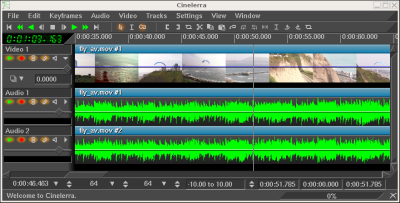
La timeline
Dans le menu Fenêtre, vous trouverez des options qui affectent les fenêtres principales. L'option Positions par défaut permet de repositionner les fenêtres dans une configuration de montage à 4 fenêtres. Sur les systèmes à deux écrans, l'opération de positionnement par défaut ne place les fenêtres que sur un seul écran.
La fenêtre de programme comporte de nombreuses fonctionnalités pour naviguer sur la timeline et l'afficher comme elle est structurée en mémoire : les pistes sont empilées verticalement et se déroulent horizontalement dans le temps. La barre de défilement horizontal vous permet de balayer le temps. La barre de défilement vertical vous permet de faire défiler les différentes pistes.

Une piste video
Les pistes vidéo représentent la succession de vos séquences vidéo, comme si vous aviez placé des pellicules photographiques bout à bout sur une table. Les images individuelles que vous voyiez sur la piste sont un extrait de ce qui est situé dans la vidéo à instant donné.

Une piste audio
Les pistes audio représentent votre média sonore par une forme d'onde audio.
En poursuivant l'analogie avec le film, c'est comme si vous pouviez "voir" la
bande magnétique horizontalement sur votre table.
Vous pouvez ajuster le grossissement horizontal et vertical des pistes en
utilisant la la barre du panneau de zoom.
Les commandes situés à la gauche des pistes sont appelées la boîte à
boutons. La boîte à boutons est utilisée pour contrôler le comportement
des pistes.
La navigation sur les pistes demande à choisir une piste spécifique (audio ou vidéo) et se déplacer jusqu'à un point précis de la piste. La fenêtre de programme comporte de nombreuses fonctionnalités de navigation et affiche la timeline telle qu'elle est structurée en mémoire.
La barre de défilement horizontal vous permet de balayer le temps.
La barre de défilement vertical vous permet de parcourir les pistes.
En plus des outils graphiques, vous pouvez aussi utiliser le clavier pour naviguer. En règle générale, la navigation au clavier est plus rapide que la navigation à la souris. Utilisez PAGE PREC et PAGE SUIV pour faire défiler les pistes vers le haut et vers le bas.
Vous aurez souvent besoin de vous déplacer au-delà des limites de la timeline, mais les barres de défilement ne vous le permettent pas. A la place, utilisez la flèche DROITE pour vous déplacer après la fin de la timeline.
Les touches de DEBUT et de FIN vous permettent de vous déplacer instantanément au début ou à la fin de la timeline. Dans le mode I-beam, maintenir la touche MAJ enfoncée en pressant la touche DEBUT ou FIN vous permettra de sélectionner tout ce qui se trouve entre le point d'insertion et la touche pressée.
Sous la timeline, vous trouverez le panneau de zoom. Le panneau de zoom comporte la valeur de zoom, l'amplitude, le zoom de piste, et le zoom de courbe. En plus des barres de défilement, ces valeurs sont les outils principaux pour positionner la timeline.

Modifier la valeur de zoom change l'unité de temps affichée sur la timeline. Cela permet de visualiser votre média depuis un affichage image par image jusqu'à un affichage complet de la timeline. Plus cette valeur est élevée, et plus vous verrez d'images à l'écran. Si votre souris possède une molette et qu'elle fonctionne avec X11, plutôt que les boutons de réglage, utilisez la molette pour zoomer et dézoomer.
L'amplitude n'affecte que l'audio. Elle détermine la taille de la forme d'onde lorsqu'elle est dessinée.
Le zoom de piste affecte toutes les pistes. Il détermine la hauteur de chaque piste. Si vous changez la valeur du zoom de piste, le zoom d'amplitude permet d'effectuer une compensation afin que les formes d'onde audio apparaissent proportionnelles.
Le zoom de courbe affecte les courbes de toutes les pistes. Il détermine
l'amplitude et le décalage des courbes. Les boutons de réglage règlent
l'amplitude de la courbe, mais la seule façon de modifier le décalage de courbe
est d'utiliser le  bouton remplir les
courbes.
bouton remplir les
courbes.
Utilisez les flèches GAUCHE et DROITE pour vous déplacer dans le temps avec de petits incréments. Vous aurez souvent besoin de vous déplacer au-delà de la fin de la timeline, mais les boutons de défilement ne vous le permetteront pas. A leur place, utilisez la flèche DROITE afin d'aller au-delà de l'extrémité de la timeline.
Les flèches HAUT et BAS permettent de modifier la valeur de zoom par puissances de deux.
CTRL-HAUT et CTRL-BAS permettent de modifier le zoom d'amplitude.
CTRL-PAGE PREC et CTRL-PAGE SUIV permettent de modifier le zoom de piste.
ALT-HAUT et ALT-BAS permettent de modifier le zoom de courbe.
Chaque piste possède un menu déroulant. Pour activer le menu déroulant de la piste, faites un clic droit sur la piste. Le menu déroulant affecte la piste, qu'elle soit armée sur la boîte à boutons ou non. Le menu de piste contient certaines options :
La première fois que vous lancerez Cinelerra, vous pourrez voir un point d'insertion clignotant dans la fenêtre de programme. Semblable au curseur d'un traitement de texte, le point d'insertion marque l'emplacement de la timeline où la prochaine opération du programme commencera. C'est aussi le point de départ de toutes les opérations de lecture. Lors du rendu, il définit la région de la timeline dont il faut effectuer le rendu.
Le point d'insertion sur la fenêtre principale du programme,
indiqué par la fine ligne verticale au point 00:00.500
Normalement, le point d'insertion se déplace en cliquant sur la barre temporelle. Toute région de la barre temporelle qui n'est pas obscurcie par des marques ou par les points d'entrée/sortie est une cible possible pour repositionner le point d'insertion.

La barre temporelle principale
En fonction du mode d'opération, le point d'insertion peut être déplacé en cliquant sur la timeline elle-même. Le point d'insertion possède deux modes de fonctionnement :
Le mode de fonctionnement est déterminé en choisissant la flèche ou le i-beam dans la barre d'outils.
Note: Les révisions 943 et 944 de Cinelerra CV (versions SVN allant du 19 au 21 octobre 2006) ne possèdent pas d'icônes de sélection des modes. Les modes "glisser-déposer" et "copier coller" ne font, dans ces révisions, plus qu'un. La touche MAJ permet de passer de l'un à l'autre de ces modes. C'est le cas de l'ebuild Gentoo media-video/cinelerra-cvs-20061020.

Les boutons de mode de montage
Si la flèche est en surbrillance, le mode glisser-déposer est actif. Dans le mode glisser-déposer, cliquer sur la timeline ne repositionne pas le point d'insertion. En fait, cela sélectionne l'ensemble du plan. Un glisser sur la timeline repositionne le plan, le collant à la limite d'un autre plan. C'est particulièrement utile pour modifier l'ordre des listes de lecture audio et pour déplacer des effets.
Si le i-beam est en surbrillance, le mode couper-coller est actif. Dans le mode couper-coller, cliquer sur la timeline repositionne le point d'insertion. Un glisser sur la timeline met la région en surbrillance. La région en surbrillance sera la région à reproduire lors de la prochaine opération de lecture, la plage à rendre lors de la prochaine opération de rendu et la région affectée par les opérations de couper-coller.

Pistes avec une zone en surbrillance, affichée à l'intérieur de la zone verte
MAJ-clic sur le timeline étend la région en surbrillance.
Un double-clic sur la timeline permet de sélectionner l'ensemble du plan sur lequel se trouve le curseur.
Lorsqu'on déplace le point d'insertion ou qu'on sélectionne des régions, les positions sont alignées soit sur les images soit sur les échantillons. Lorsque vous montez de la vidéo, vous choisirez d'effectuer un alignement sur les images alors que vous choisirez un alignement sur des échantillons si vous montez de l'audio. Indiquez votre préférence en définissant Configuration->Aligner le curseur sur les images.
Si la région en surbrillance est la région affectée par les opérations couper-coller, comment effectuer un couper et coller en mode glisser-déposer ? Dans ce cas, il faut placer les points d'entrée et de sortie de manière à définir la région affectée.
Dans les deux mode de montage, vous pouvez définir un point d'entrée et un point de sortie. Les points d'entrée/sortie définissent la région affectée. Dans le mode glisser-déposer, c'est la seule manière de définir une région affectée. A la fois dans le mode glisser-déposer et dans le mode couper-coller, la région en surbrillance a préséance sur les points d'entrée/sortie. Si une zone en surbrillance a été définie ainsi que les points d'entrée/sortie, la zone en surbrillance est affectée par les opérations de montage et les points d'entrée/sortie sont ignorés. S'il n'y a pas de région en surbrillance, les points d'entrée/sortie sont utilisés.
Normalement, les points d'entrée/sortie n'affectent pas la région qui est lue. Les points d'entrée/sortie déterminent la région qui sera lue uniquement si vous pressez la touche CTRL en même temps que vous lancez la commande de lecture.
Pour placer les points d'entrée/sortie, allez sur la barre temporelle et placez
le point d'insertion quelque part. Sélectionnez le
 bouton de point d'entrée.
Allez à un endroit situé après le point d'entrée et cliquez sur le
bouton de point de sortie.
bouton de point d'entrée.
Allez à un endroit situé après le point d'entrée et cliquez sur le
bouton de point de sortie.

Barre temporelle avec points d'entée/sortie définis.
Si vous sélectionnez soit le point d'entrée, soit le point de sortie, le point d'insertion va se déplacer à cet emplacement. Après avoir sélectionné un point d'entrée, si vous cliquez de nouveau le bouton de point d'entrée, le point d'entrée sera effacé. Après avoir sélectionné un point de sortie, si vous cliquez le bouton de point de sortie, le point de sortie sera effacé.
Astuce: Pour rapidement vous débarasser des points d'entrée et de sortie, sans vous préoccuper de l'endroit où ils se trouvent, ou bien s'ils sont présents ou non, faites tout simplement un double-clic sur les boutons [ et ]. Le premier clic va définir au point d'insertion un nouveau point ou repositionner celui qui existait déja; le second clic va le supprimer.
Si vous sélectionnez une région n'importe où ailleurs alors que les points d'entrée/sortie existent, les points existants seront repositionnés lorsque vous cliquerez les boutons des points d'entrée/sortie.
MAJ-clic sur un point d'entrée/sortie étend la zone en surbrillance jusqu'à ce point. Si une région était déja en surbrillance, cette région sera étendue jusqu'à ce point d'entrée/sortie.
A la place de la barre de boutons, vous pouvez utiliser les touches de raccourcis [ et ] pour insérer ou supprimer les points d'entrée/sortie.
A la fois dans le mode copier-coller et dans le mode glisser-déposer, les points d'entrée/sortie on préséance sur la zone en surbrillance. S'il existe à la fois une région en surbrillance et les points d'entrée-sortie, la région en surbrillance affecte la lecture alors que les points d'entrée-sortie affectent les opérations de montage. Afin d'éviter toute confusion, il est préférable d'utiliser soit la surbrillance, soit les points d'entrée-sortie mais pas les deux simultanément.
Le point d'insertion et les points d'entrée/sortie vous permettent de définir la région affectée, mais ils ne vous permettent pas de vous déplacer très facilement à des endroits précis de la timeline. Les marques sont faites pour cet usage.
Les marques sont une manière simple de définir des emplacements précis de la
timeline où vous désirez vous déplacer. Lorsque vous placez point d'insertion
quelque part et que vous cliquez  le
bouton de marque, une nouvelle marque est placée sur la timeline.
le
bouton de marque, une nouvelle marque est placée sur la timeline.

Barre temporelle avec une marque
Indépendamment des valeurs de zoom, en cliquant sur une marque, vous positionnez le point d'insertion exactement où elle se trouve. Vous effacerez une marque en la sélectionnant et en cliquant sur le bouton de marque.
MAJ-clic sur une marque met en surbrillance la région située entre cette marque et le point d'insertion. Si une région était déja en surbrillance, cela étend cette région en surbrillance jusqu'à la marque.
Un double-clic entre deux marques sur la barre temporelle met en surbrillance la région située entre les deux marques.
Presser la touche l a le même effet que cliquer sur le bouton de marque.
Si vous cliquez le bouton de marque lorsqu'une région est en surbrillance, l'état des deux marques placées à chaque extrémité de la zone en surbrillance est inversé. Cependant, si une extrémité comporte déjà une marque, la marque en question sera supprimée.
Les marques peuvent repositionner le point d'insertion lorsqu'elles sont
sélectionnées mais elles peuvent aussi être parcourues avec
 les boutons de parcours des
marques. Lorsqu'une marque est hors de vue, les boutons de parcours des
marques repositionnent la timeline de façon à ce que la marque soit visible.
Il y a aussi des raccourcis clavier pour le parcours des marques.
les boutons de parcours des
marques. Lorsqu'une marque est hors de vue, les boutons de parcours des
marques repositionnent la timeline de façon à ce que la marque soit visible.
Il y a aussi des raccourcis clavier pour le parcours des marques.
CTRL-GAUCHE repositionne le point d'insertion à la marque précédente.
CTRL-DROITE repositionne le point d'insertion à la marque suivante.
Avec le parcours des marques, vous pouvez vous déplacer rapidement en avant et en arrière sur la timeline mais vous pouvez aussi sélectionner des régions.
MAJ-CTRL-GAUCHE étend la région en surbrillance jusqu'à la marque précédente.
MAJ-CTRL-DROITE étend la région en surbrillance jusqu'à la marque suivante.
Cliquer manuellement sur le bouton de marque, ou utiliser la touche l, de manière répétitive pour supprimer une série de marques peut être fastidieux. Pour supprimer un ensemble de marques, mettez tout d'abord en surbrillance une région. Ensuite, utilisez la fonction Editer->Supprimer les marques. Si les points d'entrée/sortie existent, les marques entre les points d'entrée et de sortie seront supprimées et la région en surbrillance ignorée.
Editer les marques ou empêcher leur déplacement :
Uniquement dans le mode de montage par Copier-Coller, en validant Editer
les marques dans le menu de configuration, ou en désactivant
 le bouton Empêcher le
déplacement des marques sur la barre d'outils de la fenêtre principale, les
marques seront coupées, copiées et collées en même temps que la région
sélectionnée de la première piste armée.
le bouton Empêcher le
déplacement des marques sur la barre d'outils de la fenêtre principale, les
marques seront coupées, copiées et collées en même temps que la région
sélectionnée de la première piste armée.
De la même manière, si une zone sélectionnée d'une ressource est ajoutée depuis
la visionneuse vers la timeline à une position qui précède les marques, ces
marques seront poussées vers la droite de la barre temporelle de la durée de la
zone sélectionnée.
Pour éviter que les marques se déplacent sur la barre temporelle,
désactivez simplement l'option Editer les marques ou activez le
bouton Empêcher le
déplacement des marques.
Dans le mode de montage par glisser-déposer, les marques seront toujours
verrouillées à la barre temporelle, même si l'option Editer les marques
est activée.
Le montage s'effectue à la fois dans le domaine du temps et dans le domaine de la piste. Comme la timeline est constituée d'une pile de pistes, vous devez vous préoccuper, en plus de l'instant où un média déterminé doit apparaître sur la piste, de la manière de classer et de créer les pistes.
Dans le domaine du temps, Cinelerra offre de nombreuses manière d'aborder le processus de montage. Les trois méthodes principales sont le montage à deux écrans, le montage par glisser-déposer, et le montage par couper-coller.
Lors du montage, Cinelerra utilise un certain nombre de concepts qui s'appliquent à chacune des méthodes. La timeline est le lieu où sont représentées toutes les décisions de montage. C'est une pile de pistes au centre de la fenêtre principale. On peut la faire défiler vers le haut, le bas, la gauche et la droite à l'aide des barres de défilement qui se trouvent sur sa droite et en bas. On peut aussi la faire défiler vers le haut ou vers le bas à l'aide de la molette de la souris.
La région active est la plage de temps qui est affectée par les commandes de montage sur la timeline. La région active est d'abord déterminée par la présence des points d'entrée/sortie sur la timeline. S'ils n'existent pas, la région en surbrillance est utilisée. Enfin, s'il n'y a pas de zone en surbrillance, le point d'insertion est utilisé comme point de départ de la région active. Certaines commandes, comme le rendu, traitent tout l'espace situé à droite du point d'insertion comme étant la région active, alors que d'autres considèrent que la région active a une longueur nulle s'il n'y a pas de point de fin de défini pour la région active.
Enfin, les décisions de montage n'affectent jamais le matériau source. C'est un montage non destructif, il est devenu populaire avec l'audio parce que c'était beaucoup plus rapide que si vous aviez à copier tous les fichiers de média affectés par une opération de montage. Le montage n'affecte que des pointeurs vers le matériau source, ce qui fait que si vous voulez avoir un fichier de média qui représente vos décisions de montage à la fin de votre session de montage, vous devez en effectuer le rendu. Voir la section Le rendu de fichiers.
Chaque piste de la timeline comporte un jeu d'attributs sur sa gauche. Le plus important est l'attribut de piste armée.
Voir la section Raccourcis d'édition, pour les informations concernant les raccourcis d'édition.
| 6.2.1 La boîte à boutons | Activer certaines fonctionnalités sur certaines pistes | |
| 6.2.2 Décaler les pistes | Déplacer horizontalement une piste entière | |
| 6.2.3 Panoramique des pistes | Modifier les canaux audio de sortie | |
| 6.2.4 Panoramique automatique des pistes | Panoramique des pistes selon des dispositions courantes de haut-parleurs | |
| 6.2.5 Cartographie audio standard | Réaliser un panoramique qui fonctionne sur d'autre lecteur. | |
| 6.2.6 Manipuler les pistes | Déplacer d'un endroit à un autre une piste entière | |
| 6.2.7 Le montage à deux écrans | Utiliser deux denêtre vidéo pour le montage | |
| 6.2.8 Le montage par glisser-déposer | Glisser les objets à monter | |
| 6.2.9 Le montage par copier-coller | Editer le média comme du texte | |
| 6.2.10 Ajustement | Modifier les points d'entrée/sortie |
A gauche de la timeline se trouve une région affectueusement appelée patchbay, la boîte à boutons. La boîte à boutons active certaines fonctionnalités spécifiques à chaque piste. Toutes les pistes ont une zone de texte permettant de les nommer.
Toutes les pistes ont un bouton permettant de les déplier
 afin d'afficher davantage
d'options et pour afficher les effets sur la piste. Cliquez sur ce bouton pour
déplier ou replier la piste. S'il pointe vers le côté, la piste est repliée.
S'il pointe vers le bas, la piste est dépliée. Les effets existants
apparaissent en-dessous du média pour la piste.
afin d'afficher davantage
d'options et pour afficher les effets sur la piste. Cliquez sur ce bouton pour
déplier ou replier la piste. S'il pointe vers le côté, la piste est repliée.
S'il pointe vers le bas, la piste est dépliée. Les effets existants
apparaissent en-dessous du média pour la piste.
Toutes les pistes ont la ligne de boutons suivante correspondant à différentes fonctions.

Attributs de la piste
Si le bouton est coloré, il est actif. Si le bouton est d'une couleur identique à l'arrière-plan de la plupart des fenêtres, il est désactivé. Cliquez sur le bouton pour activer ou désactiver la fonction. L'utilisation de la souris accélère la configuration de plusieurs pistes en même temps.
Cliquer sur un attribut et le glisser sur les pistes adjacentes permet de copier cet attribut sur toutes ces pistes.
Maintenez enfoncée la touche MAJ en cliquant sur un attribut de piste pour activer l'attribut pour la piste en cours et basculer l'état de cet attribut pour toutes les autres pistes.
Maintenez enfoncée la touche MAJ en cliquant sur un attribut. Cliquez jusqu'à ce que toutes les pistes exceptée celle qui est sélectionnée soient désactivées. Glissez ensuite le curseur par-dessus la piste adjacente pour activer l'attribut pour la piste adjacente.
Autres attributs affectant la sortie de la piste :
Chaque piste possède, dans la boîte à boutons, une boîte de texte dans laquelle on peut inscrire une valeur du décalage. Vous pouvez avoir besoin de déplier la piste pour la voir. Voici des vues de la boîte à boutons lorsqu'elle est dépliée.
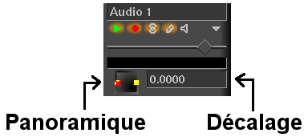
Panoramique et décalage d'une piste audio
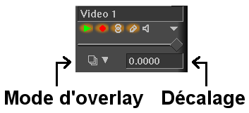
Mode d'overlay et décalage d'une piste vidéo
Le décalage est la valeur dont la piste est décalée vers la gauche ou vers la droite lors de la lecture. La piste n'est pas affichée décalée sur la timeline mais elle est décalée lorsqu'elle est jouée. Ceci est utile pour synchroniser de l'audio avec de la vidéo, pour créer de la fausse stéréo, ou pour compenser un effet qui décale le temps, tout ça sans avoir à effectuer d'opération de montage.
Entrez simplement la durée de décalage pour obtenir instantanément un décalage de la piste. La piste sera jouée plus tard si la valeur entrée est négative. Elle sera jouée plus tôt si cette valeur est positive. Les unités de décalage sont soit des secondes, soit les les unités natives de la piste. Choisissez les unités par un clic droit dans la boîte de texte de décalage et utilisez le menu contextuel.
Les paramètres de décalage sont regroupés avec le bouton de regroupement des réglages de niveau et le bouton d'armement des pistes.
Utilisez la molette de la souris sur la boîte de texte de décalage pour l'incrémenter ou le décrémenter.
Les pistes audio ont une boîte de panoramique dans leur boîte à boutons. Une piste audio doit être dépliée pour que la boîte de panoramique soit visible. La boîte de panoramique est affichée ici.
Panoramique et décalage d'une piste
Placez le pointeur dans la boîte de panoramique et cliquez-glissez pour repositionner la sortie audio dans la disposition des haut-parleurs. La puissance sonore de chacun des haut-parleurs est indiquée lors de l'opération de glisser. La boîte de panoramique utilise un algorithme spécial afin de permettre à l'audio d'être focalisée vers un seul haut-parleur ou d'être distribuée vers les haut-parleurs les plus proches lorsque plus de 2 haut-parleurs sont utilisés.
Un certain nombre de fonctions pratiques sont fournies qui permettent la configuration automatique du panoramique selon des standards habituels. Elles se trouvent dans le menu Audio. Ces fonctions n'affectent que les pistes audio qui ont enregistrement activé.
Bien que Cinelerra vous permette de faire correspondre n'importe quelle piste audio à n'importe quel haut-parleur, il existe des correspondances standard que vous pouvez utiliser afin d'être certain que le média pourra être lu ailleurs. De plus, la plupart des encodeurs ont besoin que les pistes audio correspondent à des numéros de hauts-parleurs standards ou ils ne fonctionneront pas.
Dans l'élément graphique position du canal, Voir la section Attributs du projet, les canaux sont numérotés afin de correspondre aux pistes de sortie vers lesquelles ils sont rendus. Pour de la stéréo, la source du canal 1 doit être la piste de gauche et la source du canal 2 doit être la piste de droite.
Pour le son 5.1 "surround", les sources pour les 6 canaux doivent être, dans l'ordre, le centre, l'avant-gauche, l'avant-droit, l'arrière-gauche, l'arrière-droit et les effets basses fréquences. Si les pistes de droite ne correspondent pas aux hauts-parleurs de droite, la plupart des encodeurs audio n'encoderont pas l'information de droite, s'ils encodent quelque chose. La piste des effets basses fréquences, plus particulièrement, ne peut pas contenir dans la plupart des cas de hautes fréquences.
Dans Cinelerra, les pistes peuvent contenir soit de l'audio, soit de la vidéo. Il n'y a pas de désignation particulière pour les pistes autre que le type de média qu'elles contiennent. Lorsque vous créez un nouveau projet, il comporte un certain nombre de pistes par défaut. Vous pouvez toujours ajouter ou supprimer des pistes par la suite depuis les menus. Le menu Pistes comporte des options permettant de manipuler simultanément plusieurs pistes. Chaque piste elle-même comporte un menu déroulant qui affecte une piste.
Affichez le menu déroulant en vous déplaçant sur une piste et en faisant un
clic-droit. Le menu déroulant affecte la piste qu'elle soit armée ou non.
Déplacer vers le haut et déplacer vers le bas déplace la piste vers le
haut ou vers le bas dans la pile. Supprimer la piste supprime la piste.
Les opérations depuis le menu des Pistes n'affectent que les pistes qui sont armées :
Enfin, vous pouvez créer de nouvelles pistes. Les menu Audio et Vidéo comportent chacun une option permettant d'ajouter une piste de leur type spécifique. Dans le cas de l'audio, la nouvelle piste est placée en bas de la timeline et le canal de sortie de la piste audio est incrémenté de un. Dans le cas de la vidéo, la nouvelle piste est placée en haut de la timeline. De cette manière, la vidéo se trouve dans un ordre naturel de composition. Les nouvelles pistes vidéo sont surchargées au-dessus des anciennes pistes.
C'est la manière la plus rapide de réaliser un montage à partir de fichiers de films. L'idée consiste à visualiser le fichier de film dans une fenêtre et de visualiser le programme dans une autre fenêtre. Des parties du film sont définies dans la fenêtre de la visionneuse et transférées à la fin du programme dans la fenêtre de programme.
La manière de commencer une session de montage à deux écrans est de charger des ressources. Depuis fichier->Charger des fichiers, chargez des vidéos avec la stratégie d'insertion Créer de nouvelles ressources uniquement. De cette manière, la timeline demeure inchangée alors que les nouvelles ressources sont créées. Allez dans la fenêtre des ressources et choisissez le dossier Media. Les ressources qui viennent d'être chargées devraient s'y trouver. Double-cliquez sur une ressource ou bien glissez-la de la partie média de la fenêtre vers la fenêtre de la visionneuse.
Il doit y avoir suffisamment de pistes armées sur la timeline pour pouvoir y placer les coupes désirées du matériau source (généralement une piste vidéo et deux pistes audio). Si ce n'est pas le cas, créez de nouvelles pistes et armez-les.
Dans la visionneuse, définissez un clip depuis votre film :
bouton de point d'entrée.
Les deux points devraient apparaître sur la barre temporelle et définir un
clip.
Vous pouvez alors faire plusieurs choses avec ce clip :
 Insère le clip sur la timeline après le point d'insertion.
Insère le clip sur la timeline après le point d'insertion. Permet de remplacer la région de
la timeline située après le point d'insertion par un clip.
Permet de remplacer la région de
la timeline située après le point d'insertion par un clip. Crée, dans la fenêtre des
ressources, un nouveau clip qui contient la région affectée, sans modifier la
timeline. Chaque clip comporte un titre et une description ; ils sont
optionnels.
Crée, dans la fenêtre des
ressources, un nouveau clip qui contient la région affectée, sans modifier la
timeline. Chaque clip comporte un titre et une description ; ils sont
optionnels.
Le montage à deux écrans est aussi possible en n'utilisant que des raccourcis clavier. Lorsque vous survolez un bouton avec la souris, une infobulle devrait apparaître et vous indiquer quelle touche est liée à ce bouton. Dans la visionneuse, les touches du pavé numérique permettent de commander le déplacement et les touches [, ] et v permettent de placer les points d'entrée/sortie et l'insertion.
Le montage par glisser-déposer est une manière rapide et simple de travailler avec Cinelerra en n'utilisant que la souris. L'idée de base est de créer de nombreux clips, et ensuite de les glisser dans l'ordre sur la timeline en construisant un prototype du film que vous pouvez visionner dans le compositeur. Si, après l'avoir visionné, vous désirez réarranger vos clips, insérer des effets, ajouter des transition ou retrancher ou ajouter du matériel, glissez-les simplement et déposez-les sur la timeline.

Cinelerra remplit les pistes audio et vidéo qui se trouvent sous le curseur avec les données du fichier. Ceci affecte les pistes que vous venez de créer initialement et les pistes vers lesquelles vous glissez le média. Si le média comporte une piste vidéo et deux pistes audio, vous devrez créer une piste vidéo et deux pistes audio sur la timeline et le média devra être glissé vers la première piste vidéo. Si le média ne comporte que de l'audio, vous aurez besoin d'une piste audio sur la timeline pour chacune des pistes audio du média et le média devra être glissé sur la première piste audio.
Lorsque vous glissez votre média choisi, le pointeur de la souris va glisser
l'image réduite du média, et une fois sur la timeline, les bords d'un rectangle
de la taille de l'édition que vous allez réaliser.
Glissez le média à la position désirée sur une piste vide et déposez-le.
S'il y a d'autres éditions sur la piste, quand vous déplacez le rectangle sur
une édition, vous allez voir des flèches apparaître aux frontières de
l'édition. Si vous déposez le média à cet endroit, la nouvelle édition va
débuter à l'endroit indiqué par les flèches.
Puisque le pointeur de la souris se trouve au milieu du rectangle, lorsque ce rectangle est plus grand que la partie visible de la timeline, il n'est pas évident d'indiquer la position où l'insertion doit être faite. Ceci arrive fréquemment pour les longs médias. Augmenter la durée visible surla timeline va réduire la taille du rectangle, et faciliter l'insertion au bon endroit.
Lors du glisser, le média se colle au début de la piste si elle est vide. S'il y a déjà des plans sur la piste, le média se colle à la limite de plan la plus proche.
Vous pouvez aussi glisser plusieurs fichiers depuis la fenêtre des ressources. Soit en dessinant une boîte autour des fichiers, soit en utilisant MAJ, soit en utilisant CTRL lors de la sélection des fichiers. Lorsque vous déposez les fichiers sur la timeline, ils sont concaténés. Le comportement de la touche MAJ ou de la touche CTRL change selon que les ressources sont affichées sous forme de listes ou de vignettes.
Pour afficher les ressources sous forme de vignettes ou sous forme de liste, faites un clic droit dans la liste des médias. Choisissez soit Afficher sous forme de vignettes, soit Afficher sous forme de liste pour modifier le format de l'affichage.
Lors de l'affichage sous forme de liste dans la fenêtre des ressources, MAJ-clic permet d'étendre le nombre de sélections en surbrillance, CTRL-clic sur les fichiers de média en mode liste ajoute des fichiers un par un.
Lors de l'affichage des icônes dans la fenêtre des ressources, MAJ-clic ou CTRL-clic permet de sélectionner les fichiers de média un par un.
En plus de la possibilité de glisser des fichiers de média, si vous créez des clips et ouvrez le dossier des clips, vous pouvez glisser des clips sur la timeline.
Il y a sur la timeline d'autres fonctionnalités de glisser. Glisser des plans
le long de la timeline vous permet de trier vos listes de lecture de musique,
de trier des séquences de film, et permet de meilleures démonstrations au NAB
mais guère plus. Pour activer la fonction de glisser-déposer de la timeline,
choisissez le bouton avec la flèche  .
Déplacez-vous sur un plan et glissez-le. Lors de l'opération de glisser, le
plan va être attiré à la limite la plus proche.
.
Déplacez-vous sur un plan et glissez-le. Lors de l'opération de glisser, le
plan va être attiré à la limite la plus proche.
Sélectionnez une pistes avec diverses scènes.

Piste d'origine avec trois scènes.
Allez à la scène n°3, cliquez et glissez-la vers le milieu.
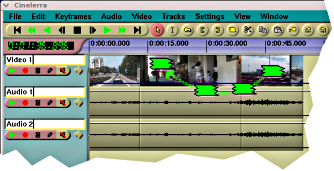
Lorsque vous déposez la scène n°3

la scène n°2 se décale vers la droite

Et voici à quoi ressemble la séquence terminée.
S'il y a plus d'une piste armée, Cinelerra va glisser tous les plans qui commencent à la même position que le plan où se trouve actuellement le curseur. En d'autres termes, vous pouvez glisser et déposer un groupe de plans. Cinelerra reconnaît comme groupe les plans de différentes pistes armées qui ont leur point de départ aligné, et ce indépendemment du fait qu'ils appartiennent à la même source ou qu'ils aient leur fin alignée.
Quand vous glissez et déposez des média sur la timeline:
Si vous déposez un média lorsque les flèches >< sont affichées, le clip sera
coupé et collé au début de la région délimitée par le centre des flèches ><.
Les éditions suivantes vont se déplacer.
Si vous déposez un média lorsque les flèches >< ne sont pas affichées,
l'affichage du clip d'origine sera désactivé, et il sera copié où vous l'avez
déposé. Les éditions suivantes ne seront pas déplacées. Un silence va
apparaître à la place du média d'origine.
Dans le mode d'édition par glisser-déposer, vous ne pouvez pas glisser et déposer des marques. Elles seront verrouillées à la barre temporelle, même quand l'option "Editer les marques" est activée. Cependant, avec l'option "Editer les marques" activée, si une partie sélectionnée d'une ressource est copiée de la visionneuse vers la timeline sur une position située avant des marques, ces marques seront poussées vers la droite pour la durée de la partie sélectionnée.
Avec les points d'entrée/sortie vous pouvez réaliser des opérations de couper/coller dans le mode glisser-déposer tout comme dasn le mode copier-coller. Allez dans le menu Edition pour voir la liste des raccourcis.
C'est la méthode traditionnelle pour effectuer le montage avec les outils de montage audio. Dans le cas de Cinelerra, vous devrez soit lancer une seconde instance de Cinelerra et copier d'une instance vers l'autre, soit copier entre pistes différentes de la même instance, soit charger un fichier de média dans la visionneuse et effectuer la copie depuis cet endroit.
Chargez un certain nombre de fichiers sur la timeline. Pour effectuer un
montage par couper-coller, sélectionnez le
 bouton i-beam. Sélectionnez une région
de la timeline au moyen d'un cliquer-glisser et utilisez le
bouton i-beam. Sélectionnez une région
de la timeline au moyen d'un cliquer-glisser et utilisez le  bouton couper
pour la couper. Déplacez le point d'insertion à un autre endroit de la
timeline et sélectionnez le
bouton couper
pour la couper. Déplacez le point d'insertion à un autre endroit de la
timeline et sélectionnez le  bouton coller.
En supposant que les points d'entrée/sortie sont définis sur la timeline, ceci
réalise une opération de couper-coller.
bouton coller.
En supposant que les points d'entrée/sortie sont définis sur la timeline, ceci
réalise une opération de couper-coller.
Si les points d'entrée/sortie sont définis, le point d'insertion et la région en surbrillance seront écrasés par les points d'entrée/sortie lors des opérations de presse-papiers. De cette manière, avec les points d'entrée/sortie, vous pouvez effectuer du couper-coller en mode glisser-déposer comme en mode couper-coller.
Il y a d'autres opérations que vous pouvez réaliser. Allez dans le menu Editer pour en voir la liste ainsi que les raccourcis clavier qui y sont associés.
Dans le mode Couper-coller vous pouvez aussi éditer les marques. En activant Editer les marquer dans le menu Configuration, ou en désactivant le bouton Empêcher les marques de se déplacer, les marques peuvent être coupées, copiées ou collées en même temps que les sélections des pistes armées.
Lorsque l'on monte de l'audio, il est habituel de couper depuis une partie de la forme d'onde vers la même partie d'une autre forme d'onde. Le point de départ et le point de fin de la coupe sont identiques sur chacune des formes d'onde et peuvent être légèrement décalés, car les données de l'onde sont différentes. Il serait très difficile de mettre en surbrillance la forme d'onde à couper et de mettre en surbrillance la seconde forme d'onde à coller sans modifier les positions relatives de début et de fin.
Une possibilité pour simplifier ces opérations est de lancer une seconde instance de Cinelerra, de couper et coller pour déplacer le média entre les deux instances. De cette manière, les deux régions en surbrillance peuvent exister simultanément.
Une autre possibilité est de placer les points d'entrée/sortie correspondant à la région source de la forme d'onde source et de placer des marques sur la région de destination de l'onde de destination. Effectuez une opération de couper, supprimez les points d'entrée/sortie, sélectionnez la région entre les marques et effectuez le coller.
Une dernière opération de montage par couper-coller est l'opération Editer->Réinitialiser. Si une région est en surbrillance ou si les points d'entrée/sortie existent, la région affectée est réinitialisée par Editer->Réinitialiser. Mais si le point d'insertion est sur une limite de plan et que les plans situés de chaque côté de cette limite de plan appartiennent à la même ressource, les plans seront alors combinés en un seul plan compris dans la ressource. Le début de ce plan unique est le début du premier plan et la fin de plan, la fin du deuxième. Ceci peut soit étendre, soit réduire le plan.
Avec un certain nombre de plans sur la timeline, il est possible de faire de l'ajustement. Lors de l'ajustement, vous réduisez ou agrandissez les limites des plans en les glissant. Il est possible de faire de l'ajustement à la fois dans le mode glisser-déposer et dans le mode couper-coller. Déplacez le curseur sur la limite d'un plan jusqu'à ce qu'il change de forme. Le curseur prendra la forme d'une flèche soit d'agrandissement vers la droite, soit d'agrandissement vers la gauche. Si le curseur se présente sous la forme d'une flèche d'agrandissement vers la gauche, l'opération de glisser affectera le début du plan. Si la flèche est orientée vers la droite, l'opération de glisser affectera la fin du plan.
Lorsque vous cliquez sur la limite d'un plan afin de débuter le glisser, le bouton de la souris utilisé détermine le comportement du glisser qui suivra. Il y a trois comportements possibles associés aux boutons de la souris définis dans les préférences de l'interface utilisateur. Voir la section Interface.
L'effet de chaque opération de glisser ne dépend pas seulement du comportement des boutons mais aussi quelle est la limite - fin ou début - du plan qui est glissée. Lorsque vous relâchez le bouton de la souris, l'opération d'ajustement est effectuée.
Dans une opération de Glisser tous les plans qui suivent, le début du plan pourra soit supprimer des données du plan si vous le déplacez vers l'avant, soit coller de nouvelles données depuis ce qui précède le plan si vous le déplacez en arrière. La fin du plan collera des données dans le plan si vous le déplacez vers l'avant, ou coupera des données depuis la fin du plan si vous le déplacez vers l'arrière. Tous les plans qui suivent seront décalés. Enfin, si vous glissez la fin du plan avant le début du plan, le plan sera supprimé.
Dans une opération de Ne glisser qu'un seul plan, le comportement est le même si vous glissez le début ou la fin du plan. La seule différence est qu'aucun des autres plans ne sera décalé. A la place, tout ce qui est adjacent au plan actuel sera agrandi ou réduit pour remplir les vides laissés par l'opération d'ajustement.
Dans une opération de Ne glisser que la source, rien n'est coupé ni collé. Si vous déplacez le début ou la fin du plan vers l'avant, la source de référence dans le plan sera déplacée vers l'avant. Si vous déplacez le début ou la fin du plan vers l'arrière, la source de référence sera déplacée en arrière. Les plans restent au même endroit sur la timeline mais la source se décale.
Pour tous les formats de fichiers autres que les images fixes, l'étendue de l'opération d'ajustement est tronquée à la taille du fichier source. Une tentative de glisser le début du plan avant le début de la source le limitera au début du fichier source.
Dans toutes les opérations d'ajustement, tous les plans qui commencent à la même position que le curseur lorsque l'opération de glisser commence, sont affectés. Désarmez les pistes dont vous voulez éviter que les plans ne soient affectés.
Cette fenêtre affiche la sortie de la timeline. C'est l'interface de la plupart des opérations de composition ou des opérations qui affectent l'aspect de la sortie de la timeline. Les opérations effectuées dans le Compositeur affectent la timeline mais n'affectent pas les clips.
| 7.1 Les commandes du compositeur | ||
| 7.2 La composition |
La sortie vidéo possède plusieurs fonctions de navigation. La taille de la sortie vidéo est soit verrouillée à la taille de la fenêtre ou libérée à l'aide des barres de défilement pour la navigation. On peut effectuer des zooms et des panoramiques dans la sortie vidéo. Naviguer dans la sortie vidéo de cette manière n'affecte pas la sortie rendue, cela ne modifie que la vue dans la fenêtre du compositeur.
Si le point de vue n'est pas verrouillé à la taille de la fenêtre, un clic avec le bouton central et un glisser n'importe où dans la vidéo permettent d'effectuer un panoramique.
Presser les touches + et - permet de zoomer ou de dézoomer la sortie vidéo.
Une copie de la plupart des fonctions disponibles dans la fenêtre principale se
trouve sous l'affichage vidéo. Il y a, de plus, un
 menu de zoom et une
menu de zoom et une
 lampe-témoin.
lampe-témoin.
Le menu de zoom permet d'obtenir tous les facteurs d'agrandissement disponibles et, à l'aide de l'option Auto, d'adapter la taille de la vidéo à la taille de la fenêtre. Le menu de zoom n'affecte pas la taille de la fenêtre.
La lampe témoin s'allume en rouge lorsqu'une opération de rendu est en cours. C'est utile pour savoir si la vidéo affichée est à jour.
Un clic droit n'importe où dans la vidéo affiche un menu avec les facteurs de zoom et d'autres options. Dans ce cas particulier, les facteurs de zoom redimensionnent l'ensemble de la fenêtre et non pas la vidéo uniquement.
Les options Réinitialiser la caméra et Réinitialiser le projecteur recentrent la caméra et le projecteur. Voir la section La composition.
L'option Cacher les commandes cache tout sauf la vidéo.
Sur la gauche de la sortie vidéo se trouve une barre d'outils spécifique à la fenêtre du compositeur. Voici les fonctions de cette barre d'outils :
Ceci permet de désactiver les modifications dans le sortie du compositeur lors des clics dans cette fenêtre. C'est un calque supplémentaire au-dessus du bouton d'armement des pistes servant à éviter les modifications non désirées.
Cet outil permet des zooms dans la sortie
du compositeur sans avoir à redimensionner la fenêtre. Si la sortie vidéo est
à ce moment-là liée à la taille de la fenêtre, un clic avec la loupe la
déverrouillera et créera les barres de défilement pour la navigation.
Un clic gauche permet de zoomer la vidéo.
Ctrl-clic gauche permet de dézoomer la vidéo.
Les opérations de zoom peuvent aussi se faire à l'aide de la molette de la
souris.
Ce bouton permet d'activer l'outil de montage masque. Voir la section Les masques. Activez la fenêtre d'informations pour afficher les options de cet outil.
Ce bouton  permet d'activer l'outil de
montage caméra. Voir la section La caméra et le projecteur. Activer la fenêtre
d'information pour afficher les options de cet outil.
permet d'activer l'outil de
montage caméra. Voir la section La caméra et le projecteur. Activer la fenêtre
d'information pour afficher les options de cet outil.
Ce bouton  permet d'activer l'outil de
montage projecteur Voir la section La caméra et le projecteur. Activer la fenêtre
d'informations 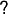 pour afficher les
options de cet outil.
permet d'activer l'outil de
montage projecteur Voir la section La caméra et le projecteur. Activer la fenêtre
d'informations 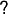 pour afficher les
options de cet outil.
Ce bouton  permet d'activer l'outil de
découpage. Voir la section Recadrage. La fenêtre d'information sur l'outil
doit être activée pour pouvoir
utiliser cet outil.
permet d'activer l'outil de
découpage. Voir la section Recadrage. La fenêtre d'information sur l'outil
doit être activée pour pouvoir
utiliser cet outil.
Ceci permet d'activer la pipette. La pipette détecte la couleur sur laquelle
elle se trouve et l'enregistre dans une zone temporaire. En activant la
fenêtre d'information , la couleur
actuellement sélectionnée est affichée. Cliquez n'importe où dans la fenêtre
de l'affichage vidéo pour sélectionner la couleur se trouvant à cet endroit.
La pipette ne vous permet pas uniquement de voir les couleurs qui ont été
capturées : sa valeur peut aussi être appliquée à de nombreux effets. La
manière d'utiliser la pipette varie selon les effets.
Cet bouton ne fonctionne qu'en conjonction avec l'une des autres commandes du compositeur. En se basant sur la commande active dans le compositeur, ce bouton va activer/désactiver la boîte de dialogue correspondant à la commande.
Les commandes ayant des boîtes de dialogue sont :
Ce bouton  affiche les zones sûres de la
sortie vidéo. Ceci n'affecte pas la sortie rendue. Voir la section Les zones sûres.
affiche les zones sûres de la
sortie vidéo. Ceci n'affecte pas la sortie rendue. Voir la section Les zones sûres.
Une grande partie de la taille du binaire de Cinelerra est directement liée à la composition. Lorsque vous changez le format d'une vidéo en la passant du 4/3 au 16/9, vous faites de la composition. La modification de la résolution dans un affichage, la division d'écran, les fondus entrant et sortant, parmi d'autres choses, sont toutes des opérations de composition dans Cinelerra. Cinelerra détecte lorsqu'il est dans une opération de composition et n'effectue la visualisation via le moteur de composition que dans ce cas. Sinon, il utilise le décodeur le plus rapide disponible avec le matériel.
Les opérations de composition sont effectuées sur la timeline et dans la fenêtre de composition. Il existe des raccourcis dans la fenêtre des ressources pour modifier certains attributs de composition. Une fois qu'un certain nombre de fichiers vidéo se trouvent sur la timeline, la fenêtre du compositeur est le bon endroit pour s'essayer à la composition.
| 7.2.1 La caméra et le projecteur | ||
| 7.2.2 Les masques | ||
| 7.2.3 Recadrage | ||
| 7.2.4 Les zones sûres | ||
| 7.2.5 Les modes de calque | ||
| 7.2.6 Les dimensions de la piste et de la sortie |
Dans la fenêtre du compositeur, les fonctions les plus importantes sont le
bouton de la caméra et le
bouton du projecteur. Ils permettent
de commander les opérations de la caméra et du projecteur. La routine
de composition de Cinelerra utilise un "temporaire", une image de la vidéo dans
l'espace mémoire de Cinelerra où tous les traitements graphiques sont
effectués. A l'intérieur du pipeline de composition de Cinelerra, la caméra détermine d'où, dans la source
vidéo, le "temporaire" est copié. Le projecteur détermine vers quel emplacement
de la sortie le "temporaire" est copié.
Le processus ressemble beaucoup à la numérisation image par image d'une bobine de film, suivie (en utilisant Gimp par exemple) d'une modification numérique à l'aide de divers filtres. Une fois l'image transformée par les filtres (correction des couleurs par exemple), nous pouvons projeter l'image terminée sur une nouvelle bobine de film, en créant ainsi une nouvelle version "modifiée" de l'original.
Chaque piste possède un "temporaire" différent qui est défini par les dimensions de la piste. En redimensionnant les pistes vous pouvez créer des effets multi-écran, des panoramiques et des zooms.

Représentation visuelle du pipeline de composition
Lors du montage à l'aide de la caméra et du projecteur dans la fenêtre de composition, la première piste ayant la fonction d'enregistrement active est la piste affectée. Même si la piste est entièrement transparente, c'est tout de même la piste affectée. S'il existe plusieurs pistes vidéo, la manière la plus simple pour sélectionner une piste pour le montage est de faire MAJ-clic sur l'icône d'enregistrement de la piste. Ceci permet d'isoler cette piste.
Le but du projecteur est de placer le contenu du temporaire dans la sortie du projet. Il doit mixer plusieurs sources depuis différentes pistes vers une seule piste finale de sortie.
La trame d'alignement du projecteur est identique au visuel de la caméra, sauf qu'il indique dans quelle partie de la sortie vidéo mettre le contenu de chaque temporaire.

Lorsque le bouton du projecteur est actif dans la fenêtre du compositeur, vous êtes dans le mode de montage du projecteur. Une boîte-guide apparaît dans la fenêtre vidéo. Un glisser n'importe où dans la fenêtre vidéo permet de déplacer cette boîte-guide, ce déplacement s'effectuant avec la vidéo qu'elle contient. Vous pouvez redimensionner la boîte-guide avec la vidéo qu'elle contient par l'utilisation de MAJ-glisser n'importe où dans la fenêtre vidéo. Une fois que vous avez placé la vidéo avec le projecteur, vous êtes prêt à maîtriser la caméra.
Sélectionnez le bouton de la caméra pour
activer le mode de montage de la caméra. Dans ce mode, la boîte-guide montre
la position de la caméra en relation avec ses positions passées et futures et
non sa position en relation avec la source vidéo. Un glisser de la boîte de la
caméra dans la fenêtre de composition ne déplace pas la boîte mais la position
de la vidéo à l'intérieur de la boîte.
Le visuel est une fenêtre de la caméra qui encadre la zone de la source vidéo à balayer. Le visuel est représenté par un cadre rouge avec des diagonales.
Le visuel

Les dimensions du visuel
Les dimensions du visuel sont définies par les dimensions de la piste en cours. Un visuel plus petit (640x400) ne permet de faire l'acquisition que d'une petite zone. Un visuel plus grand (800x200) permet de faire l'acquisition d'une zone plus grande que la source vidéo, les zones vides étant remplies par du blanc.
Une fois que nous avons défini notre visuel, il nous faut encore placer la caméra juste au-dessus de la zone de la source vidéo qui nous intéresse. Pour diriger la position de la caméra :
Lorsque nous effectuons un glisser sur le visuel dans la fenêtre du compositeur (bien que ce soit anti-intuitif au départ), le visuel ne se déplace pas mais la zone de la vidéo qui se trouve sous l'emplacement de la caméra le fait, comme si nous regardions sur un moniteur l'image produite par une caméra en mouvement.

Dans la fenêtre du compositeur, le visuel est toujours affiché
centré, ce qui se déplace est la vidéo qui se trouve en dessous
Par exemple, si vous glissez la caméra vers le bas, le visuel se déplace effectivement vers le bas sur la vidéo, mais de notre point de vue, sur l'écran du compositeur, nous voyons la vidéo se déplacer vers le haut. Lorsque vous déplacez la caméra vers la droite, la vidéo semble se déplacer vers la gauche et ainsi de suite.
Note : la boîte-guide s'affiche lorsque la position de la caméra est en relation avec les positons passées et futures de la caméra, et non lorsqu'elle est en relation avec la source vidéo.
Dans la fenêtre de composition, il y a un menu déroulant d'options pour la caméra et le projecteur. Faites un clic droit sur la partie vidéo de la fenêtre de composition pour afficher ce menu.
La caméra et le projecteur possédent des raccourcis claviers qui n'apparaissent pas dans le menu déroulant, et ne sont pas représentés sur la vidéo. Ils sont accessibles depuis la fenêtre des options de l'outil. La plupart des opérations dans la fenêtre de composition ont une fenêtre d'options qui est activée à l'aide du bouton point d'interrogation.

La fenêtre d'outil de la caméra et du projecteur
Dans le cas de la caméra et du projecteur, la fenêtre des options de l'outil affiche les coordonnées x, y et z. Les positions de la caméra et du projecteur peuvent être placés très précisément soit à l'aide des curseurs, soit en entrant directement les coordonnées. Il existe 9 types de justification prédéfinis pour un accès rapide. Une justification habituelle est une projection en haut et à gauche après avoir réduit l'image. Ceci est utilisé lorsqu'on réduit la taille de la vidéo avec un ajustement du rapport d'aspect.
 Gauche
Gauche
 Centré horizontalement
Centré horizontalement
 Droite
Droite
 Haut
Haut
 Centré verticalement
Centré verticalement
 Bas
Bas
L'effet de translation permet d'effectuer simultanément une conversion de rapport d'aspect et une réduction mais il est plus facile à utiliser si la vidéo réduite est placée en haut et à gauche du temporaire plutôt qu'au milieu. La taille de la piste est fixée à la taille originale de la vidéo et la caméra est centrée. La taille de la sortie est identique à la taille de la vidéo réduite. Sans aucun effet, ceci permet d'obtenir en sortie juste la partie centrale recadrée de la vidéo.
L'effet de translation est déposé sur la piste vidéo. Les dimensions en entrée de l'effet de translation sont définies d'après la taille d'origine et les dimensions de sortie à la taille réduite. Pour placer la vidéo réduite au centre de la section que le projecteur affiche, il faut décaler les valeurs de sortie de x et de y par un calcul compliqué. A la place, nous laissons les valeurs de sortie de x et de y à 0 et nous utilisons la fenêtre d'options de l'outil du projecteur.
En choisissant simplement  la
justification à gauche et
la
justification à gauche et  la justification
en haut, le projecteur affichera une image réduite du coin supérieur gauche du
temporaire au centre de la sortie.
la justification
en haut, le projecteur affichera une image réduite du coin supérieur gauche du
temporaire au centre de la sortie.
Les masques permettent de sélectionner une région de la vidéo soit pour l'afficher, soit pour la cacher. Les masques peuvent aussi être utilisés en conjonction avec un autre effet pour le restreindre à une certaine région de l'image. Une copie d'une piste vidéo peut être légèrement retardée et non masquée dans les zones où se trouvent des objets indésirables sur l'une des copies mais pas sur l'autre copie. Une correction des couleurs peut être nécessaire en une partie de l'image, mais pas dans une autre. La suppression des perches de microphones, d'avions ou de vos femmes sont d'autres utilisations des masques.
L'ordre du pipeline de composition affecte ce qui peut être fait avec les masques. Principalement, les masques sont exécutés sur le temporaire après les effets et avant le projecteur. Ceci signifie que plusieurs pistes peuvent être renvoyées vers une piste masquée et projetées avec le même masque.
Notre pipeline de composition comporte maintenant une étape de masquage. Il y a 8 masques possibles par piste. Chaque masque est défini séparément, bien qu'ils puissent effectuer la même opération, qu'il s'agisse d'addition ou de soustraction.

Pipeline de composition avec masques
Pour définir un masque, allez à la fenêtre de composition et activez le commutateur de masque. Placez-vous maintenant sur la vidéo et cliquez-glissez.
IMPORTANT : si vous désirez qu'un masque évolue dans le temps, vous devez sélectionner images-clés automatiques (Voir la section Les images-clés automatiques,). Si vous ne sélectionnez pas images-clés automatiques, la position du masque restera la même, même si vous l'éditez en différents emplacements de la timeline.

Cliquez-glissez ensuite sur une autre partie de l'image pour créer un nouveau point du masque. Bien que ce ne soit pas le comportement standard des courbes de Bezier, cette interface de gestion des masques effectue en temps réel ce que produira l'effet du masque. La création de chacun des points du masque étend une courbe en élastique.
Une fois les points définis, ils peuvent être déplacés par un Ctrl-glisser à proximité d'un coin.
CTRL-glisser vous permet de déplacer des points existants à
de nouveaux emplacements, en modifiant ainsi la forme du masque
Ceci, cependant, ne lisse pas la courbe. Les points d'entrée-sortie de la courbe de Bezier sont accessibles par MAJ-glisser à proximité d'un coin. MAJ-glisser près d'un point d'entrée/sortie permettra ensuite de déplacer ce point.
MAJ-glisser pour activer les poignées de la courbe de Bezier
pour créer des courbes entre les points du masque
Enfin, une fois que vous avez défini un masque, le masque peut être déplacé d'un seul tenant par ALT-glisser sur le masque. L'édition des masques dans Cinelerra est identique à celle de Gimp sauf dans que dans ce cas, l'effet du masque est toujours actif.

CTRL-ALT-glisser déplace un masque entier
vers un nouvel emplacement de l'écran
Les masques ont beaucoup d'autres paramètres qui ne peuvent pas être représentés par des couches vidéo. On les trouve dans la fenêtre des outils pour les masques. Choisir le point d'interrogation lorsque le bouton de masque est en surbrillance permet d'afficher les options de masque.

Fenêtre des options de masque
Le mode du masque détermine si le masque doit supprimer des données ou les rendre visible. Dans le mode soustractif, le masque fait disparaître la vidéo. Dans le mode additif, le masque fait apparaître la vidéo, et tout ce qui se trouve à l'extérieur du masque disparaît.
Mode de masque
La valeur du masque détermine l'intensité de l'addition ou de la soustraction qui sera effectué. Dans le mode soustractif, les valeurs les plus élevées enlèvent davantage d'alpha. Dans le mode additif, les valeurs les plus élevées rendent la région du masque plus lumineuse alors que le région à l'extérieur du masque reste toujours cachée.
Valeur du masque
Le numéro du masque détermine lequel des 8 masques possibles est en cours d'édition. Il y a 8 masques possibles par piste. Lorsque vous cliquez-glissez dans la fenêtre du compositeur, vous n'éditez qu'un seul des masques. Changez la valeur du numéro de masque pour en éditer un autre. Le masque précédent est encore actif mais seule la courbe soulignant le masque en cours est visible.
Lorsque l'on utilise plusieurs masques, leurs effets sont affectés d'un OU. Chaque masque d'une piste utilise la même valeur et le même mode.
Par défaut, les bords du masques sont nettement découpés ce qui est rarement désiré. Le paramètre d'adoucissement détermine de combien de pixels il faut adoucir le masque. Ceci crée des bords plus doux mais prend davantage de temps lors du rendu.
Paramètre d'adoucissement
Il y a enfin des paramètres qui affectent un point du masque en cours plutôt que le masque tout entier. Ce sont Supprimer, x, y. Le point actif est défini comme étant le dernier point glissé dans la fenêtre du compositeur. Tous les points peuvent être activés simplement en faisant un CTRL-clic à proximité sans déplacer le curseur. Une fois qu'un point est actif, Supprimer le supprimera et x, y permettent de le repositionner en entrant des valeurs numériques des coordonnées.
Le recadrage modifie les dimensions de l'image de sortie et le projecteur
réduit la partie visible de l'image. Activez
l'outil de recadrage et la fenêtre des
options de l'outil dans la fenêtre
de composition.
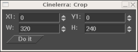
Boîte de dialogue du contrôle de recadrage
Cliquez n'importe où dans la vidéo pour définir la zone de recadrage. Ceci dessine un rectangle par dessus la vidéo. Cliquez-glissez n'importe où dans la vidéo pour créer un nouveau rectangle. Cliquez-glissez sur n'importe quel coin du rectangle pour repositionner ce coin.

Zone de recadrage définie
ALT-cliquer dans le rectangle de recadrage déplace le rectangle vers n'importe quelle position, sans le redimensionner.
La fenêtre de l'outil permet d'entrer les coordonnées sous forme de texte et d'exécuter l'opération de recadrage. Lorsque le rectangle est placé, cliquez le bouton Exécuter dans la fenêtre de l'outil pour effectuer l'opération de recadrage.
Note : Les coordonnées X1,Y1 et X2,Y2 du dialogue de contrôle du recadrage permettent d'entrer sous forme de texte les coordonnées des coins supérieur gauche et inférieur droit qui définissent le rectangle de recadrage.
Sur les écrans grand public, les bords de l'image sont rognés et, à l'intérieur
de la zone redimensionnée, se trouve une zone qui n'est pas toujours
rectangulaire contrairement à ce que l'on voit dans le compositeur. Les
bordures servent pour les signaux de suppression verticale (blanking). Vous
pouvez afficher ces limites en actionnant le
bouton des zones sûres. Veillez à conserver les titres à l'intérieur du
rectangle intérieur et l'action à l'intérieur du rectangle extérieur.
Chaque piste vidéo possède un mode de calque accessible en déployant la piste. Le mode de calque est un menu déroulant sur la gauche et en-dessous du réglage de niveau. Lorsqu'il est replié, une icône représentant le mode actuel de calque est affichée.
Sélectionnez le bouton d'expansion
pour afficher toutes les options d'une piste vidéo si le mode de calque n'est
pas affiché. Le mode de calque des pistes vidéo est fixé à normal par
défaut. Vous pouvez choisir un autre mode en cliquant le bouton de surcharge
et en choisissant le mode voulu depuis le menu contextuel.
Les modes de calque sont traités lors de l'étape projecteur de la composition. Les différents modes sont résumés ci-dessous :
| 7.2.6.1 Les dimensions de la piste | ||
| 7.2.6.2 Les dimensions de la sortie |
Les dimensions du temporaire et les dimensions de la sortie dans notre pipeline de composition sont indépendantes et variables. Ceci est en conformité avec tout ce qui a été dit jusqu'à présent. Le visuel de la caméra a les mêmes dimensions que le temporaire. Les effets sont traités dans le temporaire et sont affectés par les dimensions du temporaire. Les projecteurs sont rendus vers la sortie et sont affectés par les dimensions de sortie. Si le temporaire est plus petit que la sortie, le temporaire sera entouré de régions vierges sur la sortie. Si le temporaire est plus grand que la sortie, le temporaire sera retaillé.
Les dimensions du temporaire sont définies comme étant les dimensions de la piste. Chaque piste a des dimensions différentes. Faites un clic droit sur une piste pour appeler son menu. Choisissez Redimensionner la piste pour redimensionner la piste à des dimensions arbitraires. Vous pouvez aussi choisir Ajuster à la taille de la sortie pour que la piste ait la même taille que la sortie.

La fenêtre de redimensionnement de la piste
Par exemple, l'image suivante montre à quoi ressemblent une piste vidéo et la sortie d'un projet de mêmes dimensions lorsqu'ils sont affichés dans le compositeur.

Sortie du projet et taille de piste vidéo
de mêmes dimensions (720x480)
Si vous redimensionnez une piste, son apparence dans le compositeur changera en conséquence.
Réduire la piste (vers 640 x 400) en conservant les dimensions de la sortie du projet inchangées fait que la piste s'affiche plus petite dans le compositeur et est encadrée avec une bordure vierge.

Nouvelle piste (640x400), plus petite
que la sortie du projet (720x480)
Agrandir la piste (vers 800 x 560) en conservant les dimensions de la sortie du projet inchangées fait que la piste s'affiche plus grande dans le compositeur et est retaillée aux dimensions de la sortie.

Nouvelle piste (800x560), retaillée aux
dimensions de la sortie du projet (720x480)
En utilisant cette relation entre les dimensions de la piste et les dimensions de la sortie du projet, vous pouvez de façon efficace réduire ou agrandir les dimensions d'une piste particulière par rapport à la sortie finale et donc créer des "effets" visuels tels que des multi-écrans, des panoramiques et des zooms dans le compositeur.
Les dimensions de la sortie sont déterminées soit dans Fichier->Nouveau projet... lors de la création d'un nouveau projet, soit dans Configuration->Format.... Il y a, depuis la fenêtre des ressources, une autre manière de modifier les dimensions de la sortie : faites un clic droit sur un objet vidéo et choisissez Ajuster les dimensions du projet pour ajuster les dimensions du projet à celle de l'objet. Dès que de nouvelles pistes sont crées, leurs dimensions sont toujours adaptées à celles de la sortie spécifiées par une de ces méthodes.
Lors du rendu, les dimensions de la sortie du projet sont celles de la piste vidéo finale vers laquelle le pipeline temporaire effectue le rendu.
Si les dimensions de la sortie sont supérieures à celle du temporaire, alors l'image transférée depuis le temporaire pourra tenir dans la piste de sortie. L'espace restant dans la sortie sera laissé vierge.

Les dimensions de la sortie (affichées en vert) sont plus grandes que le temporaire
Si les dimensions de la sortie sont plus petites que celles du temporaire, alors certaines parties du temporaire vidéo seront recadrées.

Les dimensions de la sortie sont trop petites pour le temporaire
La fenêtre de la visionneuse est l'endroit où charger et visualiser votre média source et vos clips. Depuis cette fenêtre, vous pouvez parcourir rapidement un objet en utilisant les commandes de curseur, pointer sur une région de travail particulière avec la région de prévisualisation ou utiliser les commandes de montage pour couper et coller des segments dans le projet, ou créer un clip afin de pouvoir l'utiliser plus tard.

La fenêtre de la visionneuse
Pour ouvrir la fenêtre de la visionneuse, utilisez Fenêtre->Afficher la visionneuse
L'affichage est la zone de la visionneuse où vous voyez la lecture du média. Avant de pouvoir lire un média quelconque, vous devez d'abord le charger dans la visionneuse.
Pour charger le média dans la visionneuse :

Vous pouvez aussi charger un média dans la visionneuse par un clic droit sur un fichier dans le gestionnaire d'objets et en sélectionnant Afficher depuis le menu ou par un double-clic sur l'icône.
Une fois votre média chargé, vous le verrez apparaître à l'écran, pour le lire, vous y déplacer vers l'avant ou vers l'arrière, utilisez la navette de commande ou les commandes de navigation.
Vous pouvez modifier les dimensions du média affiché par un clic droit afin d'afficher le menu de zoom d'affichage. Sélectionnez un niveau de zoom de 50%, 100% ou 200% des dimensions d'origine du média.
Lors de l'affichage d'un média, la visionneuse utilise les dimensions définies pour la sortie du projet et non le format de l'objet d'origine. Vous pouvez modifier la sortie du projet afin qu'elle corresponde au format de l'objet en utilisant l'option de menu Adapter la taille du projet dans le gestionnaire d'objets.
Depuis là, vous pouvez parcourir le média source et les clips, en sélectionnant des régions à coller dans le projet. Les opérations effectuées dans la visionneuse affectent un EDL temporaire ou un clip mais pas la timeline.
| 9.1 Naviguer dans les ressources |
On accède aux effets, transitions, clips, et objets à cet endroit. La plupart des ressources sont insérées dans le projet en les glissant depuis la fenêtre des ressources. La gestion de l'allocation des ressources est aussi effectuée à cet endroit.
La fenêtre des ressources est divisée en deux parties. La première partie comporte une liste de dossiers et l'autre zone le contenu de ces dossiers. Aller dans la liste des dossiers et cliquer sur un dossier mettra à jour la zone du contenu avec le contenu de ce dossier.

La fenêtre des ressources
Le dossier et son contenu peuvent être affichés sous forme d'icônes ou de liste textuelle.
Un clic droit dans le contenu d'un dossier affichera un menu contextuel avec les options de formatage. Choisissez Afficher sous forme de texte pour obtenir une liste textuelle. Choisissez Afficher sous forme d'icônes pour afficher les vignettes ou les icônes correspondant au dossier choisi. Choisissez Trier les entrées pour trier alphabétiquement le contenu du dossier.
La fenêtre d'information de l'objet affiche des informations détaillées sur le fichier de média sélectionné. Pour y accéder, allez dans le dossier de gestion des objets et faites un clic droit sur l'étiquette ou sur l'icône du fichier qui vous intéresse. Un menu apparaît alors. Cliquez sur l'entrée Info de ce menu.

La fenêtre d'information sur l'objet
Une fenêtre supplémentaire, la fenêtre des vu-mètres peut être appelée depuis le menu Fenêtre. La fenêtre des indicateurs de niveaux permet d'afficher les niveaux de sortie audio après que le mixage ait été effectué.

Fenêtre des niveaux sonores
Les vu-mètres peuvent être affichés à différents emplacements. On peut les activer ou les désactiver depuis la visionneuse ou le compositeur à l'aide du bouton des vu-mètres. Ils apparaissent dans la boîte à boutons lorsque la piste est dépliée (Voir la section La boîte à boutons.) Ils sont affichés dans le contrôleur d'enregistrement lors d'un enregistrement audio.
Les niveaux sonores dans la fenêtre des niveaux, le compositeur et la visionneuse correspondent aux niveaux de la sortie finale avant qu'ils ne soient tronqués pour entrer dans la dynamique de la carte son. Dans le contrôleur d'enregistrement ce sont les valeurs d'entrée issues de la carte son. Dans la boîte à boutons, ce sont les niveaux sonores de chacune des pistes après que tous les effets aient été traités et avant de faire le mélange en réduction ("down-mixing") vers la sortie.
La plupart du temps, les niveaux audio ont une échelle numérique en dB mais dans la boîte à boutons, il n'y a pas assez de place pour cela.
Le niveau audio est codé par couleurs de façon à donner un autre moyen de contrôler le niveau sonore. Même sans les échelles numériques, la couleur permet de distinguer entre plusieurs plage et la saturation. Regardez le codage des couleurs sur un vu-mètre avec une échelle numérique pour voir à quelle couleur correspond tel ou tel niveau sonore. Ensuite, il vous suffira d'utiliser le codage des couleurs dans la boîte à boutons avec les pistes audio dépliées pour vous assurer qu'il n'y a pas de saturation.
Soyez attentifs au fait que les niveaux sonores dans Cinelerra peuvent dépasser 0 dB. Ceci permet non seulement de voir qu'une piste présente une saturation mais encore la quantité d'information qui sera perdue par cette saturation. Une saturation de moins de 3 dB est en général acceptable. Alors que la saturation est traitée sous forme de nombres positifs par Cinelerra, elle est tronquée à 0 lorsqu'elle est envoyée vers une carte son ou vers un fichier.
La plage visible des indicateurs de niveau audio est configurable depuis Configuration->Préférences...->Interface utilisateur (Voir la section Interface.)
Les commandes de transport sont aussi utiles pour la navigation qu'elles le sont pour la lecture, c'est pourquoi elles sont décrites dans cette section qui concerne la navigation. Chacune des fenêtres de visionneuse, de composition et de programme possède un panneau de navigation.

Le panneau de transport.
Le panneau de transport peut être contrôlé par le clavier ou par l'interface graphique. Pour chacune des opérations qu'il permet d'effectuer, la position de départ est le point d'insertion dans la fenêtre du programme et la navette dans la fenêtre de composition. La position de fin est soit la fin soit le début de la timeline ou la fin ou le début de la région sélectionnée si elle existe.
L'orientation du départ ou de la fin dépend du sens de la lecture. Si elle se déroule vers l'avant, la position de fin est la fin de la région sélectionnée. En cas de la lecture en arrière, la position de fin est le début de la région sélectionnée.
Le point d'insertion se déplace de façon à suivre la lecture de la piste. Lorsque la lecture s'arrête, le point d'insertion reste à l'endroit où s'est arrêtée la lecture. Ce qui signifie que lorsque vous effectuez une lecture, vous modifiez la position du point d'insertion.
L'interface clavier est habituellement la plus rapide et comporte différents raccourcis. Les touches de transport sont disposées sous la forme d'un T renversé sur le pavé numérique.
4 | Déplacement arrière d'une image (image par image) | 5 | Déplacement arrière lent | 6 | Déplacement arrière normal (lecture arrière) | + | Déplacement arrière rapide |
1 | Avancer d'une image (image par image) | 2 | Déplacement avant lent | 3 | Déplacement avant normal (lecture avant) | Entrée | Avance rapide |
0 | Arrêt |
Presser une touche quelconque du clavier deux fois permet d'entrer en mode pause.
Lorsque l'on utilise la fonction d'avance image par image, le comportement peut sembler étrange. Si vous avancez d'une image, puis reculez d'une image, l'image affichée ne change pas. En effet la position de lecture n'est pas l'image mais l'instant entre deux images. L'image rendue est la zone que la tête de lecture traverse. Lorsque vous incrémentez le temps entre deux images puis le décrémentez, vous rencontrez deux fois la même image et c'est donc la même image qui est affichée.
Le comportement des commandes de déplacement change si vous maintenez la touche CTRL enfoncée en utilisant une de ces touches. Ceci fait que le point de départ devient le point d'entrée si vous effectuez une lecture avant et le point de sortie si vous faites une lecture arrière. Lors d'une lecture avant, le point de sortie devient le point de fin et lors d'une lecture arrière, le point d'entrée devient le point de fin. S'il n'y a pas de point d'entrée/sortie indiqué, le comportement revient alors à utiliser le point d'insertion et les limites de pistes comme points de départ et de fin.
Il est possible d'utiliser un périphérique de type Jog/Shuttle(1)
Les fonctions de navigation dans la visionneuse et le compositeur se comportent de manière très semblables. Chacune comporte une barre temporelle avec un curseur sous la sortie vidéo. La barre temporelle et le curseur sont fondamentaux pour la navigation.
La barre temporelle représente l'ensemble de la plage de temps couverte par le programme. Lorsque vous définissez des marques et des points d'entrée/sortie, elle les indique aussi. Enfin on trouve sur la barre temporelle une région appelée zone de prévisualisation.
La zone de prévisualisation est la partie de la timeline qui peut être parcourue à l'aide de la navette. La navette ne peut parcourir que la période de temps qui se trouve dans la zone de prévisualisation. En utilisant une zone de prévisualisation à l'intérieur de l'ensemble du programme et en utilisant la navette à l'intérieur de cette zone, vous pouvez vous déplacer rapidement et avec précision dans la visionneuse et le compositeur.
Lorsque vous remplacez le projet en cours par un fichier, la zone de prévisualisation est automatiquement redimensionnée pour couvrir l'ensemble du fichier. Lorsque vous ajoutez des données ou que vous modifiez la taille du projet en cours, la zone de prévisualisation garde la même taille et se réduit. Il vous faut donc redimensionner la zone de prévisualisation.
Chargez un fichier et déplacez-vous en utilisant la navette du compositeur. Le point d'insertion de la fenêtre principale suit le compositeur. Survolez la barre temporelle du compositeur avec la souris jusqu'à ce que le pointeur change de forme et se présente sous la forme d'une flèche de redimensionnement orientée vers la gauche. Cliquez alors et glissez vers la droite. La zone de prévisualisation devrait avoir changé et la navette s'être redimensionné proportionnellement.
Déplacez-vous vers la droite de la barre temporelle jusqu'à ce qu'une flèche droite de redimensionnement apparaisse. Glissez-la vers la gauche de façon à réduire la taille de la zone de prévisualisation.
Déplacez-vous au centre de la région de prévisualisation sur la barre temporelle et glissez-là de façon à vous convaincre qu'elle peut être déplacée.
Note : lorsque vous ajoutez des données ou que vous modifiez les dimensions du projet en cours, la zone de prévisualisation conserve les mêmes dimensions et se réduit. Il vous faudra donc la redimensionner.

La zone de prévisualisation dans le compositeur
Si vous utilisez la navette et que vous la déplacez avec la zone de prévisualisation réduite, vous verrez que la navette n'affecte que la zone de prévisualisation. La barre temporelle et la fenêtre de visualisation fonctionnent exactement de la même manière.
Les marques et les points d'entrée/sortie sont totalement gérés dans la visionneuse et le compositeur. La seule différence entre la visionneuse et le compositeur est que le compositeur reflète l'état du programme alors que la visionneuse reflète l'état d'un clip mais pas celui du programme.
Lorsque vous cliquez le bouton de marque dans le compositeur, la marque apparaît à la fois dans la barre temporelle du compositeur et dans la barre temporelle du programme.
Lorsque vous sélectionnez une marque ou un point d'entrée/sortie dans le compositeur, la fenêtre de programme est déplacée jusqu'à cette position.

Marques et points d'entrée/sortie dans la visionneuse.
Dans la visionneuse et le compositeur, les marques et les points d'entrée/sortie sont affichés sur la barre temporelle. Au lieu de n'afficher qu'une région du programme, la barre temporelle affiche ici l'ensemble du programme.
Comme la fenêtre de programme, le compositeur possède une possibilité de zoom. On trouve d'abord un certain nombre d'options de zoom dans le menu qui se trouve en bas de la fenêtre de composition. Lorsque le zoom est configuré sur Auto, la vidéo est zoomée pour s'adapter autant que possible à la taille de la fenêtre. Lorsqu'il est fixé à un autre pourcentage quelconque, la vidéo est zoomée par puissances de 2, et les barres de défilement peuvent alors être utilisées pour faire défiler la sortie. Lorsque la vidéo est zoomée à des dimensions plus grandes que celles de la fenêtre, les barres de défilement ainsi que la souris permettent de la parcourir. C'est exactement ce que fait Gimp.
De plus, le bouton de zoom fait entrer le
compositeur en mode zoom. En mode zoom, cliquer dans la sortie vidéo permet de
zoomer alors que CTRL-clic permet de dézoomer. Si vous avez une souris à
molette, les opérations de zoom peuvent aussi être réalisées en tournant la
molette.
Zoomer ou dézoomer avec l'outil de zoom ne modifie pas la sortie rendue. Cela ne sert qu'à examiner votre vidéo ou à lui permettre de s'adapter à votre bureau.
Lire de la vidéo dans le compositeur alors qu'il se trouve avec un facteur de zoom autre que 100% de la taille d'origine exige que Cinelerra effectue des calculs supplémentaires. Ceci peut affecter les performances sur les systèmes les plus lents.
Ils sont empilés sous la piste à laquelle ils s'appliquent. Ils appliquent un traitement à la piste lors de sa lecture, sans enregistrement permanent de la sortie sauf lors du rendu final du projet.
Tous les effets en temps réel sont regroupés dans la fenêtre des ressources, séparés en deux groupes : les effets audio et les effets vidéo. Les effets audio doivent être glissés depuis la fenêtre des ressources vers des pistes audio. Les effets vidéo doivent être glissés sur des pistes vidéo.
S'il y a des données sur la piste de destination, l'effet est appliqué à l'ensemble de la piste. S'il n'y a pas de données sur la piste, l'effet est supprimé. Enfin, si une région de la piste est sélectionnée, l'effet est collé sur cette région, qu'il y ait ou non des données présentes sur la piste.
Certains effets ne traitent pas les données mais synthétisent des données. Dans le cas d'un effet de synthèse, il vous faudra sélectionner une région de la piste de façon à ce que, lors de l'opération de glisser, il puisse être collé sans être supprimé.
Si vous glissez plus d'un seul effet sur une piste, ils apparaîtront empilés du haut vers le bas, sous la piste. Lorsque la piste est jouée, les effets sont traités du haut vers le bas. La sortie de l'effet du haut devient l'entrée de l'effet qui se trouve en-dessous et ainsi de suite.
En plus du glisser depuis la fenêtre des ressources, les effets peuvent être appliqués à une piste par l'intermédiaire d'un menu contextuel. Faites un clic droit sur une piste et choisissez Attacher un effet dans le menu. Le dialogue d'attachement de l'effet vous donne davantage de possibilités que le simple glisser-déposer. Il vous permet d'attacher deux types d'effets supplémentaires : les effets partagés et les pistes partagées. Choisissez un greffon depuis la colonne des greffons et cliquez sur Attacher, en-dessous de la colonne des greffons, pour l'attacher. L'effet est le même que s'il avait été glissé depuis la fenêtre des ressources.
Lorsqu'un effet est présent sous une piste, il doit la plupart du temps être configuré. Placez le curseur sur l'effet et effectuez un clic droit pour afficher son menu contextuel. Dans ce menu est présente l'entrée Afficher les options. Celle-çi permet d'afficher l'interface graphique associée à l'effet qui se trouve sous le curseur. La plupart des effets ont une interface graphique, mais pas tous. Si l'effet n'a pas d'interface graphique, vous n'obtiendrez pas de fenêtre d'options lorsque vous cliquerez sur Afficher les options. Lorsque vous ajustez les paramètres dans l'interface graphique, les paramètres affectent normalement toute la durée de l'effet.
| 13.1 Types d'effets en temps réel | ||
| 13.2 Editer les effets en temps réel | ||
| 13.3 Les effets audio en temps réel | Effets audio en temps réel | |
| 13.4 Les effets vidéo en temps réel | Effets vidéo en temps réel |
Les deux autres types d'effets gérés par le dialogue Attacher un effet sont les effets recyclés. Pour pourvoir utiliser un effet recyclé, trois conditions doivent être remplies :
Dans le cas d'un effet partagé, ces conditions doivent être remplies. Dans le cas d'une piste partagée, il doit y avoir une autre piste sur la timeline, qui soit du même type que la piste à laquelle vous appliquez l'effet. Si vous faites un clic droit sur une piste vidéo pour attacher un effet, il n'y aura rien dans la colonne Pistes partagées s'il n'y a pas d'autre piste vidéo. Si vous faites un clic droit sur une piste audio, il n'y aura rien dans la colonne Pistes partagées s'il n'y a pas d'autre piste audio.
S'il existe des effets partagés ou des pistes partagées, ils apparaîtront dans les colonnes Pistes partagées ou Effets partagés. Le bouton Attacher sous chacune des colonnes permettra d'attacher sous la piste en cours, tout ce qui se trouve en surbrillance dans la colonne.
Les effets partagés et les pistes partagées permettent de réaliser des choses uniques. Dans le cas d'un effet partagé, l'effet partagé est traité comme une copie de l'effet d'origine sauf que vous ne pouvez pas afficher l'interface utilisateur graphique de l'effet. Toute la configuration de l'effet partagé se fera depuis l'interface utilisateur de l'effet d'origine et on ne pourra afficher l'interface utilisateur que pour l'effet d'origine.
Lorsqu'un effet partagé est lu, il effectue le traitement exactement comme un effet normal à l'exception de la configuration qui est copiée depuis l'effet d'origine. Certains effets détectent qu'ils sont partagés, comme l'effet de réverbération ou le compresseur. Ces effets déterminent quelles sont les pistes qui les partagent et soit ils mélangent les deux pistes entre-elles, soit ils utilisent l'une des piste pour déterminer certaines valeurs. La réverbération mélange les pistes pour simuler une ambiance. Le compresseur utilise l'une des pistes partagées comme déclencheur.
Lorsqu'une piste d'origine possède une piste partagée pour l'un de ses effets, la piste partagée elle-même est utilisée comme effet temps réel. C'est souvent appelé piste renvoyée mais Cinelerra permet de réaliser la même opération en attachant des pistes partagées. Le fondu et tous les effets de la piste partagée sont appliqués à la piste d'origine. Une fois que la piste a effectué le traitement des données, la piste d'origine traite tous les effets qui se trouvent sous la piste partagée et les compose ensuite sur la sortie.
De plus, une fois qu'une piste partagée à traité la sortie de la piste
d'origine comme un effet temps réel, la piste partagée se mélange elle-même sur
la sortie avec ses paramètres de panoramique, de mode et de projecteur. De
cette manière, deux pistes effectuent le mélange des mêmes données vers la
sortie. La plupart du temps, vous ne souhaiterez pas que la piste partagée
mélange vers la sortie les mêmes données que la piste d'origine, vous voudrez
qu'elle s'arrête juste avant l'étape de mélange et qu'elle restitue les données
vers la piste d'origine. Ceci est obtenu en activant le
 bouton de sourdine associé à chaque piste
dont vous ne voulez pas effectuer le mélange vers la sortie.
bouton de sourdine associé à chaque piste
dont vous ne voulez pas effectuer le mélange vers la sortie.
Supposons que vous réalisiez une vidéo et que vous désiriez que la piste partagée mixe la piste d'origine vers la sortie une seconde fois. Dans le cas de la vidéo, la vidéo de la piste partagée apparaîtra toujours sous la vidéo de la piste d'origine, indépendamment du fait qu'elle soit au dessus de la piste d'origine. Ceci en raison du fait que les pistes partagées sont mixées dans l'ordre de leur attachement. Comme c'est une partie de la piste d'origine, elle doit être mixée avant que la piste d'origine ne le soit.
Il existe de nombreuses opérations pour manipuler des effets une fois qu'ils ont été déposés sur la timeline. Parce que le mélange des effets et des médias est une chose très compliquée, les méthodes utilisées pour éditer les effets ne sont pas aussi concises que le couper/coller. Certaines opération sont effectuées en glissant les points d'entrée/sortie, certaines par l'intermédiaire de menus, et certaines en glissant des effets.
Normalement, lorsque faites du montage avec des pistes, les effets suivent les décisions de montage. Si vous effectuez un couper sur une piste, l'effet va se raccourcir. Si vous glissez les points d'entrée/sortie, les effets vont voir leur durée varier. Ce comportement peut être désactivé en choisissant configuration-> Editer les effets dans la fenêtre du projet. Ceci découple les effets des opérations de montage, mais comment faire pour ne modifier que les effets ?
Déplacez le curseur de la timeline sur les bords d'un effet jusqu'à ce qu'il change de forme pour s'afficher sous la forme d'une icône de redimensionnement vers la gauche ou vers la droite. Dans cet état, si vous glissez la fin de l'effet, il réalise une opération de montage exactement comme si vous glissiez la fin de la piste.
Les trois comportements de l'ajustement des pistes s'appliquent à l'ajustement des effets et sont liés aux boutons de la souris tels que vous les avez configurés dans les préférences de l'interface utilisateur. Voir la section Interface. Lorsque vous effectuez l'ajustement d'un effet, les limites de l'effet sont déplacées en les glissant. A l'inverse de l'édition des pistes, l'effet n'a pas de dimensions source. Vous pouvez donc étendre la fin d'un effet autant que vous le désirez sans être limité.
De même, à l'inverse de l'édition de pistes, la position de départ d'une opération de glisser ne lie pas la décision de montage au média. Le média auquel est lié l'effet ne suit pas les modifications de l'effet. Les autres effets, cependant, suivent les décisions de montage faites sur cet effet. Si vous glissez la fin d'un effet qui est aligné avec des effets se trouvant sur d'autres pistes, les effets des autres pistes seront modifiés bien que le média reste le même.
Que se passe-t-il si vous ajustez la fin d'un effet en laissant beaucoup de temps non affecté vers la fin de l'effet ? Lorsque vous glissez un effet depuis la fenêtre des ressources, vous pouvez insérer l'effet dans la portion de la ligne non occupée par l'opération d'ajustement. Les effets en temps réel sont organisés en lignes sous la piste. Chaque ligne pouvant comporter plusieurs effets.
Dans certains cas, vous désirerez que l'opération d'ajustement ne change qu'une seule ligne d'effets. Ceci peut être obtenu en plaçant d'abord le point d'insertion au début ou à la fin de l'effet. Pressez ensuite la touche MAJ en commençant l'opération d'ajustement. Ceci permet à l'opération de ne modifier qu'une seule ligne d'effets.
En plus de l'ajustement, vous pouvez déplacer un effet vers le haut ou vers le bas. Chaque piste possède, à sa partie inférieure, une pile contenant les effets. En déplaçant les effets vers le haut ou vers le bas, vous modifiez l'ordre dans lequel ils sont traités sur la pile. Allez sur l'un des effets et faites un clic droit pour afficher le menu de l'effet. Les options Déplacer vers le haut et Déplacer vers le bas déplacent les effets dans la direction souhaitée.
Lorsque vous déplacez des effets vers le haut ou vers le bas, prêtez attention au fait que s'ils sont partagés en tant qu'effets partagés, toutes les références pointeront alors vers un effet différent après l'opération de déplacement.
Enfin, il y a les glisser d'effets. Glisser des effets fonctionne exactement
comme glisser des plans. Vous devez sélectionner la
 flèche pour passer dans le mode
glisser-déposer avant de pouvoir glisser des effets. Les effets se collent aux
limites des médias, aux limites des effets et des pistes. Faites attention si
vous glissez la référence d'un effet partagé, après cela, la référence pointera
habituellement vers le mauvais effet.
flèche pour passer dans le mode
glisser-déposer avant de pouvoir glisser des effets. Les effets se collent aux
limites des médias, aux limites des effets et des pistes. Faites attention si
vous glissez la référence d'un effet partagé, après cela, la référence pointera
habituellement vers le mauvais effet.
Faites un clic droit sur un effet pour afficher le menu de l'effet. Choisissez Remplacer... pour remplacer l'effet ou pour modifier la référence si c'est un effet partagé.
| 13.3.1 Audio arrière | Comment lire des régions à l'envers. | |
| 13.3.2 Audio en direct | Passer l'audio directement de la carte son à la timeline. | |
| 13.3.3 Audio inversée | ||
| 13.3.4 Boucle audio | ||
| 13.3.5 Compresseur | Comment réduire la dynamique de l'audio. | |
| 13.3.6 Décalage de hauteur | ||
| 13.3.7 Déparasiter | ||
| 13.3.8 Egaliseur paramétrique | ||
| 13.3.9 Etirement du temps | ||
| 13.3.10 Freeverb | ||
| 13.3.11 Gain | ||
| 13.3.12 Heroine College | ||
| 13.3.13 Interpoler | ||
| 13.3.14 Niveau audio | ||
| 13.3.15 Overlay | ||
| 13.3.16 Retard audio | ||
| 13.3.17 Spectrogramme | ||
| 13.3.18 Supprimer le bruit | ||
| 13.3.19 Supprimer le bruit FFT | ||
| 13.3.20 Synthétiseur |

Appliquer audio arrière à une piste audio et lisez-la en sens inverse. Le son sera reproduit normalement.
Soyez conscient, en inversant l'audio, que la forme d'onde sur la timeline ne reflète pas la sortie inversée.

Cet effet lit directement l'audio depuis l'entrée de la carte son. Il remplace toute l'audio de la piste il est donc en général appliqué sur une piste vide.
Afin d'utiliser audio en direct, mettez en surbrillance une zone horizontale d'une piste audio ou placez les points d'entrée et de sortie. Déposez-y ensuite l'effet d'audio en direct. Créez des pistes supplémentaires et attachez à ces autres pistes des copies partagées du premier effet d'audio en direct afin d'enregistrer des canaux supplémentaires.
L'audio en direct utilise le pilote audio sélectionné dans Configuration->Préférences->Lecture->Sortie audio pour enregistrer, mais au contraire le l'acquisition il utilise la taille de tampon en lecture comme tampon d'enregistrement et le taux d'échantillonage du projet comme taux d'échantillonnage.
Ces paramètres sont critiques car certaines cartes son ne peuvent pas enregistrer dans un tampon dimensionné de la même manière que celui dans lequel elle effectuent la restitution. L'audio en direct est plus fiable lorsque le pilote d'enregistrement est ALSA et que la taille de fragment de lecture est de 2048.
Déposez les autres effets après l'effet audio en direct afin de traiter l'entrée de la carte son en temps réel.
Aux mauvaises nouvelles maintenant. Avec l'audio en direct, il n'y a pas d'anticipation, donc des effets tels que le compresseur auront un retard si l'anticipation est activée ou il manquera des données lors de la lecture.
Un autre problème provient du fait que l'horloge de la carte son est parfois légèrement plus lente que l'horloge de la lecture. L'enregistrement sera alors en avance et le son reproduit sera saccadé.
Enfin, l'audio en direct ne fonctionne pas en inverse.

FIXME

FIXME

Au contraire de ce qu'on fait avec les ordinateurs, le compresseur audio ne réduit pas la quantité de données nécessaires pour enregistrer de l'audio sur disque. Le compresseur audio diminue la plage dynamique de l'audio. Dans le cas de Cinelerra, le compresseur remplit à la fois le rôle d'un expanseur et d'un compresseur.
Le compresseur fonctionne en calculant le niveau sonore maximum à l'intérieur d'une certaine période de temps autour de la position actuelle. Le niveau sonore maximum est pris comme niveau sonore d'entrée. Pour chaque niveau sonore d'entrée, il y a un niveau sonore de sortie indiqué par l'utilisateur. Le gain à la position actuelle est ajusté de façon à ce que le niveau sonore maximum dans la plage de temps ait la valeur indiquée par l'utilisateur.
Le compresseur possède une représentation graphique indiquant la corrélation entre la niveau sonore d'entrée et le niveau sonore de sortie. L'axe horizontal est le niveau d'entrée en dB. L'axe vertical représente le niveau de sortie en dB. L'utilisateur indique les niveaux sonores en sortie en créant des points sur le graphique. Cliquez sur le graphique pour créer un point. Si deux points existent, glissez l'un des points sur le second pour l'effacer. La valeur du point le plus récent est affichée dans des boîtes de texte pour permettre un ajustement plus précis.
Pour que le compresseur réduise la dynamique de l'audio, il faut que les valeurs en sortie soient plus grandes que les valeurs en entrée sauf pour 0 dB. Pour que la plage dynamique soit étendue, il faut que toutes les valeurs de sortie, à l'exception du point 0 dB, soient plus faibles que les valeurs d'entrée. L'algorithme limite tous les niveaux sonores au-dessus de 0 dB à 0 dB. Donc, pour à obtenir un effet de saturation, appliquez un effet de gain avant le compresseur pour réduire tous les niveaux et faites-le suivre avec un autre effet de gain qui amplifie tous les niveaux au-dessus de 0 dB.
Temps de réaction : ceci détermine la position à laquelle est prise la valeur maximale par rapport à la position actuelle et la vitesse à laquelle le gain est ajusté pour atteindre cette crête. Il est noté en secondes. S'il est négatif, le compresseur va lire en avant de la position actuelle pour obtenir les crêtes futures. Le gain est affecté d'une rampe vers le maximum de cette durée. Ceci lui permet d'atteindre le niveau désiré en sortie exactement quand la crête d'entrée se produit à la position actuelle.
Si le temps de réaction est positif, le compresseur ne balaie que la position actuelle pour le gain et le gain est affecté d'une rampe de cette durée pour attendre le niveau de sortie désiré. Il atteint le niveau de sortie désiré au moment exact de la détection de la crête en entrée, auquel se rajoute le temps de réaction.
Temps de décroissance : si la crête est plus élevée que le niveau actuel, le compresseur affecte le gain d'une rampe vers la valeur crête. Ensuite, si une crête future est inférieure à la crête actuelle, le gain est affecté d'une rampe décroissante. Le temps pris par la rampe pour atteindre le gain en descendant peut être supérieur au temps pris par la rampe croissante. Il s'agit de ce temps de décroissance de la rampe en secondes.
Type de déclenchement : le compresseur est un effet multicanal. Plusieurs pistes se partagent le même compresseur. La manière dont le signal en provenance de plusieurs pistes est interprété dépend du type de déclenchement.
Le Type de déclenchement utilise la valeur fournie dans la boîte de texte Déclencheur comme numéro de la piste à utiliser en entrée pour le compresseur. Ceci permet à une piste qu'on n'entend pas de déterminer le volume sonore des autres pistes.
Un déclenchement sur le Maximum prend la piste qui donne le niveau sonore le plus élevé et l'utilise en entrée du compresseur.
Un déclenchement sur le Total ajoutera les signaux de toutes les piste et utilisera ce total comme entrée pour le compresseur. C'est la compression qui donne le rendu le plus naturel et c'est l'idéal lorsque l'on fait la moyenne de plusieurs pistes vers un seul haut-parleur.
Déclencheur : le compresseur est un effet multicanal. Plusieurs pistes peuvent partager un même compresseur. Normalement, une seule piste est parcourue à la recherche de la valeur crête. Cette piste est appelée le Déclencheur. En partageant plusieurs pistes et en jouant sur la valeur du déclencheur, vous pouvez faire suivre une onde sinusoïdale sur une piste par un bruit de batterie sur une autre, par exemple.
Lisser seulement : pour afficher ce que fait le compresseur dans les indicateurs de niveau, cette option permet de remplacer l'onde sonore par uniquement la valeur crête actuelle. Il est alors très facile de voir l'action du temps de réaction sur la détection des valeurs de crête.

Comme pour les méthodes d'étirement du temps, il y a trois méthodes de décalage de hauteur : Décalage de hauteur, Rééchantillonner, et le Dialogue des informations de l'objet. Le décalage de hauteur est un effet temps-réel qui peut être glissé et collé sur une piste audio enregistrable. Le décalage de hauteur utilise une transformation rapide de Fourier afin d'essayer de modifier la hauteur sans toucher à la durée, mais ceci introduit des "artefacts de fenêtre".
Parce que les artefacts de fenêtre sont moins obstrusive #FIXME# quand l'audio est décalée en hauteur de manière évidente, le décalage de hauteur est surtout utilisé pour des modifications de hauteur extrêmes. Pour des modifications de hauteur moyennes, utiliser le rééchantillonnage depuis l'interface Audio->Rendu d'effet. Le rééchantillonnage peut modifier la hauteur dans les limites de 5% sans modification notable de la durée.
Une autre manière de modifier légèrement la hauteur est d'aller dans la fenêtre des Resources, de mettre en surbrillance le dossier media, de faire un clic droit sur un fichier audio, puis de cliquer sur Info. Ajustez le taux d'échantillonnage dans le dialogue Info pour ajuster la hauteur. Cette méthode demande aussi d'effectuer un clic gauche sur la limite droite des pistes audio et de glisser cette limite vers la gauche ou vers la droite afin de déterminer la durée de la modification.

FIXME

FIXME

FIXME

FIXME

FIXME

FIXME

FIXME

FIXME

FIXME

Indiquez simplement de combien de secondes vous désirez que la piste audio soit retardée.

FIXME

FIXME

FIXME

FIXME
| 13.4.1 1080 vers 540 | Comment convertir de la HDTV en SD. | |
| 13.4.2 Vieillissement TV | Comment obtenir un aspect de vieux film. | |
| 13.4.3 Flou | ||
| 13.4.4 Luminosité/contraste | Comment ajuster la luminosité et le contraste. | |
| 13.4.5 Brûlage TV | Comment "brûler" votre vidéo. | |
| 13.4.6 Clé chromatique | Créer de la transparence en se basant du des similitudes de couleurs. | |
| 13.4.7 Clé chromatique (TSV) | ||
| 13.4.8 Balance des couleurs | ||
| 13.4.9 Décimer | Comment réduire la fréquence des images en éliminant les images semblables. | |
| 13.4.10 Désentrelacer | Comment convertir de la vidéo entrelacée en vidéo progressive. | |
| 13.4.11 Retard vidéo | ||
| 13.4.12 Supprimer le bruit de la vidéo | ||
| 13.4.13 Supprimer le bruit de la vidéo 2 | ||
| 13.4.14 Clé de différence | Créer de la transparence en se basant sur des différences de couleurs. | |
| 13.4.15 DotTV | Comment donner un effet "DotTV" à votre vidéo. | |
| 13.4.16 Sous-échantillonner | Comment réduire la taille d'une image en éliminant des données. | |
| 13.4.17 Champs vers images | Comment récupérer l'entrelacement depuis de la vidéo bobbed. | |
| 13.4.18 Retourner | Comment retourner une piste vidéo | |
| 13.4.19 Images vers champs | ||
| 13.4.20 Figer l'image | ||
| 13.4.21 Gamma | ||
| 13.4.22 Dégradé | ||
| 13.4.23 Histogramme | Comment modifier la cartographie de différentes valeurs de luminosité. | |
| 13.4.24 TV holographique | ||
| 13.4.25 Teinte/Saturation | Comment ajuster la teinte et la saturation. | |
| 13.4.26 Interpoler la vidéo | ||
| 13.4.27 Interpoler les pixels | Comment créer l'illusion de fréquence d'images plus élevées. | |
| 13.4.28 Télécinéma inverse | Comment convertir des images pulled down en images progressives | |
| 13.4.29 Inverser la vidéo | ||
| 13.4.30 Flou linéaire | ||
| 13.4.31 Vidéo en direct | Passer la vidéo directement depuis la carte d'acquisition à la timeline. | |
| 13.4.32 Boucle vidéo | Comment reboucler des régions de la timeline. | |
| 13.4.33 Suivi de mouvement | L'art du suivi de mouvement. | |
| 13.4.34 Flou de mouvement | ||
| 13.4.35 Peinture à l'huile | Comment faire ressembler vos vidéos à de la peinture à l'huile. | |
| 13.4.36 Overlay video | ||
| 13.4.37 Perspective | Comment modifier la perspective d'uen piste vidéo. | |
| 13.4.38 Polaire | Comment plier et enrouler votre vidéo. | |
| 13.4.39 RVB-601 | ||
| 13.4.40 Flou radial | ||
| 13.4.41 ReframeRT | Modifier le nombre d'images d'une séquence. | |
| 13.4.42 Vidéo en arrière | Comment reproduire en arrière des régions. | |
| 13.4.43 Rotation | Comment effectuer une rotation de votre vidéo. | |
| 13.4.44 SVG via Inkscape | ||
| 13.4.45 Redimensionner | ||
| 13.4.46 Moyenne temporelle sélective | ||
| 13.4.47 Netteté | ||
| 13.4.48 Décalage d'interlacement | ||
| 13.4.49 Permuter les canaux | ||
| 13.4.50 Seuil | Comment obtenir une sortie monochrome à partir d'une région de l'image. | |
| 13.4.51 Moyenne temporelle | Comment ajouter des motifs de traînée afin d'améliorer la qualité des images fixes. | |
| 13.4.52 Front temporel | ||
| 13.4.53 Titreur | Comment ajouter un titre | |
| 13.4.54 Translation | ||
| 13.4.55 Défocaliser | Comment rendre moins nette votre vidéo. | |
| 13.4.56 Vidéoscope | Comment afficher la plage dynamique de l'intensité et de la teinte. | |
| 13.4.57 Vagues | ||
| 13.4.58 Tourbillon | ||
| 13.4.59 YUV | ||
| 13.4.60 Flou de zoom |

La plupart des émissions de télévision sont reçues avec une résolution de 1920x1080 mais sont issue d'une source 720x480 au studio. C'est du gaspillage de place que de compresser l'ensemble du 1920x1080 si les détails visibles sont en 720x480. Malheureusement, la retranscription de 1920x1080 vers 720x480 ne se borne pas à une simple réduction.
A la station de télévision, le métrage d'origine en 720x480 est d'abord converti en champs de 720x240. Chaque champ et alors "gonflé" à 1920x540. Les deux champs de 1920x540 sont enfin combinés par entrelacement pour former une image de 1920x1080. Cette technique permet à un téléviseur grand public d'afficher l'image rééchantillonnée sans nécessiter de circuits supplémentaires pour gérer l'entrelacement 720x480 dans une image 1920x1080.
Si vous vous contentez de désentrelacer les images 1920x1080, vous obtiendrez à la fin un niveau de détail correspondant à une résolution de 720x240. L'effet 1080 vers 540 extrait correctement de l'image les deux champs d'une taille de 1920x540, les redimensionne séparément et les recombine pour restaurer l'original de 720x480. L'effet Redimensionner doit alors être appliqué afin de réduire la taille d'origine à 960 ou 720 selon le rapport d'aspect d'origine.
Les pistes auxquelles 1080 vers 540 est appliqué doivent se trouver dans une résolution de 1920x1080. Les paramètres du projet dans Configuration-> format... doivent avoir une résolution d'au moins 720x480.
Cet effet ne sait pas si la première ligne de l'image 1920x1080 correspond à la première ligne dans l'original de 720x480. Vous devez indiquer quelle est la première ligne dans la configuration de l'effet.
La sortie de cet effet est une petite image au centre de l'image originale en 1920x1080. Utilisez le projecteur pour centrer l'image de sortie lors de la lecture.
Enfin, une fois que vous avez obtenu la vidéo entrelacée en 720x480, vous pouvez soit appliquer un effet de trames vers champs ou Télécinéma inverse pour récupérer encore davantage les images progressives d'origine.

Cet effet est celui à utiliser si vous désirez obtenir un aspect de "vieux film" ou d'émission de télévision. Il va ajouter des lignes ondulantes en haut et en bas du film ainsi que de la "neige" sur la vidéo. Utilisez-le conjointement avec Luminosité/Contraste et Equilibre des couleurs afin de faire ressembler votre film à un très vieux film en noir et blanc.
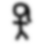
Cet effet rend floue une piste vidéo. Ses paramètres sont :

Si vous désirez éclaircir une prise de vue sombre, ou ajouter de la lumière, cet effet est fait pour vous. N'utilisez pas trop cet effet ou bien vous risquez de dégrader la qualité de votre vidéo. Utilisez-le avec les images-clé afin d'éclaircir une longue prise de vue qui est trop sombre au début mais claire à la fin. Généralement, vous devrez modifier la luminosité et le contraste dans des proportions équivalentes (par exemple, luminosité 28 contraste 26) de manière à ce que vos couleurs d'origine demeurent intactes.

L'effet de brûlage vidéo fait "brûler" votre vidéo lorsqu'il y a de petits éléments lumineux et colorés dans la vidéo, sur les bords d'un T-shirt par exemple. Ce peut être un très bon élément dans une vidéo musicale ou juste un bon moyen de libérer votre imagination.

Cet effet efface tous les pixels qui correspondent à une certaine couleur. Ils sont remplacés par du noir s'il n'y a pas de canal alpha et par de la transparence s'il y a un canal alpha. Le choix du modèle colorimétrique est important pour en déterminer le comportement.
La clé chromatique utilise soit la luminosité soit la teinte pour définir ce qui sera effacé. Utiliser la valeur permet de n'utiliser que la valeur pour déterminer la transparence. Choisissez la couleur centrale à effacer en utilisant le bouton Couleur. Vous pouvez aussi sélectionner directement une couleur dans l'image depuis la fenêtre de composition à l'aide de la Pipette à couleurs et en cliquant le bouton Utiliser la pipette à couleur. Ceci permet d'utiliser la couleur actuelle de la pipelle à couleurs comme couleur à utiliser pour la clé chromatique.
Soyez conscient que la sortie de la clé chromatique est ensuite réinjectée dans le compositeur, si vous choisissez donc de nouveau une couleur depuis le compositeur, la sortie de l'effet clé chromatique sera utilisée. L'effet clé chromatique doit être désactivée lorsque vous choisissez une couleur à l'aide de la pipette.
Si la luminosité ou la teinte se trouvent à l'intérieur d'un certain seuil, elle est effacée. L'augmentation du seuil détermine la plage de couleurs à effacer. Ce n'est cependant pas pas un simple commutateur marche/arrêt. Lorsque la couleur s'approche de la limite du seuil, elle est graduellement effacée si la pente est forte et rapidement effacée si la pente est faible. La pente définie ici est le nombre de valeurs supplémentaires, de part et d'autre du seuil, nécessaires pour passer de l'opacité à la transparence.
Normalement le seuil est très faible lorsqu'on utilise une pente élevée. Ces deux paramètres tendent à être mutuellement exclusifs parce que la pente remplit le seuil supplémentaire.
La pente permet d'adoucir les bords de la clé chromatique mais cela ne fonctionne pas très bien sur des sources compressées. Une technique courante pour adoucir ces bords est d'utiliser une pente maximale et d'enchaîner sous la clé chromatique, un effet de flou afin de ne rendre flou que le canal alpha.

FIXME

La balance des couleurs est l'effet adéquat à utiliser conjointement à Luminosité/contraste et Teinte/Saturation, afin de compenser les erreurs possibles lors du tournage (faible éclairement, etc.). Il ne peut cependant pas faire tout ça sans dégrader la qualité de la vidéo. C'est exactement comme l'effet de "balance des blancs" dans un programme de retouche d'images, tel que GIMP. Avec cet effet, vous pouvez modifier les couleurs qui seront envoyées vers une sortie CMJ (Cyan, Magenta, Jaune) ou RVB (Rouge, Vert, Bleu).

Cet effet abandonne les images d'une piste qui sont les plus semblables de manière à diminuer la fréquence des images. C'est habituellement appliqué à un DVD pour convertir la vidéo de 29,97 i/s à la fréquence d'un film de 23,97 i/s mais cet effet de décimation peut prendre n'importe quelle fréquence en entrée et la convertir pour obtenir une fréquence de sortie plus faible.
La fréquence de sortie de l'effet de décimation est la fréquence du projet. La fréquence d'entrée est définie par l'interface utilisateur de configuration de l'effet. Pour effectuer la conversion d'une vidéo progressive de 29,97 i/s en une fréquence de film de 23,97 i/s film, appliquer l'effet de décimation à la piste, définissez la fréquence d'entrée de l'effet à 29,97 et la fréquence du projet à 23,97.
Soyez attentif au fait que chaque effet empilé avant l'effet de décimation effectuera le traitement de la vidéo à la fréquence d'entrée et que chaque effet se trouvant après l'effet de décimation effectuera le traitement de la vidéo à la fréquence du projet. Les effets qui demandent beaucoup de ressources de calcul devraient se trouver en-dessous de l'effet de décimation.

L'effet de désentrelacement a évolué au cours des années vers le désentrelacement et bien plus encore. En fait, deux des méthodes de désentrelacement, le Télécinéma inverse et Images vers Champs, sont des effets différents. L'effet de désentrelacement met à disposition plusieurs variantes de réplication des lignes pour éliminer l'artefact en peigne de la vidéo entrelacée. Il dispose aussi d'outils de permutation des lignes pour corriger de la vidéo qui aurait été capturée de manière incorrecte ou pour remettre dans le bon ordre l'affichage des champs d'un effet inversé.
FIXME

FIXME
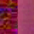
FIXME

La clé de différence crée de la transparence dans les zones qui sont similaires entre deux images. L'effet de clé de différence doit être appliqué à deux pistes. Une piste comporte l'action qui se déroule devant un fond uniforme et l'autre piste comporte un fond sans premier plan. Appliquez l'effet de clé de différence à la piste qui comporte l'action et appliquez-en une copie partagée à la piste comportant le fond. La piste avec le fond doit être rendue muette et se trouver sous la piste avec l'action. Le modèle colorimétrique doit avoir un canal alpha.
Les pixels qui sont différents sur la piste comportant l'arrière-plan et la piste comportant l'action seront considérés comme étant opaques. Les pixels qui sont similaires sont considérés comme étant transparents. Une modification du seuil dans la fenêtre de clé de différence permettra de rendre transparent davantage de pixels alors qu'ils ne sont pas de la même couleur. Modifiez la pente pour modifier la vitesse avec laquelle la transparence diminue lorsque les pixels deviennent plus transparents.
La pente telle que définie ici est le nombre de valeurs supplémentaires, de part et d'autre du seuil, nécessaires pour aller d'opaque vers transparent. Une pente élevée est plus utile avec un seuil faible parce que la pente remplit le seuil supplémentaire.
L'utilisation de la valeur permet d'effectuer une comparaison sur l'intensité des pixels et non la couleur.
L'application de flou à la piste du dessus, en ne rendant flou que le canal alpha, peut permettre d'adoucir les limites de la transparence.
Note : actuellement cet effet provoque des plantages lorsqu'il est utilisé dans les modes YUV.

Un autre effet de Kentaro (effectTV).

Le sous-échantillonnage est le processus qui réduit la taille d'une image en supprimant des données par une réduction de l'échantillonnage.
Les paramètres de cet effet sont :
Horizontal
Décalage horizontal
Vertical
Décalage vertical
Canaux

Cet effet lit les images à deux fois la fréquence des images du projet, combinant 2 images en entrée en une seule image interlacée. Les effets qui précèdent champs vers images traitent les images à deux fois la fréquence des images du projet. Chaque image en entrée est appelée un champ.
Champs vers images a besoin de connaître à quelles lignes correspond quel champ dans l'image en sortie. La manière la plus simple est d'essayer les deux options qui se trouvent dans la fenêtre. Si les champs en entrée proviennent d'un traitement de duplication des lignes comme avec images vers champs, le mauvais choix pour le paramètre donnera une image floue en sortie. Si les champs en entrée proviennent d'une conversion entre normes telle que 1080 vers 540, une mauvaise valeur de paramètre ne fera pas de différence.
Le debobber qui convertit un format 720x480 entrelacé en 1920x1080 entrelacé ou en 1280x720 progressif semble dégrader la résolution verticale au point qu'elle ne puisse pas être récupérée.

Cet effet permet de retourner une piste vidéo (ou une portion de piste vidéo) de la gauche sur la droite, du haut sur le bas ou du bas vers le haut.
La fenêtre de dialogue est simple, puisque seuls les paramètres horizontal et vertical sont nécessaires.

FIXME

Dans sa forme la plus simple, mettez en surbrillance une région de la piste à figer, déposez l'effet figer l'image sur la région en surbrillance, et la première image de la région affectée sera jouée pendant toute la durée de la région.
Figer l'image possède une option Activé qui peut être associée à une image-clé. Les régions où un effet figer l'image est activé répéteront la première image située après la dernière image-clé. Ceci permet des possibilités uniques.

Les images brutes (format RAW) des appareils numériques enregistrent les images avec une échelle logarithmique. Les noirs de ces images se trouvent proches de 0 et les blancs sont supposés à l'infini. Les cartes graphiques et la plupart des codecs vidéo enregistrent les couleurs selon une échelle linéaire mais Cinelerra conserve aux images brutes leur échelle logarithmique d'origine lorsqu'il en effectue le rendu. Ceci est nécessaire car l'analyseur d'images brutes ne peut pas toujours décoder la valeur correcte du gamma des images. Il effectue aussi son traitement sous 16 bits, ce qui fait perdre beaucoup d'informations.
L'effet gamma convertit les couleurs logarithmique en couleurs linéaires à l'aide d'une valeur de gamma et d'une valeur maximum. La valeur de gamma détermine la raideur de la courbe de sortie, et la valeur maximale est l'endroit où la valeur 1.0 en sortie correspond au maximum de luminosité en entrée.
L'effet gamma possède deux autres paramètres qui permettent de simplifier la correction de gamma. L'option Automatique détermine la valeur max à partir de l'histogramme de l'image. Utilisez-la lorsque vous effectuez la prévisualisation d'une longue liste d'images puisqu'elle change pour chaque image.
L'option Utiliser la pipette à couleurs utilise la valeur qui se trouve actuellement dans la pipette à couleurs pour définir la valeur max. Notez que chaque fois que vous prenez une couleur dans la fenêtre de composition, vous devrez cliquer Utiliser la pipette à couleurs afin d'utiliser la nouvelle valeur.
FIXME
Il permet d'afficher le nombre d'occurrences de chaque couleur sur un graphique d'histogramme.
Le calcul est toujours effectué en RVB virgule flottante indépendamment de l'espace colorimétrique du projet. L'histogramme comporte deux jeux de paramètres de transfert : le transfert en entrée et le transfert en sortie.
4 histogrammes sont possibles dans le visualisateur d'histogramme. Les histogrammes rouge, vert et bleu affichent les histogrammes en entrée pour les canaux rouge, vert et bleu en les multipliant par une fonction de transfert d'entrée afin d'obtenir les sorties rouge, verte et bleue. Les valeurs bleue, verte et rouge mises à l'échelle sont convertie en une valeur qui est affichée sur l'histogramme des valeurs. L'histogramme des valeurs est alors modifié en fonction des paramètres du rouge, du vert et du bleu. Les transferts de valeurs sont appliqués uniformément à R, V et B après que les transferts de couleurs aient été appliqués.
Sélectionnez quel transfert afficher en sélectionnant l'un des canaux en haut de l'histogramme.
Le transfert d'entrée est défini par un graphique superposé à l'histogramme. L'axe horizontale correspond à toutes les valeurs possible de la couleur d'entrée. L'axe vertical correspond aux couleurs de sorties de chaque couleur d'entrée. La vidéo qui entre dans l'histogramme est d'abord affichée sur l'histogramme, et ensuite elle est transformée de manière à ce que les valeurs des couleurs de sortie soient égales aux valeurs de sortie correspondant à chaque valeur sur le graphique d'entrée.
Le graphique d'entrée est édité en ajoutant et en supprimant un nombre quelconque de points. Cliquez et glissez n'importe où dans le graphique pour créer un point et le déplacer. Cliquez sur un point existant pour le rendre actif et le déplacer. Le point actif est toujours marqué par son remplissage. Les couleurs d'entrée et de sortie du point actif sont indiquées dans des boîtes de texte en haut de la fenêtre. Les couleurs d'entrée et de sortie du point peuvent être modifiées à l'aide de ces boîtes de texte.
Les points peuvent être supprimés en sélectionnant d'abord un point et en le glissant de l'autre côté d'un point adjacent. Ils peuvent aussi être supprimés en les sélectionnant et en pressant Suppr.
Après le transfert d'entrée, l'image est traitée par le transfert de sortie. Le transfert de sortie est simplement un minimum et un maximum pour mettre à l'échelle correspondante les couleurs d'entrée. Les valeurs d'entrée de 0% sont remontées à la valeur du minimum en sortie.
Les valeurs en entrée en-dessous de 0 sont toujours alignées à 0 et les valeurs au-dessus de 100% sont toujours alignées à 100%. Cliquez et glissez les triangles des dégradés de sortie afin de les modifier. Les boîtes de texte permettent aussi d'entrer directement des valeurs.
Cochez la case Automatique afin que l'histogramme calcule un transfert
automatique pour le rouge, le vert et le bleu mais pas la valeur. Il fait une
mise à l'échelle pour que les 99% de pixels du milieu occupent 100% de la
largeur de l'histogramme. Le nombre de pixels autorisés à passer au travers de
l'effet filtre est défini par la boîte de texte Seuil. Un seuil de 0.99
redimensionne l'entrée de manière à ce que 99% des pixels passent au travers.
Des seuils plus faibles permettent à moins de pixels de passer au travers et
rendent la sortie plus contrastée. Le transfert automatique d'entrée est
calculé pour les canaux R, V et B mais pas pour la valeur.
Afficher l'histogramme
Diviser la sortie

De Kentarou effectTV

Avec cet effet, vous pouvez modifier la teinte, la saturation et la valeur. Les paramètres sont modifiés en utilisant 3 simples curseurs.

FIXME

L'effet d'interpolation des pixels essaie de créer l'illusion d'une fréquence d'images plus élevée depuis un métrage ayant une fréquence d'images très faible, en effectuant la moyenne au cours du temps. Pour chaque image de sortie, il effectue la moyenne entre deux images en entrée. Les images en entrée sont prises à des instants différents ce qui provoque un fondu pour chacune des images de sortie se trouvant entre deux images en entrée. Il y a deux manières d'indiquer les images en entrée. Vous pouvez indiquer une fréquence d'images d'entrée qui soit plus faible que celle du projet. Ceci permet de prendre les images en entrée à des intervalles réguliers. Vous pouvez indiquer une fréquence d'images en entrée qui soit inférieure à la fréquence des images du projet. Ceci permettra de prendre les images en entrée à intervalle régulier.
Vous pouvez aussi indiquer des emplacements d'images-clés comme positions des images d'entrée. Dans ce mode, la fréquence des images en sortie est utilisée comme fréquence d'entrée et vous n'avez qu'à créer des images-clés aux emplacements où vous désirez indiquer une image d'entrée.

C'est l'outil de désentrelacement le plus efficace lorsque le métrage est un
transfert vidéo de film. Dans ce cas, le film a été converti de 24 im/s vers
60 trames/s (pour la norme NTSC, en PAL, il s'agit de 50 trames/s). Ensuite
les 60 trames/s (respectivement 50) sont rééchantillonnées vers 30 im/s
(respectivement 25) en extrayant les lignes paires et impaires, et en
entrelaçant les lignes. L'effet IVTC (Téléciméma inverse) est d'abord un moyen
de convertir de la vidéo entrelacée en vidéo progressive. Il défait trois
motifs d'entrelacement.
A AB BC CD D
AB CD CD DE EF
Automatique
Les deux premières options sont des motifs fixes et sont affectées par les paramètres de décalage de motif et de champs impairs d'abord. Cette dernière option crée plusieurs combinaisons de lignes pour chaque trame et prend la combinaison la plus progressive. C'est un algorithme de force brute.
Cette technique ne repose pas sur un motif comme pour les autres techniques et elle est moins destructive mais le déroulement du temps peut être un peu saccadé en raison de l'absence de réduction de la fréquence des images. Pour lisser le déroulement dans le temps, il faut faire suivre l'effet de télécinéma inverse d'un effet de décimation.

Appelé aussi vidéo inverse, c'est une méthode pour inverser les couleurs d'une piste vidéo.
Les quatre paramètres sont les canaux (Rouge, Bleu, Vert, Alpha)

Le flou possède trois styles : Linéaire, Radial et Zoom
Les paramètres sont :

Cet effet lit directement la vidéo depuis la carte d'acquisition. Il remplace toute la vidéo de la piste, et est donc normalement appliqué sur une piste vierge. La configuration de la carte d'acquisition est prise depuis les préférences de l'acquisition. Allez à Configuration->Préférences->Acquisition pour configurer votre carte d'acquisition.
Allez à la section Entrée vidéo où l'on trouve le Pilote d'enregistrement. Il doit être défini soit à Video4Linux2, soit à IEC 61883. Les autres pilotes vidéo n'ont pas été testés avec la vidéo en direct et ne fonctionneront probablement pas.
Pour la vidéo en direct, le Format de fichier et la Vidéo doivent avoir
des valeurs que la timeline peut utiliser. Le format de fichier doit être
Quicktime pour Linux et l'enregistrement vidéo doit être activé pour ce
format. Cliquez sur la clé afin de
déterminer la compression vidéo.
La compression vidéo dépend du pilote d'enregistrement. Pour le pilote d'enregistrement Video4Linux2, La compression doit être JPEG animé A. Pour le pilote IEC 61883, la compression doit être DV. Le pilote va générer une sortie dans un modèle colorimétrique que la timeline peut utiliser.
Certaines cartes autorisent le paramétrage de la couleur et des canaux. La vidéo en direct prend les paramètres de couleur depuis les valeurs définies dans la fenêtre Entrée vidéo. Allez à Fichier->Acquisition afin d'afficher l'interface d'enregistrement et la fenêtre d'Entrée vidéo. Les valeurs définies dans la fenêtre Entrée vidéo sont utilisées par Vidéo en direct. Tous les canaux que gère la carte d'acquisition doivent être configurés dans l'interface Entrée vidéo car ces mêmes canaux sont utilisés par l'effet Vidéo en direct.
Lorsque l'acquisition vidéo est configurée, mettez en surbrillance une région de la piste vidéo ou définissez les points d'entrée et de sortie. Déposez-y alors l'effet de vidéo en direct. Déposez les autres effets après l'effet vidéo en direct de façon à ce que ce dernier soit traité en temps réel. Afin d'obtenir les meilleurs résultats, vous devriez utiliser OpenGL et une carte vidéo qui permet la gestion du langage d'ombrage GL. Allez à Configuration->Préférences->Lecture->Sortie vidéo pour activer le pilote OpenGL.
Un seul effet Vidéo en direct peut exister à un moment donné sur la timeline. Il ne peut pas être partagé avec plus d'une piste.

Des sections de vidéo peuvent être bouclées en y déposant l'effet de boucle Au contraire de l'option Configuration->Jouer en boucle, l'effet de boucle peut être rendu alors que l'option Configuration->Jouer en boucle ne le peut pas. L'effet de boucle est pratique pour de courtes régions.
L'effet de boucle comporte une option : le nombre d'images ou d'échantillons à reboucler. Ceci permet d'indiquer la durée de la région à boucler en partant soit du début de l'effet, soit de la dernière image-clé. La région est répliquée pour la durée complète de l'effet.
Chaque fois qu'une image-clé est placée dans un effet de boucle, l'image-clé devient le début de la région à boucler. Placer plusieurs images-clés successivement provoque le rebouclage de plusieurs régions. Placer une seule image-clé fait reboucler la région située après l'image-clé pour la durée de l'effet, indépendamment de l'emplacement de l'image-clé. La fin de l'effet peut être rebouclée depuis le début en plaçant une image-clé près de la fin.

Le suivi de mouvement est presque une application à lui tout seul. Le suivi de mouvement permet de suivre deux types de mouvements : la translation et la rotation. Ils peuvent être suivis tous deux simultanément ou bien uniquement l'un d'entre-eux. Il peut faire du suivi par 1/4 de pixel ou par pixel. Il peut stabiliser le mouvement ou faire qu'une piste suive le mouvement d'une autre.
Bien que le suivi de mouvement soit appliqué comme un effet en temps réel, il doit habituellement être rendu pour se rendre compte des résultats. Cet effet prend beaucoup de temps pour détecter précisément le mouvement.
Le moteur de suivi de mouvement fonctionne en utilisant une région de l'image comme région à suivre. Il compare cette région entre deux images pour en calculer le déplacement. Cette région peut être définie n'importe où sur l'écran. Une fois que le mouvement entre deux images a été calculé, un certain nombre de choses peut être effectuées avec ce vecteur de mouvement. Il peut être mis à l'échelle en utilisant une valeur définie par l'utilisateur et tronqué à une valeur maximale. Il peut être ignoré ou accumulé avec tous les vecteurs de mouvement qui le précèdent jusqu'à la position actuelle.
Pour gagner du temps, le résultat du suivi de mouvement peut être enregistré pour être réutilisé plus tard, rappelé d'un précédent calcul ou bien détruit.
Le moteur de suivi de mouvement possède la notion de deux pistes, le niveau maître et la piste de destination. Le niveau maître est l'endroit où se fait la comparaison entre deux images. La piste de destination est l'endroit où le mouvement est appliqué soit pour suivre, soit pour compenser les mouvements du niveau maître.
La complexité du suivi de mouvements est suffisante pour faire vivre des sociétés entières et pour y construire sa carrière. Le suivi de mouvement de Cinelerra n'est pas aussi sophistiqué que certains logiciels de suivi de mouvement de renommée mondiale, mais il est suffisant pour améliorer certaines prises de vue au caméscope.
Voici une brève description des paramètre du suivi de mouvement :
Comme c'est un effet très long à calculer, il y a une méthode pour appliquer le suivi de mouvement de façon à en obtenir le maximum. Désactivez tout d'abord la lecture pour la piste sur laquelle vous voulez utiliser le suivi de mouvement. Déposez ensuite l'effet sur une région de la vidéo où se trouve un certain mouvement à suivre. Replacez ensuite le point d'insertion au début de cette région. Configurez Action->Ne rien faire. Configurez Calcul->Ne pas calculer. Activez Dessiner les vecteurs. Activez ensuite la lecture de la piste pour voir les zones de suivi de mouvement.
Activez le type de vecteur de mouvement que vous désirez suivre, soit le mouvement de translation, soit le mouvement de rotation. En visionnant la fenêtre de composition et en ajustant les paramètres x, y du bloc, centrez le bloc sur la partie de l'image que vous désirez suivre. Ensuite, configurez le rayon de recherche, la taille du bloc et les coordonnées du bloc pour la translation et la rotation.
Une fois tout ceci configuré, configurez le calcul à Enregistrer les coordonnées et faites des passes de tests sur la séquence pour voir si le suivi de mouvement fonctionne et pour enregistrer les vecteurs de mouvement. Une fois ceci effectué, désactivez la lecture de la piste, désactivez Dessiner les vecteurs, configurez l'action désirée concernant le mouvement sur la piste de destination et changez le calcul en Charger les coordonnées. Enfin, activez la lecture de la piste.
Lorsque vous utilisez une seule image pour calculer le mouvement d'une séquence, l'image de départ devrait être une image unique présentant le moins de mouvement qu'une quelconque des autres images. C'est rarement le cas de l'image 0. Habituellement, il faut prendre une image vers le milieu de la séquence. De cette manière le rayon de recherche n'a besoin que de couvrir la moitié de l'ensemble du mouvement de la séquence.
Si le suivi de mouvement est utilisé avec une grappe de calcul, Enregistrer les coordonnées et Image précédente ne fonctionnera pas. Les résultats de l'opération d'enregistrement des coordonnées sont enregistrés sur les disques des noeuds de rendu, et non pas sur le noeud principal. Les opérations de rendu ultérieures effectuées sur ces noeuds traiteront des images différentes et liront les mauvaises coordonnées depuis le système de fichiers du noeud. Le fait que les noeuds de rendu ne visualisent qu'une portion de la timeline empêche aussi l'image précédente de fonctionner car elle dépend du calcul d'un vecteur de mouvement absolu ayant l'image 0 comme point de départ.
La méthode ci-dessus décrit le processus de suivi de mouvement en deux passes. Une passe est utilisée pour calculer les vecteurs de mouvement. Une seconde passe est utilisée pour appliquer les vecteurs de mouvement à la vidéo. C'est plus rapide qu'une unique passe car les erreurs de calculs des vecteurs de mouvement peuvent être rapidement découvertes.
Ceci permet aussi au suivi de mouvement d'utiliser un modèle colorimétrique moins exigeant comme RVB888 dans la phase d'examen, et un modèle colorimétrique plus exigeant comme RVB flottant dans la phase d'action. La phase d'examen prend beaucoup plus de temps que la phase d'action.
Cette méthode a le désavantage de ne pas être pratique pour de très longues séquences, où il est acceptable d'avoir un certain niveau d'erreur, et que la qualité de l'image est faible au départ comme c'est le cas pour la stabilisation d'images issues d'un caméscope.
La méthode la plus lente est de calculer les vecteurs de mouvement et de les appliquer simultanément. Cette méthode peut utiliser une piste comme piste de calcul des vecteurs de mouvement et une autre piste comme piste de destination pour les actions des vecteurs de mouvement. C'est utile pour de longues séquences ou il est acceptable d'avoir un certain niveau d'erreur.
Pour les vidéos très bruités ou entrelacés, l'application d'un effet de flou avant le suivi de mouvement peut en améliorer la précision. Vous pouvez soit enregistrer les vecteurs de mouvement dans une passe de suivi et désactiver le flou dans la passe d'action, soit n'appliquer le flou qu'au calque maître.
Un histogramme est presque toujours appliqué avant le suivi de mouvement pour atténuer le bruit généré par les pixels les plus sombres. Vous pouvez soit enregistrer les vecteurs de mouvement dans une passe de suivi et désactiver histogramme pour la passe d'action, soit n'appliquer l'histogramme qu'au calque maître.
Ajouter d'abord un effet de suivi de mouvement à la piste. Glissez-le depuis la fenêtre des ressources et déposez-le directement sur la vidéo dans la fenêtre principale de Cinelerra. Vous devriez voir quelque chose de semblable à ceci :

Faites ensuite un clic droit sur le marqueur de l'effet de suivi de mouvement sur la timeline et sélectionnez Afficher les options afin d'afficher le dialogue du suivi de mouvement :

Commencez par regarder dans votre compositeur. Vous verrez quelques nouvelles boîtes dessinée par dessus la vidéo. Elles sont importantes pour contrôler le suivi de mouvement. Voici un bref aperçu de ce que l'on peut voir lors du fonctionnement :

L'image çi-dessus montre le suivi de mouvement ayant perdu l'objet suivi car la
fenêtre de recherche est trop petite. Nous reviendrons sur cet aspect plus
tard, mais rapidement :
Déplacez-vous au début de votre clip vidéo
Assurez-vous que le dialogue du suivi de mouvement est ouvert
Regardez dans le compositeur
Commencez à ajuster ces quatre boutons :

Cochez le suivi en translation
Décochez le suivi de rotation
Commencez avec le deuxième bouton - Taille de bloc pour la translation - et tournez-le pour avoir une idée de ce qui change. Remarquez que les deux boîtes sont redimensionnées. Regardez ce qui se trouve à l'intérieur de la petite boîte (l'objet que vous désirez suivre). Ne vous inquiétez pas si elle ne recouvre pas encore l'objet.
Passez aux boutons trois et quatre : X et Y du bloc. Utilisez-les pour placer le désignateur de la cible sur la cible elle-même.
Enfin, utilisez le bouton du haut : Rayon de recherche en translation. Agrandissez ce rayon de manière à ce qu'il recouvre la plage entière de déplacement que vous attendez de la cible. Si vous regardez de nouveau la première vue de l'action, le rayon de recherche était trop faible et la cible s'est déplacée en dehors de la plage. Vous pouvez le tester en effectuant une lecture de la timeline et en regardant les résultats (en temps réel si votre machine est assez rapide) ou en effectuant le rendu et en visionnant votre poignée stabilisée sur la sortie.
Faites le nécessaire pour que la première image de la vidéo ressemble à ceci :

Cette image montre beaucoup de détails. Remarquez que le petit cadre est centré sur la poignée et dimensionné de manière à juste l'inclure. Ces paramètres sont contrôlés par les boutons deux à quatre. Enfin, le cadre extérieur doit être plus grand que les mouvement en avant et arrière de la poignée sur la durée complète du clip vidéo.
Enfin, voici les autres paramètres nécessaires pour voir l'effet :

Dans cette section, nous expliquerons comment stabiliser une vidéo. On peut avoir ce besoin lorsque la vidéo est prise depuis un véhicule par exemple.
Sélectionnez d'abord sur la timeline la partie de la vidéo que vous désirez stabiliser en utilisant les points d'entrée et de sortie. Appliquez ensuite l'effet de stabilisation de mouvement sur cette partie de la vidéo.
Sélectionnez l'option image précédente du même bloc. Cette option est recommandée pour stabiliser un vidéo tremblotante issue d'un caméscope. Son but n'est pas de "suivre" un objet. Le bloc reste exactement à la même place durant toute la durée de l'effet.
Agrandissez le bloc et sélectionnez à peu près la moitié des dimensions de la vidéo. Sélectionnez l'option Stabiliser les sous-pixels : elle donnera une stabilisation plus précise. Réduisez la valeur du décalage absolu maximum pour limiter l'amplitude de la stabilisation. Vous préférerez probablement avoir une stabilisation imparfaite à certains moments de la vidéo plutôt que d'avoir de grandes bordures noires sur les côtés de l'image lors des secousses importantes. Configurez le Nombre de pas de recherche en translation à 128. Augmenter cette valeur ne donnera pas un meilleur résultat, mais augmentera de manière considérable le temps de rendu. Assurez-vous que l'option Dessiner les vecteurs est sélectionnée, et effectuez le rendu de la partie de la vidéo où l'effet de suivi de mouvement a été appliqué.
Si le résultat est bon, désactivez l'option Dessiner les vecteurs. Les blocs et les vecteurs ne seront plus affichés sur la vidéo. Effectuez alors le rendu de la vidéo vers un fichier `.dv', et importez-le dans votre projet.
Vous remarquerez que la vidéo est stabilisée mais qu'il y a des bordures noires qui apparaissent sur les côtés des images. Afin de supprimer ces bordures noires, vous devrez effectuer un zoom et définir des images-clés de projecteur pour déplacer celui-çi sur l'image. Plus votre vidéo est sautillante, plus vous devrez zoomer pour supprimer les bordures noires. C'est pourquoi le résultat est meilleur avec une vidéo HDV qu'avec une vidéo DV.

FIXME

Cet effet donne à vos pistes vidéos un aspect de peinture à l'huile. Il est contrôlé par le curseur de rayon. Les couleurs peuvent être choisies en option.
FIXME

L'effet de perspective vous permet de modifier la perspective d'un objet, il est parfait pour donner un effet de distance aux objets.

L'effet polaire courbe et enroule votre vidéo de manière étrange. Mathématiquement, il convertit votre vidéo de coordonnées polaires en coordonnées rectangulaires ou inversement.
FIXME


Il crée un flou en tourbillon qui simule une caméra faisant des tourbillons. Vous pouvez modifier l'emplacement, le type et la qualité du flou.

ReframeRT modifie le nombre d'images dans une séquence vidéo directement depuis
la timeline. Il fonctionne selon deux modes qui peuvent être activés depuis
l'interface graphique à l'aide de deux cases à cocher.
Le mode Etirer multiplie le numéro de l'image en cours sur sa sortie par un facteur d'échelle pour obtenir le numéro d'image à lire sur son entrée. Si la sortie actuelle est l'image n° 55 et que le facteur d'échelle est de 2, l'image n° 110 est lue depuis l'entrée. Le mode Etirer a pour effet de modifier la durée de la sortie vidéo par l'inverse du facteur d'échelle. Si le facteur d'échelle est plus grand que 1, la sortie se terminera avant la fin de la séquence qui se trouve sur la timeline. S'il est inférieur à 1, la sorti se terminera après la fin de la séquence sur la timeline. L'effet ReframeRT doit être allongé jusqu'à la durée nécessaire pour obtenir le facteur d'échelle. On modifie la durée de l'effet en cliquant sur l'endroit où se termine l'effet et en le glissant.
Bien que que l'effet d'étirement modifie le numéro de l'image lue sur son entrée, il ne modifie pas la fréquence des images en entrée. Les effets qui se trouvent avant ReframeRT ont la même fréquence d'images que ReframeRT.
L'effet ReframeRT en mode Etirer peut être utilisé afin de créer un effet d'accéléré. Sélectionnez le mode Etirer et entrez une valeur supérieure à 1 afin d'obtenir une lecture en accéléré
Pour un effet de ralenti, utilisez un effet ReframeRT en mode Etirer avec une valeur inférieure à 1. Example : vous avez un clip que vous désirez passer en ralenti. Le clip débute à 33.792 secondes et se termine à 39.765. Le clip dure 5.973 secondes. Vous désirez le reproduire à 4/10ème de sa vitesse normale. Vous divisez la durée du clip par la vitesse de lecture (5.973/.4) pour obtenir une durée finale de clip de 14.9325 secondes. Vous créez un point d'entrée au début de votre clip : 33.792 secondes. Vous placez un point de sortie 14.9325 secondes plus tard, à 48.7245 secondes (33.792 + 14.9325). Attachez un effet ReframeRT, configurez-le à .4 en mode Etirer. Modifiez le point de sortie à 48.7245 en point d'entrée. Vous débuterez votre clip suivant après l'effet de ralenti au point de sortie de 48.7245.
Vous pouvez aussi modifier la fréquence des images du clip en faisant un clic droit dans le visualisateur de média et en allant dans Info. Si vous ne cliquez pas le menu, vous pouvez aussi entrer au clavier la fréquence des images désirée. Cinelerra prendra les bonnes images depuis la fréquence des images du projet, en faisant en même temps une modification de la vitesse de lecture.
Le mode Sous-échantillonner ne modifie pas la durée de la séquence de sortie. Il multiplie la fréquence des images de la sortie par un facteur d'échelle de façon à obtenir une fréquence d'image à lire en entrée. Ceci a pour effet de répliquer les images en entrée de façon à ce qu'elles ne changent qu'à la fréquence d'images après mise à l'échelle lorsqu'elles sont envoyées vers la sortie. Cela ne modifie pas la durée de la séquence de sortie. Si le facteur d'échelle est de 0,5 et que la fréquence des images en sortie est de 30 i/s, seules 15 images seront affichées chaque seconde et les données d'entrée seront lues à 15 i/s. Sous-échantillonner n'est utile que pour les facteurs d'échelle inférieurs à 1, d'où le terme "sous-échantillonner".
Le mode Sous-échantillonner modifie la fréquence des images de l'entrée ainsi que le numéro de l'image à lire, la fréquence des images des effets qui se trouvent avant ReframeRT sera donc la fréquence d'images multipliée par le facteur d'échelle. Si le facteur d'échelle est 2 et que la fréquence des images en sortie est de 30, la fréquence des images en entrée sera de 60 et le numéro de l'image en entrée sera doublé. Ceci n'a normalement pas de conséquence mais certains effets d'entrée peuvent se comporter différemment à des fréquences d'images élevées.

Le média peut être inversé sur la timeline en temps réel. Il ne faut pas le confondre avec la lecture arrière des commandes de transport. L'effet de vidéo en arrière inverse la région couverte par l'effet indépendemment du sens de lecture.
La région à inverser est d'abord déterminée par la partie de la piste sur laquelle l'effet a été placé, et ensuite par l'emplacement des images-clés dans l'effet. L'effet inversé possède une option Activé qui vous permet de définir des images-clés. Ceci permet de nombreuses possibilités.
Chaque image-clé Activée est traité comme le point de départ d'une nouvelle région inversée et la fin d'une région inversée précédente. Plusieurs images-clés Activées de suite conduiront à des régions inversées indépendemment l'une de l'autre. Une image-clé Activée suivie d'une image-clé désactivée donnera une région inversée suivie d'une région normale.

Le filtre rotation fait pivoter la vidéo par incréments de 90°, inverser et retourner la vidéo.
FIXME

FIXME

Ce greffon est conçu pour lisser les régions fixes d'un clip vidéo. Le lissage est effectué en faisant la moyenne de la composante de couleur pour chacun des pixel sur un certain nombre d'images. La valeur lissée est utilisée si à la fois l'écart-type, et la différence entre la valeur actuelle de la composante et la moyenne de la composante se trouve en-dessous d'un certain seuil.
La moyenne et l'écart-type sont calculés pour chaque composante de la vidéo. La moyenne est calculée sur des composantes dont le type dépend du modèle colorimétrique du projet. La moyenne et l'écart-type des images peuvent être examinés en sélectionnant le bouton radio correspondant dans la fenêtre des options du greffon.
La région pour laquelle la moyenne des images est effectuée est déterminée soit par un décalage fixe, soit par un système de marqueur de redémarrage. Dans un système de marqueur de redémarrage, certaines images-clés sont marquées comme étant le début des sections. Ensuite, pour chaque section, les images qui entourent l'image en cours sont utilisées comme images pour lesquelles la moyenne doit être effectuée à l'exception des zones proches du début et de la fin d'une section, où la moyenne est effectuée en prenant les N images du début ou de la fin respectivement.
Utilisation habituelle :
Si vous avez sélectionné un certain nombre d'images dont vous désirez effectuer la moyenne.

FIXME

FIXME

FIXME

L'effet de seuil converti une image en luminance pure. Les valeurs de luminance en-dessous de la plage du seuil seront converties en noir et les valeurs de luminance dans la plage du seuil seront convertie en blanc. La fenêtre de seuil affiche un histogramme des valeurs de luminance pour l'image en cours. Cliquer et glisser dans l'histogramme crée une plage à convertir en blanc. MAJ-clic étend l'une des limites de cette plage. Les valeurs de la plage de seuil peuvent aussi être indiquées à l'aides des boîtes de texte.
Cet effet est une clé de luminance basique. Une seconde piste au-dessus de la piste avec l'effet de seuil peut être multipliée, ce qui fera que seules seront affichées les parties de la seconde piste qui se trouvent à l'intérieur du seuil.
La moyenne temporelle est un effet qui a de nombreuses applications qui vont au-delà de la création de traînées d'objets en mouvement. Sa principale utilisation est de réduire le bruit des images fixes. Pointez simplement une caméra vidéo en direction d'un sujet fixe pour une durée de 30 images, faites l'acquisition des images, et faites-en la moyenne en utilisant Moyenne temporelle et vous obtiendrez une image de très grande qualité. Dans les modèles colorimétriques en virgule flottante, la moyenne temporelle peut améliorer la plage dynamique des caméra de bas de gamme.
L'effet de moyenne temporelle comporte un tampon d'accumulation et un diviseur. Un certain nombre d'images sont accumulées dans le tampon d'accumulation et divisées par le diviseur afin d'obtenir la moyenne.
Parce que la moyenne temporelle demande une quantité énorme de mémoire, il est préférable de l'appliquer en désactivant d'abord la lecture de la piste, en y déposant l'effet de moyenne temporelle, en le configurant pour le nombre d'images voulu, et en réactivant la lecture de la piste.

C'est un greffon basé sur cet article :
http://www.vision.huji.ac.il/videowarping/HUJI-CSE-LTR-2005-10_etf-tr.pdf

Bien qu'il soit possible d'ajouter du texte aux images en important des images fixes depuis Gimp et en les composant, le titreur vous permet d'ajouter du texte directement depuis Cinelerra.
Le titreur possède des options standard pour police, taille, et style. La meilleure police est une police générique telle qu'Arial dans une grande taille.
Le titreur possède aussi des options que vous ne trouvez qu'avec des images animées. L'opération Justifier justifie le texte par rapport à l'image entière. Une fois justifié, les décalages X et Y sont appliqués. Ceci permet au texte de rester justifié pendant que vous le poussez à l'intérieur des zones sûres.
Le type de mouvement fait défiler le texte dans l'une des quatre directions. Lorsque vous utilisez cette fonction, le texte peut disparaître. Déplacez le point d'insertion le long de la timeline jusqu'à ce que le texte se soit suffisamment déplacé dans l'animation pour réapparaître. Le texte défile pour apparaître ou disparaître.
En activant la boucle, le texte se déroulera complètement et recommencera. Sans la boucle le texte défile jusqu'à disparaître et réapparaît.
La vitesse de l'animation est déterminée par vitesse. Indiquez une vitesse plus importante pour accélérer l'animation.
Ombre portée dessine une copie noire du texte en bas et à droite du texte d'origine. Ceci est utile lorsque le texte est placé sur une vidéo qui change car il permet de conserver la bordure toujours visible.
En plus du défilement, les Fonfu entrant / Fondu sortant sont un second type d'animation. Si la durée de fondu est de 0 secondes, il n'y aura pas de fondu.
Couleur permet de récupérer la couleur avec laquelle tracer le texte. En pratique, la seule couleur utile est habituellement le blanc.
Horodater avec le code temporel remplace le texte par la position en cours sur la timeline en secondes et images.
Le titreur supporte les images-clés. Pour ajouter des sous-titres à votre
film, vous devez utiliser un effet titreur et définir des images-clés. Si vous
activez le mode des images-clés automatiques
 , une nouvelle image-clé est créée chaque
fois que vous éditez le texte. Dans la boîte de saisie du texte, vous verrez
le sous-titre apparaissant sous le point d'insertion.
, une nouvelle image-clé est créée chaque
fois que vous éditez le texte. Dans la boîte de saisie du texte, vous verrez
le sous-titre apparaissant sous le point d'insertion.
Note: Pour ajouter des sous-titres, vous devriez probablement utiliser un éditeur de sous-titres. Voir la section Ajouter des sous-titres, pour plus d'information.
| 13.4.53.1 Ajouter des polices au titreur | Comment ajouter des polices au titreur | |
| 13.4.53.2 La zone sûre du titre | Comment conserver le texte visible sur la sortie |
Le système X Window ne possède pas, à l'origine, de fonction de rendu des police adapté à la vidéo. Il est restreint en matière de profondeur de bits. Il ne permet pas de savoir simplement quelles sont les polices qui fonctionnent avec le système de rendu et avec la profondeur de bits désirée. La manière la plus simple que nous avons trouvé pour gérer les polices dans le titreur est d'avoir un répertoire pour celles-ci : `/usr/lib/cinelerra/fonts'.
Le titreur gère principalement les police true type TTF. Il permet aussi
d'utiliser d'autres types mais les polices TTF sont plus fiables. Pour ajouter
des polices true type, copiez les fichier`.TTF' dans le répertoire
`/usr/lib/cinelerra/fonts'. Depuis ce répertoire, lancez la commande
ttmkfdir && mv fonts.scale fonts.dir et redémarrez Cinelerra. Les
nouvelles polices devraient être disponibles. La syntaxe de ttmkfdir est
souvent modifiée, cette technique peut donc ne pas fonctionner.
Si la vidéo est affichée sur un téléviseur grand public, les bords extérieurs
seront coupés d'environ 5% de chaque côté. De plus, le texte ondule s'il se
trouve trop près des bords. Assurez-vous, lorsque vous ajoutez des titres, que
l'outil zone sûre du titre est actif
dans le compositeur. Le texte ne doit jamais sortir du rectangle
intérieur.
FIXME

Cet effet défocalise la vidéo. Ses paramètres sont :
| 13.4.56.1 Le visualisateur de forme d'onde | ||
| 13.4.56.2 Le vectorscope |
Le vidéoscope est un outil qui représente de manière numérique les niveaux de lumière et de couleur sur un écran calibré. Il est utile parce que l'oeil humain n'est pas adapté à associer précisément des niveaux de luminosité ou des couleurs entre eux, mais plutôt à détecter les différences entre la lumière et la couleur.
Le vidéoscope peut être utilisé en conjonction avec d'autres greffons de Cinelerra, tels que YUV, Teinte, Luminosité, Histogramme afin de corriger de manière précise le contraste, la luminosité, la conformité (rendre homogènes différentes prises de vue vidéo en des conditions d'éclairement variables), ou dans des buts cimématiques.
Quelques réflexions ont été menées pour savoir s'il fallait un vidéoscope pour l'enregistrement. Malheureusement, ceci demanderait beaucoup d'adaptations du vidéoscope pour chaque pilote vidéo.
Le vidéoscope comporte deux affichages : le scope de forme d'onde et le vectorscope
L'écran est gradué verticalement du bas vers le haut. Le bas, ou 0%, est le noir maximum, et le haut ou 100% est le blanc maximum. La source vidéo est divisée en colonnes verticales de pixels, ensuite chaque pixel de la colonne est mesuré et placé sur la verticale correspondante du visualisateur de forme d'onde en fonction de sa valeur d'intensité lumineuse.
Un pixel en bas de l'affichage indique du noir complet, un pixel en haut (100%) de l'affichage est du blanc pur.
L'image affiche un ensemble de lignes en escalier sur l'affichage, en indiquant les niveaux de luminance correspondants de la mire de barres correspondante. Plusieurs niveaux sur la même colonne sont représentés par plusieurs lignes sur le visualisateur.
Le visualisateur de forme d'onde aide à corriger les niveaux de luminosité de l'image pour la plage de contraste ou pour homogénéiser les niveaux de luminosité de différentes scènes prises sous des éclairages différents.
Ajustement des niveaux de luminosité (ajustement de la luminance) *Insérez l'effet vidéo xxx sur votre piste, faites un clic droit, Afficher, Insérez l'effet vidéscope sur la piste (assurez-vous qu'il soit placé sous l'effet xx, de manière à ce qu'il puisse voir le résultat de l'effet xxx. Si ce n'est pas le cas, faites un clic droit et déplacez-le vers le bas pour qu'il le soit). Clic droit, afficher.
En regardant les niveaux de luminance affichés sur la forme d'onde, ajustez le contrôle xxx afin de faire correspondre le niveau de luminosité désiré pour votre image.
Si vous désirez obtenir la meilleure plage de contraste, ajustez le niveau xxx du greffon pour aligner le point le plus sombre du visualisateur sur le 0% de l'échelle et la partie la claire qui vous intéresse avec le 100%. Tout ce qui se trouve au-dessus de 100% est sursaturé.
Le vectorscope est utilisé pour contrôler la couleur. L'écran représente un cercle de couleurs où la valeur de la couleur des pixels est tracée sur le rayon d'une ligne partant du centre ; la plus petite valeur du rayon représente le blanc pur et les cercles extérieurs indiquent les valeurs les plus élevées de l'intensité.
La teinte de la couleur est aussi affichée, elle est représentée par l'angle en degrés sur le cercle des couleurs.
Le vectorscope peut aussi être utilisé avec d'autres greffons pour corriger la couleur, ajuster la teinte de l'image et appliquer d'autre effets pour des effets cinématiques, la correction d'image ou pour homogénéiser des écrans différents afin qu'ils se présentent de manière identique.
Le vectorscope peut aussi être utilisé pour contrôler que la sortie vidéo puisse être correctement affichée sur différents moniteurs. Tous les points qui se trouvent près du rayon le plus à l'intérieur seront affichés en blanc pur et tous les points au dessus du rayon de 100%, ne seront probablement pas correctement affichés sur l'écran.

L'effet de vague ajoute des vagues dans l'image.
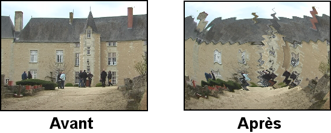
Vous pouvez ajuster les paramètres suivants :


FIXME

FIXME

FIXME
Un autre type d'effet est réalisé sur une portion de la piste et le résultat est enregistré quelque part avant d'être joué. Le résultat est collé sur la piste en remplacement des données d'origine.
Les effets rendus ne sont pas listés dans la fenêtre des ressources mais sont accessibles depuis les options Audio->Rendu d'effet... et Vidéo->Rendu d'effet.... Chacune de ces options de menu affiche un dialogue pour le rendu de l'effet. S'il n'y a pas de piste du type correspondant, une fenêtre d'erreur apparaît.
La région de la timeline sur laquelle appliquer l'effet doit être préalablement définie avant de choisir Rendu d'effet.... S'il n'y a pas de points d'entrée/sortie ni de zone en surbrillance, la région toute entière située après le point d'insertion sera traitée comme étant la région affectée. Sinon, la région affectée sera soit la région se trouvant entre les points d'entrée/sortie, soit la région en surbrillance.
Ensuite, les piste auxquelles appliquer le rendu d'effet doivent être armées. Toutes les autres pistes sont ignorées.
Enfin, le rendu d'effet affecte le traitement de certains attributs de piste lorsqu'il lit ses données d'entrées mais pas d'autres. Les transitions de la piste affectée sont appliquées. Le décalage ne l'est pas et les effets ne le sont pas non plus. Ceci permet aux nouvelles données d'être collées à l'emplacement existant sans modifier la valeur de décalage.
Dans le dialogue de rendu d'effets, il y a une liste de tous les effets en temps réel et de tous les effets rendus. La différence ici est que les effets en temps réel sont rendus vers le disque dur et ne sont pas appliqués sous la piste. Mettez un effet en surbrillance pour le désigner comme celui qui doit être exécuté.
Définissez un fichier vers lequel effectuer le rendu de l'effet dans la boîte
de dialogue Choisir un fichier de destination pour le rendu :. La
loupe permet de choisir le fichier dans
une liste.
Choisissez un format de fichier qui permet de gérer le type de piste. La
clé permet une configuration compatible
avec le format de fichier indiqué.
Il existe aussi une option pour Créer un nouveau fichier à chaque marque. Si vous avez un CD rippé sur la timeline et que vous voulez le diviser en fichiers séparés, les marques deviennent les points de séparation entre les fichiers si cette option a été choisie. Lorsque la timeline est divisée à l'aide des marques, l'effet est réinitialisé à chacune des marques. Les opérations de normalisation prennent la valeur crête du fichier en cours et non la timeline toute entière.
Enfin, il y a une stratégie d'insertion comme dans le dialogue de rendu. Il faut noter que même si l'effet ne s'applique qu'à de l'audio ou qu'à de la vidéo, la stratégie d'insertion s'applique à toutes les pistes exactement comme pour une opération avec le presse-papiers.
Lorsque vous cliquez sur Accepter (OK) dans le dialogue de l'effet, l'interface utilisateur graphique de l'effet est appelée. Si l'effet est aussi un effet en temps réel, une seconde interface graphique est affichée pour demander si vous acceptez ou rejetez les paramètres actuels. Une fois les paramètres acceptés, l'effet est traité.
| 14.1 Les effets audio rendus | Effets audio rendus | |
| 14.2 Les effets vidéo rendus | Effets vidéo rendus |
| 14.1.1 Réchantillonner | Comment réduire la plage dynamique de l'audio. |
Ceci multiplie le numéro de chaque échantillon de sortie par un facteur d'échelle pour arriver au numéro de l'échantillon en entrée. Le taux d'échantillonnage du fichier de sortie est positionné au taux d'échantillonnage du projet mais sa durée est modifiée pour refléter la renumérotation des échantillons. Il filtre aussi l'audio afin de supprimer le repliement de spectre.
Si le facteur d'échelle est de 2, tous les deux échantillons en entrée, on aura un échantillon en sortie et le fichier de sortie aura moitié moins d'échantillons que la séquence d'entrée. S'il est de 0.5, tous les 0,5 échantillons en entrée seront étirés de manière à ce que le fichier de sortie ait deux fois plus d'échantillons que la séquence en entrée.
| 14.2.1 Reframe |
Il réalise exactement la même chose que ReframeRT en mode Etirer. Il multiplie le numéro de l'image en sortie par un facteur d'échelle pour obtenir le numéro de l'image en entrée et il modifie la durée de la séquence. Contrairement à ReframeRT, il doit être lancé depuis le menu Vidéo et sa sortie doit être rendue.
Soyez conscient du fait que Reframe n'écrit pas la fréquence des images avec la fréquence des images du fichier rendu. Il produit un fichier dont la durée est modifiée dans la fréquence des images du projet. La nouvelle durée est affectée d'un coefficient de 1/facteur d'échelle par rapport à la séquence d'origine.
Pour créer un effet de ralenti ou d'accéléré :
Les effets audios LADSPA sont supportés en temps réel et en mode rendu. Les greffons LADSPA que vous pourrez obtenir depuis internet sont de qualités variables. La plupart ne peuvent pas être ajustés facilement pour fonctionner en temps réel en raison d'un manque de réentrance. Bien que Cinelerra implémente une interface LADSPA de la manière la plus rigoureuse possible, gérer plusieurs pistes en temps réel et effectuer du traitement simultané sont au-delà des possibilités de la majorités des utilisateurs de LADSPA. Les effets LADSPA apparaissent dans le dossier audio sous forme du marteau et du tournevis, afin de signifier que ce sont des greffons destinés à des développeurs Audio sous GNU/Linux.
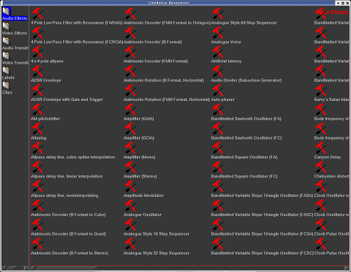
Effets audio Ladspa dans le répertoire audio
Les effets LADSPA sont simplement activés en définissant la variable
d'environnement LADSPA_PATH à la valeur de l'emplacement de vos greffons
LADSPA :
export LADSPA_PATH=/usr/lib/ladspa
ou bien en les mettant dans le répertoire `/usr/lib/cinelerra'.
Si vous utilisez Debian, vous pouvez obtenir un grand nombre de greffons en
utilisant apt :
apt-cache search ladspa
apt-get install jack-rack cmt blop swh-plugins
| 16.1 Utiliser les transitions | ||
| 16.2 Fondu enchaîné vidéo |
Lorsqu'un plan se termine et qu'un autre commence, le comportement par défaut est d'avoir la sortie du premier plan remplacée immédiatement par la sortie du second lorsqu'il sont joués. Les transitions sont un moyen pour la sortie du deuxième plan de remplacer celle du premier avec différentes variations.
Cinelerra peut gérer des transitions audio et vidéo, elles sont toutes listées dans la fenêtre des ressources.

Transitions vidéo dans la fenêtre des ressources
Les transitions ne s'appliquent qu'aux pistes de même type. Les transitions qui se trouvent dans la rubrique des transitions audio (Audio transitions ne peuvent s'appliquer qu'aux pistes audio. Les transitions qu'on trouve dans la rubrique des transitions vidéo Video transitions ne s'appliquent qu'aux pistes vidéo.
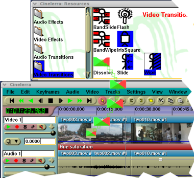
Glissé d'une transition de fondu enchaîné sur la timeline
Chargez un fichier vidéo et coupez-en une section près du centre de façon à ce que le point de coupe soit visible sur la timeline. Allez dans la fenêtre des ressources et cliquez sur le dossier Video transition. Glissez une transition depuis la liste des transitions sur le deuxième plan de vidéo présent sur la timeline. Une boîte en surbrillance entoure l'endroit où apparaîtra la transition. Si vous la déposez sur le deuxième plan, elle s'appliquera entre le premier et le deuxième plan.
Vous pouvez vous déplacer le long de la transition avec les commandes de déplacement et visionner la sortie dans la fenêtre de composition. Les déplacements du point d'insertion ne permettent en général pas de voir les transitions car elles sont habituellement de trop courte durée.
Une fois la transition en place, elle peut être modifiée de la même manière qu'un effet. Survolez la transition avec le pointeur de la souris et faites un clic droit pour afficher le menu de la transition. L'option Afficher les options permet d'afficher les paramètres propres à la transition en question, s'il y en a. L'option de Durée permet d'en ajuster la durée en secondes. Une fois ces deux paramètres définis, ils seront appliqués aux futures transitions jusqu'à ce qu'ils soient de nouveau modifiés. Enfin, l'option Détacher permet de supprimer la transition de la timeline.
Glisser et déposer des transitions depuis la fenêtre des ressources vers la fenêtre de programme peut être long et fastidieux. Heureusement, une fois que vous avez glissé une transition depuis la fenêtre des ressources, les touches U et u permettent de coller une transition identique. La touche U colle la dernière transition vidéo et la touche u permet de coller la dernière transition audio sur toutes les pistes enregistrables. Si le point d'insertion ou le point d'entrée se trouve sur un plan, le début de ce plan sera couvert par la transition.
Il faut noter que lorsque l'on rejoue des transitions depuis la timeline vers un périphérique vidéo bénéficiant d'une accélération matérielle, l'accélération matérielle sera momentanément désactivée pendant la durée de la transition et réactivée après la transition de façon à ce que le rendu puisse se faire. L'utilisation d'un périphérique sans accélération pour l'ensemble de la timeline supprime cet inconvénient.
Important : L'instant exact où la transition prend effet n'est pas évident. Elle commence lorsque le second plan débute et se termine un certain temps après, à l'intérieur du second plan. Il faut donc que le premier objet contienne suffisamment de données après le point de coupe pour remplir la transition à l'intérieur du second plan.
Par exemple, la transition de fondu enchaîné commence à l'emplacement exact où elle est placée sur la timeline. Si vous définissez une durée d'une seconde pour cette transition, elle ne démarrera pas 0,5 secondes avant la transition pour se poursuivre 0,5 secondes après ce point. En fait, elle commencera exactement au point où elle est située sur la timeline, et elle durera 1 seconde à partir de cet emplacement.
Un erreur courante est de mettre une transition de fondu enchaîné juste après la dernière image d'un objet. Imaginons que la transition de fondu enchaîné soit placée entre l'objet A et l'objet B, juste après la dernière image de l'objet A.
Comme l'effet de fondu enchaîné démarre exactement à l'endroit où il est placé, il n'y a plus d'images de l'objet A à afficher lorsque la transition de fondu enchaîné démarre. Il n'y a donc pas d'autre choix pour Cinelerra que de figer la dernière image de l'objet A et de la fondre avec l'objet B.
Vous devez donc vous assurer qu'il y a suffisamment d'images de l'objet A susceptibles d'être affichées lorsque la transition de fondu enchaîné démarre. La durée de ces images devant être supérieure ou égale à la durée de la transition.

C'est une transition de fondu entre deux segments de vidéo, que nous appellerons les segments d'entrée et de sortie. Le segment s'entrée devient progressivement transparent alors que le segment de sortie apparaît progressivement. La durée complète de l'effet peut être contrôlée par "Durée de la transition".
Commandes disponibles :
En effectuant un clic droit sur l'icône de la transition sur la timeline, vous
obtiendrez un menu avec les commandes suivantes
Lorsque vous modifiez le réglage de volume, la caméra, le projecteur ou d'autres paramètres d'une piste, ils restent en général identiques pour toute la durée de la timeline. Utiliser des paramètres statiques n'est parfois pas très utile. Généralement, vous désirez modifier la positon de la caméra au cours du temps ou modifier les positions des masques. Les masques doivent suivre les objets. On crée donc des modifications dynamiques en définissant des images-clés. Une image-clé est un certain instant où les paramètres changent pour une certaine opération. Dans Cinelerra, il y a des images-clés pour presque chaque paramètre de composition et d'effet.
Lorsque vous ajustez un paramètre quelconque, sa valeur est enregistrée dans une image-clé. Si la valeur est enregistrée dans une image-clé, pourquoi ne change-t-elle pas en permanence ? L'image-clé dans laquelle elle est enregistré par défaut est appelé l'image-clé par défaut. L'image-clé par défaut s'applique à toute la durée du projet s'il n'y a aucune autre image-clé. L'image-clé par défaut n'est jamais représentée car elle existe toujours. La seule manière pour qu'une modification apparaisse au cours du temps est de créer d'autres images-clés que l'image-clé par défaut.
On peut afficher les images-clés pour un paramètre donné en utilisant le menu Afficher. Une méthode plus rapide pour activer ou désactiver plusieurs images-clés est d'utiliser le menu Fenêtre->Overlays. Cette fenêtre permet d'activer et de désactiver tous les paramètres présents dans le menu Afficher. Lorsque des images-clés sont sélectionnées, elles sont dessinées sur la timeline sur les pistes auxquelles elles s'appliquent.
Les images-clés existent sous différentes formes : courbes, commutateurs, modes et ainsi de suite. La manière de gérer les différents types d'images-clés est décrite çi-dessous.
| 17.1 Les images-clés de type courbe | ||
| 17.2 Les images-clés de type commutateur | ||
| 17.3 Les images-clés automatiques | ||
| 17.4 Les images-clés du compositeur | ||
| 17.5 Editer les images-clés |
De nombreux paramètres sont enregistrés dans des courbes de Bezier. Allez à Afficher->Fondu ou Afficher->Zoom pour afficher sur la timeline les courbes correspondant à ces paramètres. Dans les deux modes d'édition "flèche" ou "i-beam", déplacez le curseur sur la courbe jusqu'à ce qu'il change de forme. Vous pouvez ensuite créer une image-clé à cette position simplement par un cliquer-glisser sur la courbe.
Une fois l'image-clé créée, un cliquer-glisser sur celle-ci permet de la repositionner. Lorsque vous cliquez-glissez une seconde image-clé sur la courbe, cela crée une courbe en pente douce. Ctrl-glisser sur une image-clé modifie la valeur soit du contrôle d'entrée, soit du contrôle de sortie. Ceci permet de modifier la raideur de la pente de la courbe. Bien que que le contrôle d'entrée et le contrôle de sortie puissent être déplacés aussi bien horizontalement que verticalement, le mouvement horizontal n'est là que pour des raisons de lisibilité et n'est pas utilisé dans la valeur de la courbe.
Vous pouvez vous souvenir que Gimp et les masques de composition utilisent la touche MAJ pour sélectionner des points de contrôle, alors pourquoi est-ce que la timeline utilise CTRL ? Lorsque vous utilisez MAJ-clic sur une courbe de la timeline, l'image-clé se colle soit à l'image-clé qui la suit, soit à celle qui la précède en fonction de celle qui existe. Ceci vous permet de mettre en place une courbe constante sans avoir à copier l'image-clé suivante ou précédente.
| 17.1.1 Naviguer dans les courbes des images-clés |
Il n'y a pas beaucoup de place sur la timeline pour une grande quantité de valeurs de courbes. Il vous faut donc zoomer verticalement sur les courbes pour permettre leur modification. Ceci peut être effectué à l'aide de deux outils : le bouton d'adaptation automatique et le menu de zoom automatique 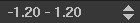.
Le bouton d'adaptation automatique redimensionne et décale la plage verticale de façon à ce que la courbe choisie apparaisse sur la timeline. Si une région de la timeline a été mise en surbrillance par le curseur, seule cette région est mise à l'échelle. Les points d'entrée/sortie n'affectent pas la région zoomée. ALT-f permet d'effectuer la mise à l'échelle automatique.
L'entrée de menu zoom automatique modifie manuellement l'échelle verticale des courbes par multiples de 2. Cliquez sur le bouton pour faire défiler les valeurs de zoom. ALT-haut et ALT-bas permettent de modifier le zoom automatique à l'aide du clavier.
La sourdine est la seule image-clé de type commutateur. Les images-clés de sourdine déterminent où la piste est traitée mais non rendue dans la sortie. Un clic droit sur ces courbes permet de créer une image-clé. A l'inverse des courbes, l'image-clé de type commutateur n'a que deux valeurs : active ou inactive. CTRL et MAJ n'a aucun effet sur les images-clés de type commutateur.
Vous avez peut-être remarqué que lorsque des courbes de réglage de niveau sont configurées, le déplacement du point d'insertion le long de ces courbes les fait bouger de façon à ce qu'ils indiquent la valeur qui se trouve sous le point d'insertion. Ce n'est pas uniquement pour la beauté de la chose. Les boutons de réglage de niveau peuvent eux-même créer des images-clés dans le mode-clés automatiques. Le mode images-clés automatiques est en général plus utile que de glisser les courbes.
Activez ce mode en activant le bouton des images-clés automatiques
. Dans le mode des images-clés
automatiques, chaque fois que vous ajustez un paramètre susceptible d'être mis
sous forme d'image-clé, une image-clé est créée sur la timeline. Comme les
images-clés automatiques affectent de nombreux paramètres, il est préférable de
les activer juste avant d'avoir besoin d'une image-clé et de les désactiver
immédiatement après.
Il est utile d'aller dans le menu Afficher et de rendre le paramètre en question visible avant d'effectuer une modification. L'emplacement où une image-clé automatique est créée se trouve sous le point d'insertion. Si la timeline est jouée alors qu'on ajuste le paramètre, plusieurs images-clés automatiques seront créées alors que vous modifiez ce paramètre.
Lorsque le mode des images-clés automatiques est désactivé, une chose étrange du même genre se produit. L'ajustement d'un paramètre ajuste l'image-clé qui précède immédiatement le point d'insertion. S'il existe deux images-clés et que le point d'insertion se trouve entre les deux, une modification d'un réglage de niveau va modifier la première image-clé.
Il y a de nombreux paramètres qui ne peuvent être mis sous forme d'images-clés que dans le mode des images-clés automatiques. Ce sont les paramètres pour lesquels les courbes prendraient trop de place sur la piste ou qui ne peuvent pas être aisément représentés sous forme de courbe.
Les effets ne peuvent pas être mis sous forme d'images-clés en raison du grand nombre de paramètres possibles pour chacun des effets.
La translation de la caméra et du projecteur ne peut être mise sous forme d'images-clés que dans le mode des images-clés automatiques alors que le zoom de la caméra et du projecteur peuvent être mis sous forme d'images-clés à l'aide de courbes. C'est ici que nous terminons la discussion concernant la composition, car celle-çi dépend grandement des possibilités de modifications au cours du temps.
La translation de la caméra et du projecteur est représentée par deux paramètres : les coordonnées x et y. C'est donc fastidieux de les ajuster à l'aide des courbes. Cinelerra permet de résoudre ce problème via les images-clés automatiques. Avec une piste vidéo chargée, déplacez le point d'insertion au début de la piste et activez le mode des images-clés automatiques.
Déplacez légèrement le projecteur dans la fenêtre de composition pour créer une image-clé. Déplacez-vous alors vers l'avant de quelques secondes. Déplacez le projecteur sur une assez longue distance pour créer une autre image-clé et amplifier le mouvement. Ceci crée une seconde boîte de projecteur dans le compositeur avec une ligne joignant les deux boîtes. Cette ligne est le chemin de déplacement. Si vous créez d'autres images-clés, d'autres boîtes seront créées. Une fois que toutes les images-clés voulues sont créées, désactivez le mode des images-clés automatiques.
Maintenant, lorsque vous déplacez le curseur dans la fenêtre de composition, la projection vidéo se déplace au cours du temps. A n'importe quel endroit entre deux images-clés, le chemin du déplacement est rouge pour tous les instants précédant le point d'insertion et vert pour tous les instants qui le suivent. On peut se demander si cette fonction est très utile mais elle vous permet de vous rendre compte qu'une image-clé va être affectée par les prochains réglages du projecteur.
Un cliquer-glisser alors que les images-clés automatiques ne sont pas actives permet d'ajuster l'image-clé précédente. Si vous vous trouvez à mi-chemin entre deux images-clés, la première boîte de projecteur est ajustée alors que la seconde n'est pas modifiée. De plus, la vidéo ne semble pas se déplacer en phase avec la première image-clé. Ceci est dû au fait qu'à mi-chemin entre deux images-clés, la translation du projecteur est interpolée. Pour pouvoir définir la seconde image-clé, vous devrez vous déplacer après la seconde image-clé.
Par défaut, le trajet de déplacement est une ligne droite, mais il peut être incurvé à l'aide de points de contrôle. Un CTRL-glisser permet de placer le point de contrôle d'entrée ou de sortie de l'image-clé précédente. Une fois encore, nous nous éloignons du comportement de Gimp car la touche MAJ est déjà utilisée pour le zoom. Ensuite, les points d'entrée/sortie sont extrapolés à partir de l'image-clé, un CTRL-glisser n'importe où sur la vidéo permet d'ajuster le point de contrôle le plus proche. Un point de contrôle peut être entièrement hors de vue tout en restant contrôlable.
Lorsque vous éditez la translation de la caméra, le comportement des boîtes de caméra est légèrement différent. La caméra est généralement utilisée pour effectuer des panoramiques sur des images fixes. La boîte de caméra en cours ne se déplace pas durant un glisser, mais si plusieurs images-clés sont définies, chaque boîte de caméra, excepté l'image-clé en cours semblent se déplacer. Ceci est dû au fait que l'affichage de la caméra affiche toutes les autres positions de caméras par rapport à celle en cours.
La situation devient plus intuitive si vous courbez le chemin de déplacement entre deux images-clés et que vous vous déplacez entre ceux-ci. La limite entre le rouge et le vert, qui est la position actuelle des images-clés, est toujours centrée alors que les boîtes de caméra se déplacent.
IMPORTANT : lorsque vous copiez et collez des images-clés, assurez-vous qu'il n'y a pas de point d'ENTREE ou de point de SORTIE sur la timeline.
Les images-clés peuvent être déplacées le long de la timeline et déplacées entre pistes en utilisant des opérations de couper-coller semblables à celles utilisée pour le montage de média. Cependant, seules les images-clés sélectionnées dans le menu Afficher seront affectées par les opérations d'édition.
L'opération d'édition des images-clés la plus populaire est la réplication
d'une courbe d'une piste à l'autre pour créer une paire stéréo. La première
étape est d'isoler le  bouton
d'enregistrement de la piste source à l'aide de MAJ-clic. Ensuite, placez
les points d'entrée/sortie ou mettez en surbrillance la zone des images-clés
désirée. Utilisez Images-clés->Copier les Images-clés pour copier les
images-clés dans le presse-papiers. Isolez le
bouton d'enregistrement de la piste de
destination par MAJ-clic et utilisez Images-clés->Coller les
images-clés pour coller le contenu du presse-papiers.
bouton
d'enregistrement de la piste source à l'aide de MAJ-clic. Ensuite, placez
les points d'entrée/sortie ou mettez en surbrillance la zone des images-clés
désirée. Utilisez Images-clés->Copier les Images-clés pour copier les
images-clés dans le presse-papiers. Isolez le
bouton d'enregistrement de la piste de
destination par MAJ-clic et utilisez Images-clés->Coller les
images-clés pour coller le contenu du presse-papiers.
Les commandes d'édition de média sont liées aux commandes d'édition des images-clés en utilisant la touche MAJ à la place du raccourci clavier seul.
Ceci introduit la partie la plus compliquée de l'édition des images-clés, l'images-clé par défaut. Souvenez-vous que même si aucune image-clé n'a été définie, il y a quand même une image-clé par défaut qui contient un paramètre global pour toute la durée. L'image-clé par défaut n'est pas dessinée car elle existe toujours. Que se passe-t-il si l'image-clé par défaut contient une valeur intéressante que vous voulez transposer vers d'autres images-clés qui ne sont pas celles par défaut ? Les fonctions Images-clés->Copier l'image-clé par défaut et Images-clés->Coller l'image-clé par défaut permettent de convertir l'image-clé par défaut en une image-clé qui ne soit pas celle par défaut.
Si vous avez copié une image-clé qui n'est pas celle par défaut, elle peut être enregistrée comme image-clé par défaut en utilisant Images-clés->Coller l'image-clé par défaut. Après avoir utilisé cette fonction pour convertir une image-clé qui n'est pas celle par défaut en image-clé par défaut, vous ne verrez pas la valeur de l'image-clé par défaut avant que toutes les images-clés autres que celles par défaut aient été supprimées.
Il y a enfin une manière pratique d'effacer les images-clés en sélectionnant une zone et en utilisant Images-clés->Effacer les images-clés. Faites simplement un cliquer-glisser d'une image-clé avant l'image-clé qui la précède ou après l'image-clé qui la suit sur la piste.
| 18.1 Acquisition en utilisant Cinelerra | ||
| 18.2 Acquisition en utilisant dvgrab |
| 18.1.1 Fonctions d'enregistrement de Cinelerra | ||
| 18.1.2 Enregistrement par lots | ||
| 18.1.3 Editer les informations du tuner |
Idéalement, tous les médias sont enregistrés sur disque-dur, CD-ROM, flash ou DVD et le chargement dans Cinelerra ne consiste qu'à charger un fichier. En réalité, il n'y a que très peu de sources de médias qui puissent être accédées comme un système de fichiers ; ils utilisent plutôt des mécanismes de transport et des mécanismes d'E/S basiques pour transférer les données vers les ordinateurs. Ces types de média sont importés dans Cinelerra par l'intermédiaire du dialogue d'enregistrement.
La première étape lors de l'enregistrement est de configurer le périphérique d'entrée. Dans Configuration->Préférence se trouvent de nombreux paramètres d'enregistrement décrits dans la configuration Voir la section Acquisition. Ces paramètres s'appliquent à l'enregistrement quelque soient les paramètres du projet, car les paramètres d'enregistrement utilisent habituellement les pleines capacités du matériel d'enregistrement alors que les paramètres du projet peuvent varier.
Allez dans le menu Fichier->Enregistrer pour effectuer l'enregistrement depuis une source externe. Un format de sortie vous sera demandé comme pour le rendu. Ensuite, la fenêtre d'enregistrement et le moniteur d'enregistrement vont s'afficher.
La fenêtre d'enregistrement comporte un certain nombre de sections. Alors que de nombreux paramètres changent selon que le fichier contienne de l'audio ou de la vidéo, les sections elles-mêmes restent toujours les mêmes.

Zones de la fenêtre d'enregistrement
L'enregistrement dans Cinelerra est organisé par lots. Un lot définit
essentiellement un fichier de sortie distinct pour l'enregistrement. Pour
l'instant, vous pouvez ignorer complètement le concept de lot et effectuer
l'enregistrement simplement en cliquant le  bouton d'enregistrement.
bouton d'enregistrement.
Le bouton d'enregistrement ouvre le fichier de sortie en cours s'il n'est pas
déjà ouvert et y écrit les données capturées. Le bouton arrêt permet d'arrêter
l'enregistrement. L'enregistrement peut être repris à ce point avec le bouton
d'enregistrement, sans effacer le fichier. Dans le cas d'un fichier vidéo, il
y a un bouton d'enregistrement d'une seule image
 qui permet de n'enregistrer qu'une seule
image.
qui permet de n'enregistrer qu'une seule
image.
Lorsque vous avez enregistré suffisamment de données, choisissez la méthode d'insertion dans le menu stratégie d'insertion et cliquez sur le bouton de fermeture.
Nous arrivons maintenant au concept de lots. Les lots permettent d'essayer de rendre le comportement d'entrées/sorties simples plus proche de celui d'un système de fichiers. Les lots sont traditionnellement utilisés pour diviser une bande en différents programmes et enregistrer différents programmes sous forme de fichiers séparés plutôt que d'enregistrer la bande sous la forme d'un fichier d'un seul tenant. En raison du coût élevé de développement d'un mécanisme de contrôle de banc de montage précis à l'image près, la seule utilisation actuelle des lots est l'enregistrement de différents programmes à différentes heures de la journée. C'est aussi utile pour enregistrer des émissions de télévision ou des films en différé comme le savent bien tous ceux qui n'ont pas les moyens d'acquérir les appareils adéquats.
La fenêtre d'enregistrement gère une liste de lots et deux modes d'enregistrement : le mode interactif et le mode par lots. Le mode interactif est utilisé lorsque le bouton d'enregistrement est pressé. L'enregistrement interactif démarre immédiatement et utilise le lot en cours pour tout déterminer sauf l'instant de départ. Par défaut, le lot en cours est configuré pour se comporter comme une bande magnétique.
L'enregistrement par lots se produit lorsque le bouton Démarrer est pressé. Dans l'enregistrement par lots, l'instant de départ est le moment où le lot commence à s'enregistrer.
Il vous faudra d'abord créer un certain nombre de lots. A chaque lot s'appliquent certains paramètres et certaines méthodes d'ajustement.
La fenêtre d'enregistrement comporte la notion de lot en cours. Le lot en cours n'est pas le même que le lot en surbrillance dans la liste des lots. Le lot en cours est de couleur rouge dans la liste des lots. Le lot en surbrillance est simplement affiché dans la section d'édition du lot pour pouvoir être édité.
En mettant en rouge le lot en cours, chaque lot peut être édité en le mettant en surbrillance, sans pour autant modifier le lot qui doit être enregistré.
Toutes les opérations d'enregistrement sont effectuées dans le lot en cours. S'il y a plusieurs lots, mettez le lot désiré en surbrillance et cliquez Activer afin qu'il devienne le lot en cours. Si le bouton Démarrer est pressé, le lot en cours clignote pour indiquer qu'il est en attente de l'instant de départ en mode de traitement par lots. Si le bouton Enregistrer est pressé, le lot en cours est enregistré immédiatement en mode interactif.
Dans les modes d'enregistrement par lot ou interactif, lorsque le lot en cours se termine, le lot suivant est activé et exécuté. Tous les enregistrements suivants sont effectués en mode de traitement par lots. Lorsque le premier lot se termine, le lot suivant clignote jusqu'à ce que l'instant de départ soit atteint.
Le bouton Arrêter permet d'arrêter le lot ou l'opération interactive en cours.
Enfin, il y a le bouton  de retour arrière.
Dans les modes d'enregistrement par lots ou interactif, le bouton de retour
arrière permet de fermer le fichier du lot en cours. L'opération
d'enregistrement suivante du lot en cours effacera le fichier.
de retour arrière.
Dans les modes d'enregistrement par lots ou interactif, le bouton de retour
arrière permet de fermer le fichier du lot en cours. L'opération
d'enregistrement suivante du lot en cours effacera le fichier.
Vous aurez parfois besoin, dans le processus d'enregistrement et dans le processus de configuration, de définir et de sélectionner des canaux du tuner soit pour l'enregistrement, soit pour la lecture. Dans le cas de l'enregistrement avec les pilotes d'enregistrement Video4Linux et Buz, les canaux du tuner définissent la source. Lorsque le pilote Buz est aussi utilisé pour la lecture, les canaux du tuner définissent la destination.
La définition des canaux du tuner est obtenue en pressant le bouton de canal
 . Ceci permet d'afficher la fenêtre d'édition
des canaux. Dans cette fenêtre, vous pouvez ajouter, modifier et classer les
canaux. Avec certains pilotes vidéo, vous pouvez aussi ajuster la qualité de
l'image.
. Ceci permet d'afficher la fenêtre d'édition
des canaux. Dans cette fenêtre, vous pouvez ajouter, modifier et classer les
canaux. Avec certains pilotes vidéo, vous pouvez aussi ajuster la qualité de
l'image.
L'opération d'ajout provoque l'affichage d'une boîte d'édition du canal. Le titre du canal apparaît dans la liste des canaux. La source du canal est l'entrée physique dans la table de fréquences du tuner correspondant au titre.
L'ajustement fin dans le dialogue d'édition ajuste légèrement la fréquence si le pilote le gère. La norme et la table de fréquences définissent ensemble la table de fréquences qui sera choisie pour définir les sources. Si le périphérique peut gérer plusieurs entrées, le menu d'entrée permet de la sélectionner.
Pour trier les canaux, mettez le canal en surbrillance et pressez déplacer vers le haut ou déplacer vers le bas afin de le déplacer.
Une fois les canaux définis, l'entrée source dans la fenêtre d'enregistrement peut être utilisée pour choisir les canaux vers lesquels sera effectué l'enregistrement. Une possibilité identique existe aussi dans la fenêtre d'enregistrement. Notez que les sélections de canaux dans la fenêtre d'enregistrement et dans la fenêtre du moniteur sont enregistrées dans le lot en cours.
Avec certains pilotes, une option permettant de permuter les champs est affichée. Ces pilotes ne permettent pas d'avoir les champs dans le bon ordre sans une intervention humaine. Cochez cette option pour avoir les lignes paires et impaires enregistrées dans l'ordre correct.
Dvgrab est un très bon outil en ligne de commande simple à utiliser pour faire de l'acquisition vidéo depuis un caméscope DV. Lorsqu'il est appelé, il va automatiquement mettre votre caméscope en mode lecture, et commencer à enregistrer les vidéo sur votre disque dur. Les fichiers vidéos seront numérotés séquentiellement comme ceci : `001.avi', `002.avi' et ainsi de suite.
Pour installer dvgrab, utilisez le mécanisme d'installation de votre distribution préférée (apt, rpm, deb, etc.) ou référez-vous à la page Web de dvgrab.
Faire l'acquisition vidéo en quatre étapes simples :
cd dans ce répertoire
dvgrab --buffers 500 et Entrée
L'option `--autosplit' est très utile. Elle découpe les scènes en fonction du code temporel. Cependant, ceci ne fonctionne que lors de l'acquisition depuis un caméscope DV. Ceci ne fonctionnera pas depuis un convertisseur analogique/numérique tel qu'un Canopus ADVC110.
Lisez le manuel de dvgrab afin d'obtenir davantage d'informations concernant ses fonctionnalités.
Le rendu prend une section de la timeline, réalise tout le montage, applique les effets et la composition et effectue l'enregistrement dans un fichier de sortie. Vous pouvez alors supprimer tous les objets source, lire le fichier issu du rendu dans un lecteur ou le réimporter dans Cinelerra pour y poursuivre le montage. Il est cependant très difficile de retoucher les décisions de montage lorsque le fichier est rendu, c'est pourquoi il vous est conseillé de conserver les objets d'origine et le fichier XML de montage pendant quelques jours après que vous en ayez effectué le rendu.
Toutes les opérations de rendu sont basées sur une région de la timeline. Vous devez définir cette région sur la timeline. La section sur la navigation décrit des méthodes pour définir des régions. Voir la section La barre temporelle. Les fonctions de rendu définissent la région en se basant sur un jeu de règles. Lorsqu'une région est en surbrillance ou lorsque les points d'entrée/sortie sont placés, le rendu de la région affectée est effectué. Lorsqu'il n'y a pas de région en surbrillance, tout ce qui se trouve après le point d'insertion est rendu. En plaçant simplement le point d'insertion au début d'une piste et en désélectionnant les points d'entrée/sortie, la piste toute entière est rendue.
| 19.1 Rendu d'un seul fichier | Effectuer le rendu d'un fichier unique | |
| 19.2 Rendu dans des fichiers séparés | ||
| 19.3 Stratégie d'insertion des fichiers rendus | ||
| 19.4 Rendu par lots | Rendu sans intervention de l'utilisateur | |
| 19.5 La grappe de rendu | Rendu en utilisant de nombreux ordinateurs | |
| 19.6 Rendu en ligne de commandes | Effectuer le rendu de plusieurs fichiers sans interface graphique | |
| 19.7 Rendu de vidéos pour internet | ||
| 19.8 Charte de compatibilité de Quicktime pour GNU/Linux | ||
| 19.9 Faire un DVD | ||
| 19.10 Utiliser le rendu en tâche de fond |
La manière la plus rapide de finaliser votre vidéo sur le disque est d'utiliser la fonction de rendu d'un seul fichier.
Allez dans Afficher->Rendu ou pressez MAJ-R pour afficher le dialogue
de rendu. Choisissez la loupe pour
afficher un dialogue de sélection de fichier. Ceci permet de définir le nom du
fichier vers lequel il faudra écrire les données issues du rendu et de définir
les paramètres d'encodage.

La fenêtre de rendu
Dans le dialogue de rendu, choisissez un Format de fichier. Le format du fichier détermine si vous pouvez effectuer le rendu d'audio, de vidéo ou des deux à la fois. Cochez la case Rendu des pistes audio pour créer des pistes audio et Rendu des pistes vidéo pour créer des pistes vidéo.
Sélectionnez la clé qui se trouve près
de chacune des cases afin de déterminer les paramètres de compression. Si le
format du fichier ne permet pas d'enregistrer de l'audio ou de la vidéo les
paramètres de compression seront vierges. Si vous avez choisi Rendu des
pistes audio ou Rendu des pistes vidéo et que le format du fichier ne le
gère pas, une fenêtre d'erreur sera affichée.
La case à cocher Créer un nouveau fichier à chaque marque provoquera la création d'un nouveau fichier chaque fois qu'une marque sera rencontrée sur la timeline. Ceci est utile pour séparer de longs enregistrements audio en des fichiers séparés. Lorsque vous utilisez la grappe de calcul, Créer un nouveau fichier à chaque marque entraînera la création d'une nouvelle tâche à chaque marque plutôt que de d'utiliser l'algorithme interne d'équilibrage de la charge pour espacer les tâches.
Lorsque Créer un nouveau fichier à chaque marque est sélectionné, un nouveau nom de fichier est créé pour chaque fichier de sortie. Si le nom de fichier donné dans le dialogue de rendu contient un nombre sur deux chiffres, ce nombre sera réécrit avec un nombre différent qui sera incrémenté pour chacun des fichiers de sortie. Si deux chiffres ne sont pas renseignés, Cinelerra concaténera automatiquement, pour chacun des fichiers de sortie, un nombre à la fin du nom de fichier indiqué.
Dans le nom de fichier `/hmov/track01.wav', le `01' sera réécrit pour chaque fichier de sortie. Cependant, le nom de fichier `/hmov/track.wav', deviendra `/hmov/track.wav001' et ainsi de suite. La modification des noms de fichiers n'est utilisée que lorsque la grappe de calcul est active ou lorsque l'option Créer un nouveau fichier à chaque marque a été sélectionnée.
Enfin, le dialogue de sortie vous permet de choisir le mode d'insertion. Les modes d'insertion sont identiques à ceux du chargement de fichiers. Dans ce cas, si vous choisissez de ne rien insérer, le fichier sera écrit sur le disque sans modifier le projet actuel. Pour les autres stratégies d'insertion, assurez-vous d'avoir préparé la timeline afin que la sortie soit insérée au bon endroit avant que l'opération de rendu ne soit effectuée. Voir la section Le montage. Le montage décrit comment faire pour que la sortie soit insérée au bon endroit.
Il faut noter que même si vous ne voulez effectuer le rendu que de l'audio ou que de la vidéo, une stratégie d'insertion de type coller se comportera comme une opération de coller normale, toute région de la timeline sélectionnée sera effacée et seules les données rendues seront collées. Si vous ne rendez que de l'audio et que vous avez des pistes vidéo armées, les pistes vidéo seront tronquées lorsque l'audio sera collé sur les pistes audio.
Si vous voulez effectuer le rendu de nombreux projets vers des fichiers de média sans avoir à utiliser de manière répétitive le dialogue de rendu, le rendu par lots est la fonction à utiliser. Dans cette fonction, vous indiquerez toutes les EDL dont il faut effectuer le rendu avec les fichiers de sortie correspondant. Cinelerra va alors charger chaque fichier EDL et effectuer le rendu automatiquement, sans intervention de l'utilisateur. Chaque EDL et sa sortie associée est appelé lot. Ceci permet de traiter un très gros volume de média et améliore beaucoup la rentabilité d'un ordinateur coûteux.
La première chose à faire lors de la préparation d'un rendu par lots est de définir les projets dont il faut effectuer le rendu. Définissez un projet et indiquez la région devant être rendue soit en la mettant en surbrillance, soit en l'encadrant par les points d'entrée/sortie ou la faisant précéder du point d'insertion. Enregistrez alors le projet sous forme d'EDL. Définissez de cette manière autant de projets que nécessaire. Le rendu par lots récupère la région active du fichier EDL pour le rendu.
Lorsque tous les fichiers EDL sont prêts avec leur région active, sélectionnez l'entrée de menu Fichier->Rendu par lots. Le dialogue de rendu par lots s'affichera alors. L'interface pour le rendu par lots est un peu plus compliquée que pour le rendu d'un seul fichier.
Il faut, avant de lancer une opération de rendu par lots, créer une liste des lots. La table des lots qui apparaît en bas du dialogue de rendu par lots est appelé Lots dont il faut effectuer le rendu. Au-dessus de ce tableau figurent les paramètres de configuration pour un lot.
Définissez le chemin de sortie, le format de fichier, l'Audio, la Vidéo et le paramètre Créer un nouveau fichier à chaque marque comme s'il s'agissait d'un seul fichier. Ces paramètres ne s'appliquent qu'à un seul lot. En plus des paramètres de rendu habituels, vous devez indiquer le fichier EDL source à utiliser pour le lot. Faites-le en indiquant le chemin vers l'EDL.
Si la liste des lots dont il faut effectuer le rendu est vide ou si rien n'est en surbrillance, cliquez sur Nouveau pour créer un nouveau lot. Le nouveau lot se verra affecter tous les paramètres que vous venez juste de définir.
En pressant plusieurs fois le bouton Nouveau, vous allez créer d'autres lots avec les mêmes paramètres. Mettez en surbrillance un lot pour pouvoir modifier sa configuration depuis la partie supérieure de la fenêtre de rendu par lots. Les informations affichées correspondent toujours au lot en surbrillance.
Il suffit de cliquer-glisser les lots pour modifier l'ordre avec lequel le rendu sera effectué. Cliquez sur Supprimer pour supprimer définitivement le lot en surbrillance.
Il y a dans la liste une colonne qui permet d'activer ou de désactiver un lot. De cette manière, des lots peuvent être sautés lors du rendu sans être supprimés. Cliquez sur la case Activé dans la liste pour activer ou désactiver un lot. Si elle est cochée, le lot sera rendu. Si elle est vide, le lot sera sauté.
Les autres colonnes de la liste des lots ne sont là que pour donner des informations.
Pour lancer le rendu en commençant par le premier lot, cliquez sur Démarrer.
Lorsque le rendu est en cours, la fenêtre principale affiche l'avancement du lot. Une fois le lot terminé, la colonne Temps écoulé dans la liste des lots est mise à jour et le lot suivant est rendu jusqu'à ce que tous les lots activés soient rendus. Le lot en cours de rendu est affiché en rouge.
Pour arrêter le rendu avant que les lots ne soient terminés sans fermer le dialogue de rendu par lots, cliquez Arrêter.
Pour arrêter le rendu avant que les lots ne soient terminés en fermant le dialogue de rendu, cliquez sur Abandonner.
Pour quitter le dialogue de rendu qu'il y ait ou non un rendu en cours, cliquez sur Abandonner.
Lorsqu'une interpolation bicubique avec de la HDTV a été réalisée pour la première fois dans Cinelerra, le temps nécessaire pour produire la moindre sortie devint inacceptable, même sur la machine la plus rapide disponible alors, un double Xeon 1,7 GHz. La grappe de calcul, même dans sa forme la plus simple, permit de mettre la HDTV au même niveau que la SD tout en rendant la SD plus rapide que le temps réel.
Bien que l'interface de la grappe de calcul ne soit pas spectaculaire, il est suffisamment simple à utiliser depuis une suite de montage avec moins d'une douzaine de noeuds sans avoir les complications de que vous auriez à configurer une grappe de calcul de plusieurs centaines de noeuds. La grappe de calcul est appelée de manière transparente pour toutes les opérations de rendu effectuées depuis Fichier->Rendu une fois qu'elle a été activée dans les préférences.
Cinelerra divise la région choisie de la timeline en un certain nombre de tâches qui sont ensuite réparties entre les différents noeuds en fonction de l'équilibre de la charge. Les noeuds traitent les tâches et écrivent leur sortie vers des fichiers séparés du système de fichiers. Les fichiers de sortie ne sont pas concaténés. Il est important que tous les noeuds aient accès aux objets sur le même système de fichiers associé au même point de montage.
Si un noeud ne peut pas avoir accès à un objet d'entrée, il affichera un message d'erreur sur sa console mais ne plantera probablement pas. S'il ne peut pas avoir accès aux objets en sortie, cela arrêtera le rendu.
Il faut noter que, dans le dialogue de rendu, l'option Créer un nouveau fichier à chaque marque créera une nouvelle tâche pour la grappe de calcul à chaque marque plutôt que de les voir crées par le système d'équilibrage de charge. Si cette option est sélectionnée alors qu'il n'existe aucune marque, une seule tâche sera créée.
Une grappe de calcul de Cinelerra est organisée avec un noeud principal et un
nombre quelconque de noeuds secondaires. Le noeud principal est l'ordinateur
sur lequel tourne l'interface graphique. Les noeuds secondaires se trouvent
n'importe où sur le réseau et sont lancés en ligne de commande. On lance un
noeud secondaire avec la commande cinelerra -d
C'est la configuration la plus simple. Entrez cinelerra -h pour
obtenir l'ensemble des options disponibles. Le numéro de port par défaut peut
être modifié en passant en paramètre un numéro de port après `-d'.
La plupart du temps, vous désirerez aller dans la sortie rendue et ajuster les temps sur la timeline. Mais certains formats de fichiers comme MPEG ne peuvent pas être copiés directement. C'est pour cette raison que les fichiers sont laissés sous forme de fichiers séparés.
Vous pouvez les charger en créant de nouvelles pistes et en indiquant Ajouter aux pistes existantes dans le dialogue de chargement. Les fichiers qui autorisent la copie directe peuvent être concaténés dans un fichier unique en effectuant le rendu dans le même format de fichier, la grappe de calcul étant désactivée. Pour pouvoir effectuer une copie directe, la taille de la piste, les dimensions en sortie et les dimensions des objets doivent aussi être identiques.
Les fichiers MPEG ou les fichiers qui ne permettent pas la copie directe doivent être concaténés avec un utilitaire en ligne de commande. Les fichiers MPEG peuvent être concaténés avec la commande cat.
La configuration de la grappe de calcul est décrite dans le chapitre sur la configuration. Voir la section La grappe de calcul. Traditionnellement, les noeuds secondaires lisent et écrivent les données vers un système de fichiers par l'intermédiaire du réseau et ils n'ont donc pas besoin de disque dur.
Idéalement, tous les noeuds d'une grappe de calculs devraient avoir les mêmes caractéristiques de CPU. Cinelerra effectue l'équilibrage de la charge sur la base du premier arrivé, premier servi. Si le dernier segment est affecté au noeud le plus lent, tous les noeuds plus rapides attendront que le noeud le plus lent ait terminé alors qu'ils auraient pu en effectuer le rendu plus rapidement.
Le rendu en ligne de commandes est une manière de charger le jeu actuel de tâches de rendu par lots et de les traiter sans interface graphique. C'est utile si vous avez un système X qui plante souvent ou si vous désirez effectuer le rendu par l'intermédiaire d'une liaison réseau à faible débit. Vous pouvez avoir accès à un supercalculateur en Inde mais être coincé en Amérique, peut-être exilé. Une interface en ligne de commande est idéale pour solutionner ce problème.
Pour effectuer le rendu depuis la ligne de commandes, lancez d'abord Cinelerra en mode graphique. Allez dans le menu Fichier->Rendu par lots. Créez les lots dont vous désirez effectuer le rendu dans la fenêtre de rendu par lot et fermez la fenêtre. Ceci enregistre les lots dans un fichier. Configurez les attributs voulus pour la grappe de calcul dans Configuration->Préférences et quittez Cinelerra. Ces paramètres sont utilisés lorsque le rendu en ligne de commandes est utilisé par la suite.
Sur la ligne de commandes, entrez : cinelerra -r
pour traiter le lot de travaux en cours sans interface graphique. La configuration de tous les paramètres pour cette opération est compliquée. C'est pourquoi la ligne de commande s'arrête si un des quelconques fichiers de sortie existe déjà.
Il existe d'autres paramètres pour indiquer des fichiers de remplacement pour les préférences et les lots. Une tentative pour utiliser autre chose que les valeurs par défaut est assez risquée et n'a donc pas été testée.
| 19.7.1 Encoder une vidéo au format MPEG4 pour internet | ||
| 19.7.2 Encoder une vidéo au format FLV pour internet |
Si vous désirez réencoder votre fichier rendu avec mencoder, nous vous recommandons d'en effectuer son rendu sous forme de fichier Quicktime4linux, et d'ensuite encoder ce fichier dans les formats MPEG4 ou FLV. Le fichier Quicktime4linux rendu depuis Cinelerra doit avoir les propriétés suivantes :
Pour obtenir la meilleure qualité possible, vous devez encoder votre fichier Quicktime4linux en deux passes.
Première passe :
mencoder input.mov -ovc xvid -xvidencopts bitrate=600:pass=1 \ -vf scale=320:240 -oac mp3lame -lameopts abr:br=64 -o output.avi
Seconde passe :
mencoder input.mov -ovc xvid -xvidencopts bitrate=600:pass=2 \ -vf scale=320:240 -oac mp3lame -lameopts abr:br=64 -o output.avi
N'oubliez pas de changer la dimension de la vidéo encodées, en utilisant
l'option `-vf scale='.
Voici d'autres lignes de commandes. Elles procurent des fichiers vidéos dont le poids
est d'environ 13 Mb pour 3 minutes.
Première passe :
mencoder -oac pcm -sws 2 -vf scale=${width}:${height},hqdn3d=2:1:2 \
-ovc lavc -lavcopts vcodec=mpeg4:vbitrate=${video_bitrate}:vlelim=-4:\
vcelim=7:lumi_mask=0.05:dark_mask=0.01:scplx_mask=0.3:naq:v4mv:mbd=2:\
trell:cmp=3:subcmp=3:mbcmp=3:aspect=4/3:sc_threshold=1000000000:\
vmax_b_frames=2:vb_strategy=1:dia=3:predia=3:cbp:mv0:preme=2:\
last_pred=3:vpass=1:cgop -ofps 25 -of avi movie.mov -o /dev/null\
-ffourcc DIVX
Seconde pass :
mencoder -srate 32000 -oac mp3lame -lameopts cbr:br=${audio_bitrate}:\
aq=0 -sws 2 -vf scale=${width}:${height},hqdn3d=2:1:2 -ovc lavc\
-lavcopts vcodec=mpeg4:vbitrate=${video_bitrate}:vlelim=-4:vcelim=7:\
lumi_mask=0.05:dark_mask=0.01:scplx_mask=0.3:naq:v4mv:mbd=2:trell:\
cmp=3:subcmp=3:mbcmp=3:aspect=4/3:sc_threshold=1000000000:\
vmax_b_frames=2:dia=3:predia=3:cbp:mv0:preme=2:last_pred=3:vpass=3:\
cgop -ofps 25 -of avi movie.mov -o movie.avi -ffourcc DIVX
Vous devrez probablement adapter ces lignes de commandes si l'image de la vidéo
originale comprend beaucoup de bruit; renseignez-vous sur les filtres de
pré-traitement de mencoder. Les paramètres *_mask sont très important lors
d'un encodage à un faible débit binaire.
Si vous voulez que votre fichier vidéo soit affiché correctement dans un visualisateur de vidéo très connu sous Windows, vous devez savoir que :
Le poids des fichiers FLV (FLash Video) est très petit et les seuls composants qui soient nécessaires pour les afficher est un navigateur internet et un greffon flash version 7 ou supérieur installé. Ce format est vraiment utile pour les personnes qui désirent partager leur vidéo avec une large audience sur internet.
Première passe :
ffmpeg -i movie.mov -b 430 -s 320x240 -aspect 4:3 -pass 1 -ar 22050 movie.flv
Seconde passe :
ffmpeg -i movie.mov -b 430 -s 320x240 -aspect 4:3 -pass 2 -ar 22050 movie.flv
Faites attention à l'extension du nom de fichier de sortie. Ffmpeg l'utilise pour déterminer le format de sortie. La fréquence d'échantillonnage de l'audio à utiliser est de 22050 et le paramètre `-ar' doit être utilisé pour permettre à la vidéo d'être correctement encodée. Ffmpeg n'écrit pas de méta-données dans le fichier flv. La durée doit être écrite dans ces meta-données afin que certains visualisateur flash puissent afficher une barre de progression de la lecture. FLVTool2 (http://www.inlet-media.de/flvtool2) peut être utilisé afin d'insérer cette information :
cat fichier_entree.flv | flvtool2 -U stdin fichier_sortie.flv
Scott Frase a écrit une charte de compatibilité de Quicktime pour GNU/Linux. Elle comprend une liste exhaustive des tous les schémas de compression Quicktime disponibles et de leur compatibilité avec Cinelerra, Mplayer et autres logiciels de lecture de de médias. Ce document comporte deux parties principales, une est basée sur un projet formaté selon une résolution HDV et une autre basée sur un projet dans une résolution au format DV.
Il se trouve disponible ici :
http://content.serveftp.net/video/qtcompatibility.ods
Quelques notes intéressantes :
| 19.9.1 Rendu vers mpeg2 | ||
| 19.9.2 Faire un menu de DVD | ||
| 19.9.3 Créer un DVD | ||
| 19.9.4 Graver un DVD |
Voici une méthode pour exporter une vidéo mpeg2 et réaliser un DVD ne comportant qu'un seul chapitre. Cette méthode vous permet de définir précisément les options d'encodage que vous désirez et produit un fichier mpeg2 100% compatible avec tous les lecteurs de DVD de salon.
Le programme mplex, qui fait partie de mjpegtools doit être installé. Le paquet mjpegtools fait partie de la distribution hvirtual et l'utilitaire mplex peut en être extrait.
Assurez-vous d'abord que vous avez correctement défini votre format de projet Cinelerra avant d'effectuer le rendu de votre vidéo (menu Configuration->Format). En PAL, il d'agit de 720x576 à 25 images/seconde, et en NTSC, il s'agit de 720x480 à 29,97 images par seconde.
#/bin/bashmpeg2enc -v 0 -K tmpgenc -r 16 -4 1 -2 1 -D 10 -E 10 -g 15 -G 15 -q 6
-b 8600 -f 8 -o $1
chmod 777 ~/cine_render.sh
/home/<your_user>/cine_render.sh %
mplex -f 8 votre_fichier_video.m2v votre_fichier_audio.ac3 -o
votre_fichier_audio_et_video.mpegVous pouvez modifier les paramètres de mpeg2enc si vous le désirez. Consultez la page de manuel de mpeg2enc. Quelques détails concernant les paramètres :
Si votre matériau est affecté de bruit (support Hi8 analogique par exemple), vous pouvez ajouter quelques commandes de mjpegtools dans la lignes de commandes écrite dans `~/cine_render.sh' :
y4mshift et y4mscaler peuvent être utilisés pour
supprimer les bords bruités autour de la vidéo. Par exemple, ces commandes,
ajoutées au début de la ligne de commande dans le `cine_render.sh'
suppriment les bordures noires qui entourent une vidéo Hi8 :yuvscaler -v 0 -I ACTIVE_700x560+8+8 | y4mshift -n 2 |
yuvdenoise et yuvmedianfilter peuvent aider à
supprimer le bruit. Example :yuvdenoise -F | yuvmedianfilter -T 3 |Un menu de DVD est composé :
Vous pouvez bâtir un menu avec une interface graphique telles que QDVDAuthor, dvdstyler, dvdwizard ou tovid. Cependant, l'utilisation de ces interfaces n'est pas parfaite ou est pour le moment limitée.
Si vous préférez utiliser une interface graphique, nous vous recommandons
d'essayer tovid :
http://tovid.wikia.com/wiki/Main_Page
QDVDAuthor contenait énormément de bugs il y a quelque temps, mais son auteur
en a corrigé certains, ce qui rend QDVDAuthor plus utilisable.
La méthode que nous expliquons ci-dessous est plus compliquée que l'utilisation d'une interface graphique, mais cependant :
Voici les étapes nécessaires à la création de votre menu de DVD :
Supposons que vous désiriez créer un menu avec un arrière-plan animé. Lancez Cinelerra et créez un projet contenant l'arrière-plan du menu. Vous pouvez ajouter une musique si vous le désirez. Faites attention au fait que le menu sera joué en boucle.
Pour dessiner les boutons, vous avez deux possibilités :
Effectuez le rendu de cette vidéo en m2v et ac3 en utilisant la méthode
cine_render.sh expliquée plus haut. Combinez l'audio et la vidéo en
utilisant mplex comme vous le feriez avec une vidéo normale.
Vous obtenez un fichier mpeg2 qui contient l'arrière-plan du menu, avec quelques boutons affichés si vous les avez ajoutés dans Cinelerra.
Nous devons utiliser spumux pour définir la position de chacun des boutons dans le fichier mpeg2. Si vous n'avez pas dessiné les boutons dans Cinelerra, vous pourrez les ajouter avec spumux.
Spumux est un utilitaire en ligne de commande qui prend 2 paramètres :
Voici un exemple de fichier XML spumux :
<subpictures> <stream> <spu start="00:00:00.0" image="buttons_normal.png" highlight= "buttons_highlight.png" select="buttons_select.png"> <button name="1" x0="94 " y0="234 " x1="253 " y1="278" down="2" right="4" /> <button name="2" x0="63 " y0="287 " x1="379 " y1="331" up="1" down="3" right="5" /> </spu> </stream> </subpictures>
Si vous avez déjà fait les boutons depuis Cinelerra, vous devez indiquer ici des images PNG vides (100% transparentes).
Les images PNG utilisées dans spumux doivent :
Il y a une ligne par bouton. Chaque ligne comporte les coordonnées du bouton, chaque bouton ayant une forme rectangulaire :
Vous devez aussi définir quel bouton actionner lors de l'utilisation des boutons haut, bas, gauche et droite de la télécommande du lecteur de DVD. Voici un exemple :
<button name="3" ...coordinates... up="1" down="5" left="2" right="4" />
Lorsque le bouton 3 est sélectionné, si la touche "haut" est pressée sur la télécommande, alors le bouton 1 sera mis en surbrillance. Si la touche "droite" est pressée sur la télécommande, alors le bouton 4 sera mis en surbrillance.
Lorsque vous avez terminé l'édition de votre fichier XML spumux, vous devez
entrer cette commande :
spumux menu.xml < menu.mpeg > menu_with_buttons.mpeg
Ceci créera le fichier `menu_with_buttons.mpeg'. C'est un fichier mpeg2
avec les boutons.
Après avoir effectué le rendu de vos fichiers vidéo mpeg2, et après avoir préparé un menu à l'aide de spumux, vous devez créer le DVD avec dvdauthor.
Dvdauthor utilise des fichiers XML pour décrire la structure du DVD. Sa syntaxe est rigoureuse, et vous devrez faire très attention à la syntaxe du fichier .xml. Dans le cas contraire, le risque est que le DVD soit lisible sur certains lecteurs de salon, mais pas sur tous.
Pour vous aider dans l'utilisation de dvdauthor, voyons quelques exemples de fichiers XML.
<dvdauthor dest="/chemin/vers/le/dossier/qui/contient/le/dvd">
<vmgm />
<titleset>
<titles>
<pgc>
<vob file="/the/mpeg/file.mpeg" />
<post>
jump chapter 1;
</post>
</pgc>
</titles>
</titleset>
</dvdauthor>
C'est un fichier XML très simple pour dvdauthor. Il n'y a pas de menu, le fichier vidéo `/the/mpeg/file.mpeg' sera joué dès que vous insérerez le DVD dans le lecteur.
La commande entre les balises <post> signifie que la vidéo doit être lue en boucle. Quand la platine DVD arrive à la fin de la vidéo, elle se repositionne au premier chapitre de la vidéo (que dvdauthor assume être le début de la vidéo puisqu'aucun chapitre n'a été défini).
Pour créer le DVD, entrez juste la commande suivante :
dvdauthor -x simple_example.xml
Maintenant, voyons un exemple plus complexe. Lorsque le DVD est inséré, un menu est affiché et vous avez le choix de la lecture entre 4 vidéos.
<dvdauthor dest="/chemin/vers/le/dossier/qui/contient/le/dvd" jumppad="yes" >
<vmgm>
<fpc> jump menu 1; </fpc>
<menus>
<video format="pal" aspect="4:3" resolution="720x576" />
<pgc entry="title" >
<vob file="menu.mpeg" pause="0" />
<button name="1" > { g3=1; jump titleset 1 menu entry root; } </button>
<button name="2" > { g3=2; jump titleset 1 menu entry root; } </button>
<button name="3" > { g3=3; jump titleset 1 menu entry root; } </button>
<button name="4" > { g3=4; jump titleset 1 menu entry root; } </button>
<post> { jump cell 1; } </post>
</pgc>
</menus>
</vmgm>
<titleset>
<menus>
<pgc entry="root" >
<pre> { if ( g3 gt 0 ) {
if ( g3 eq 1 ) { g3=0; jump title 1 chapter 1; }
if ( g3 eq 2 ) { g3=0; jump title 1 chapter 3; }
if ( g3 eq 3 ) { g3=0; jump title 1 chapter 5; }
if ( g3 eq 4 ) { g3=0; jump title 1 chapter 7; }
jump vmgm menu entry title;
}
} </pre>
<post> { jump vmgm menu entry title; } </post>
</pgc>
</menus>
<titles>
<video format="pal" aspect="4:3" resolution="720x576" />
<pgc pause="0" >
<vob file="video_1.mpeg" pause="0" />
<vob file="blackvideo.mpg" pause="0" />
<vob file="video_2.mpeg" pause="0" />
<vob file="blackvideo.mpg" pause="0" />
<vob file="video_3.mpeg" pause="0" />
<vob file="blackvideo.mpg" pause="0" />
<vob file="video_4.mpeg" pause="0" />
<post> { call vmgm menu entry title; } </post>
</pgc>
</titles>
</titleset>
</dvdauthor>
Le fichier `blackvideo.mpg' est utilisé pour ajouter deux secondes
d'affichage noir entre chaque vidéo. Voici la manière de le créer :
convert -size 720x576 xc:black -depth 8 blackframe.ppm
dd if=/dev/zero bs=4 count=960000 | toolame -b 128 -s 48 /dev/stdin
emptyaudio.mpa
ppmtoy4m -S 420mpeg2 -n 50 -F 25:1 -r blackframe.ppm | mpeg2enc -a 2
-n p -f 8 -o blackvideo.mpv
mplex -f 8 -o blackvideo.mpg blackvideo.mpv emptyaudio.mpa
Lorsque vous avez terminé la création du DVD, vous obtiendrez dans le dossier
de destination les répertoires suivants : `AUDIO_TS' et
`VIDEO_TS'. Pour tester votre DVD avant de le graver, allez dans ce
dossier et exécutez :
xine dvd:`pwd`
Si votre DVD est lu sans problème sur votre ordinateur, c'est le moment de le
graver. Lorsque vous vous trouvez dans le dossier de qui contient `AUDIO_TS'
et `VIDEO_TS', lancez cette commande : (ajustez pour votre graveur,
par exemple /dev/dvdrw)
nice -n -20 growisofs -dvd-compat -speed=2 -Z /dev/dvd -dvd-video -V
VIDEO ./ && eject /dev/dvd
Si vous avez de nombreuses copies à réaliser, vous pouvez d'abord créer un
fichier master .iso en utilisant cette commande :
nice -n -20 mkisofs -dvd-video -V VIDEO -o ../dvd.iso .
Ce fichier `../dvd.iso' peut être gravé en utilisant cette commande :
nice -n -20 growisofs -dvd-compat -speed=2 -Z /dev/dvd=../dvd.iso &&
eject /dev/cdrom
Nous vous recommandons de ne pas effectuer de gravure à une vitesse supérieure à 4x. Utilisez uniquement des DVD-R de bonne qualité.
Pour tester votre DVD sur une platine de salon sans avoir à gaspiller plusieurs
DVD-R, vous pouvez graver sur des DVD-RW. Tout d'abord, formattez votre DVD-RW
en utilisant cette commande :
dvd+rw-format -lead-out /dev/dvd
Vous pouvez alors graver votre DVD-RW en utilisant les commandes qui ont été
indiquées plus haut.
Le rendu en tâche de fond permet à des effets très lents d'être joués en temps réel rapidement après avoir été déposé sur la timeline. Il effectue en permanence le rendu vers une sortie temporaire. Si la grappe de calcul est active, le rendu en tâche de fond l'utilise en permanence. De cette manière, n'importe quelle taille de vidéo peut être affichée en temps réel en créant simplement un réseau suffisamment rapide avec suffisamment de noeuds
Le rendu en tâche de fond est activé depuis Configuration->Préférences->Performances. Il possède une fonction interactive : Configuration->Point de départ du rendu en tâche de fond. Ceci définit le point à partir duquel se fait le rendu en tâche de fond. S'il y a de la vidéo, une barre rouge apparaît dans la barre temporelle qui indique ce qui a été rendu en tâche de fond.
Il est souvent utile d'insérer un effet ou une transition et de sélectionner ensuite Configuration->Rendu en tâche de fond juste avant l'effet pour le prévisualiser à la vitesse normale.
Dans cette partie, vous trouverez des méthodes pour résoudre les problèmes rencontrés avec Cinelerra. Cette section est arrangée dans l'ordre des problèmes rencontrés et des outils à utiliser pour les résoudre. La section suivante est arrangée dans l'ordre des outils et de leur usages.
| 20.1 Encodage Dolby Pro Logic | ||
| 20.2 Nettoyage de la TV analogique | ||
| 20.3 Supprimer l'entrelacement | ||
| 20.4 Faire ressembler la vidéo à un film | ||
| 20.5 Eclaircir la brume | ||
| 20.6 Créer une sonnerie | ||
| 20.7 Etirement du temps audio | ||
| 20.8 Copies d'écran vidéo | ||
| 20.9 Améliorer les performances | faire mieux tourner Cinelerra sous GNU/Linux. | |
| 20.10 Traduire Cinelerra | comment traduire Cinelerra en différentes langues. | |
| 20.11 Effectuer des panoramiques et des zooms dans les images fixes:: | ||
| 20.12 Edition HDV 1080i avec des fichiers proxy | ||
| 20.13 Ajouter des sous-titres |
Le Dolby Pro Logic permet de créer de l'audio sur six canaux en sortie à partir d'une carte-son à deux canaux avec des résultats variables mais utilisables. Un encodage Dolby Pro Logic rudimentaire peut être réalisé par une utilisation intelligente des effets.
Tout d'abord créez les canaux gauche et droite. Créez deux pistes audio, chacune portant le canal gauche ou droit. Avec la commande panoramique, mettez le canal gauche à gauche, et le canal droit à droite.
Ensuite, créer les canaux arrières gauche et droit. Créez deux nouvelles pistes audio comme indiqué plus haut. Ensuite, appliquez un effet d'inversion audio sur les deux pistes, et le signal proviendra des hauts-parleurs arrières.
Créez une piste audio unique avec de l'audio mono provenant d'une source différente. Centrez-la à l'aide de la commande de panoramique. Le signal provient du haut-parleur central.
Créez d'autres pistes avec des signaux différents et ajustez-les latéralement à gauche ou à droite de façon à envoyer les signaux dans le haut-parleur avant gauche ou avant droit.
Enfin, si vous désirez une copie du signal du haut-parleur arrière dans un seul des hauts-parleurs avant, le signal du haut-parleur arrière doit être retardé d'au moins 0,05 seconde et une seule nouvelle piste doit être créée. Ajustez le réglage de panoramique de la nouvelle piste pour orienter le signal vers les hauts-parleurs avants.
Si vous désirez avoir le même signal dans tous les hauts-parleurs sauf dans le haut-parleur central, retardez les hauts-parleurs arrière de 0,5 seconde et retardez soit le haut-parleur avant gauche soit le haut-parleur avant droit de 0,2 seconde.
Si vous désirez entendre quelque chose dans le caisson de grave, créez une nouvelle piste, choisissez la plage, déposez un effet de synthétiseur avec une fréquence en-dessous de 60 Hz. Le caisson de grave reproduira tout ce qui se trouve en-dessous d'environ 60 Hz.
Une astuce que vous pouvez employer pour séparer les hauts-parleurs est d'utiliser l'égaliseur paramétrique pour ne reproduire que certaines bandes de fréquences dans les différents hauts-parleurs et d'utiliser un filtre passe-bas pour les signaux à destination du caisson de grave.
A moins que vous ne viviez dans une nation opulente comme la Chine ou que vous ne soyez un terroriste, vous enregistrez probablement de la télé analogique plutôt que de la télé numérique. La qualité image de la télé analogique est horrible mais vous pouvez faire certaines choses dans Cinelerra pour qu'elle ressemble davantage à ce qu'elle était en studio.
Premièrement, quand vous capturez la vidéo, faites-le dans la résolution la plus haute possible. Pour les Européens il s'agit de 720 x 576, et de 720 x 480 pour les Nord-Américains. Ne vous tracassez pas concernant l'ajustement de la luminosité ou du contraste sur le moniteur d'enregistrement, bien que maximiser la couleur soit intéressant. Effectuez, si possible, la capture en MJPEG ou dans un mode composantes vidéo non-compressé. Si c'est trop demander faites-la en JPEG. RVB en dernier ressort.
Maintenant sur la timeline, utilisez Configuration->Format pour définir un modèle colorimétrique YUV. Glissez un effet de sous-échantillonage sur le plan, avec les options suivantes :
Horizontal: 2
Horizontal offset: 0
Vertical: 2
Vertical offset: 0
red
x green
x blue
alpha
Utilisez l'outil caméra pour décaler l'image d'une ligne vers le haut ou vers le bas afin enlever le plus d'interférences colorées de l'image. Voici la différence obtenue :
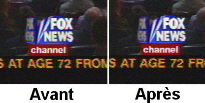
Si vous avez des informations de suppression verticale ou des ondulations qui changent constamment pour chaque image, supprimez-les à l'aide de l'outil masque. Ceci permet d'améliorer les taux de compression.
C'est à peu près tout ce que vous pouvez faire sans détruire plus de données que celles que vous perdrez naturellement lors de la compression. Des techniques plus agressives de "nettoyage" mettent en oeuvre le désentrelacement.
La plupart des sources vidéo sont entrelacées parce qu'il est beaucoup plus cher de construire des caméras et des écrans fonctionnant avec un balayage progressif. De nombreux amateurs ont été déçus, après avoir dépensé 5 mois de salaire dans un caméscope, de découvrir les horribles images déchiquetées qu'il produisait sur un écran d'ordinateur.
Quant aux caméras à balayage progressif, oubliez-les. Les facteurs de coûts font que les caméras à balayage progressif mettront encore longtemps avant d'avoir une résolution équivalente à celle des caméras à balayage entrelacé. L'entrelacement existera probablement encore longtemps. C'est pourquoi il y a un effet de désentrelacement dans Cinelerra.
Nous ne pensons pas qu'il existe d'outil parfait pour l'effet de désentrelacement. Soit ils sont irréversibles, soit ils ne fonctionnent pas. Cinelerra coupe la poire en deux en fournissant des outils de déentrelacement qui sont parfois irréversibles et qui parfois ne fonctionnent pas. Mais ils ne sont jamais l'un, ou l'autre.
Exceptions HDTV
La HDTV 1920x1080 est encodée d'une manière particulière. S'il s'agit de la
diffusion d'un film HDTV original, l'effet de télécinéma inverse fonctionne
bien. S'il s'agit d'un reformatage d'une source 720x480, vous devrez utiliser
un algorithme de base de temps et de doublage des lignes pour la désentrelacer.
Voir la section 1080 vers 540.
La qualité de la vidéo s'améliore de jour en jour. Depuis peu, la meilleure chose que vous puissiez faire pour de la vidéo en provenance d'un caméscope bon marché est de la convertir en une sortie progressive à 24 im/s. Bien que vous ne puissiez pas vraiment faire cela, vous pouvez vous en approcher à moindre coût. Souvenez-vous que cette procédure peut aussi bien dégrader une vidéo de haute qualité qu'améliorer une vidéo de piètre qualité. Cette méthode ne doit être employée que sur des vidéos de basse qualité.
Cette procédure pourrait être implémentée en entier dans un effet non temps-réel, mais le plus gros problème avec cela est que vous voudrez la plupart du temps conserver la sortie basée sur les champs et la fréquence de 24 im/s pour le futur. Un effet qui n'est pas temps réel aurait besoin de faire tout ce traitement uniquement pour la copie à 24 im/s.
Vous avez probablement photographié beaucoup de brume et n'avez sans doute jamais vu un ciel bleu. Même si vous pouvez vous permettre d'aller brièvement dans un endroit où il y a du ciel bleu, les prises de vue de l'horizon pourraient avoir davantage de profondeur. L'effet de dégradé est fait pour ça.
Déposez l'effet de dégradé sur les pistes embrumées. Positionnez les paramètres comme suit :
Il est important de choisir la couleur bleue pour le canal alpha à 0%, même si c'est un canal alpha à 0%. Ce sont les paramètres généralement applicables pour les dégradés. L'orange ou le marron peuvent mieux convenir à certaines scènes pour leur donner une ambiance de soirée.
Voici comment créer une sonnerie pour les Motorola V180 bas de gamme et qui fonctionnera probablement avec n'importe quel téléphone. Allez dans Fichier->Charger des fichiers... et chargez un fichier son avec la stratégie d'insertion Remplacer le projet actuel. Allez dans Configuration->Format et changez Canaux en 1 et Taux d'échantillonnage en 16000 ou 22050.
Mettez en surbrillance la région de la timeline ou définissez les points d'entrée et de sortie à utiliser pour la sonnerie. Pour améliorer la qualité du son sur le téléphone cellulaire, vous devez avoir l'amplitude maximum dans autant de parties du son que possible. Faites un clic droit sur la piste audio 1 et sélectionnez Attacher un effet.... Mettez en surbrillance l'effet de Compresseur et cliquez sur Attacher dans la fenêtre qui apparaît.
Assurez-vous que le point d'insertion ou que la région en surbrillance soit
dans la zone qui comporte l'effet de compresseur. Faires un clic droit sur la
piste audio 2 et sélectionnez Attacher l'effet... Mettez en surbrillance
Audio 1 : Compresseur et cliquez Attacher. Cliquez sur la loupe du
compresseur Audio1 afin d'afficher
l'interface graphique du compresseur.
Définissez les paramètres suivants :
Cliquez sur Effacer pour effacer le graphe. Cliquez n'importe où sur la zone de la grille et glissez le nouveau point pour une sortie à 0 et une entrée à -50. Le graphique devrait se présenter comme ceci.

Aller à Fichier->Rendu. Indiquez le mom d'un fichier mp3 vers lequel
effectuer le rendu. Définissez le format de fichier à Audio MPEG. Cliquez
la clé pour l'Audio et définissez
Niveau à III et Kbits par seconde soit à 24 soit à 32.
Cochez Rendu des pistes audio et décochez Rendu des pistes video.
Cliquez OK pour effectuer le rendu du fichier.
Le fichier `.mp3' résultant doit être chargé sur un serveur Web. Ensuite, le navigateur web du téléphone doit être utiliser pour télécharger le fichier `.mp3' directement depuis l'URL. Il peut aussi y avoir une limite de taille pour le fichier.
Il peut sembler que pour étirer le temps en audio, il suffise de sélectionner une zone des pistes audio, d'activer l'enregistrement pour la piste désirée, d'aller dans Audio->Rendu d'effet, et d'appliquer Etirement du temps. Il y a en fait 3 effets audio pour l'étirement du temps : Etirement du temps, Rééchantillonnage, et le dialogue info de l'objet.
L'étirement du temps applique une transformation de Fourier rapide pour essayer de modifier la durée sans changer la hauteur, mais ceci introduit des artefacts de "fenêtre" à l'audio. Ce n'est utile que pour de grandes modifications du temps car ces artefacts sont alors moins sensibles.
Pour des changements de durée moins importants, de l'ordre de 5%, Rééchantillonner devrait être utilisé. Il change la hauteur de l'audio mais suffisamment peu pour que cela ne soit pas perceptible. Le rééchantillonnage n'introduit pas d'artefact de "fenêtre", c'est donc le plus utile pour de faibles changements de la durée lorsque l'auditeur n'est pas supposé savoir ce qui se passe.
Une autre manière de modifier légèrement la durée est d'aller dans la fenêtre des Ressources et de mettre en surbrillance le dossier des media, de faire un clic droit sur le fichier audio, de cliquer sur Info. Ajustez le taux d'échantillonnage dans le dialogue Info pour ajuster la durée. Cette méthode demande aussi de faire un clic gauche sur la limite droite des pistes audio et de la glisser à gauche ou à droite afin qu'elle corresponde à la modification de longueur.
Nous allons expliquer ici comment enregistrer des captures d'écran et les monter dans Cinelerra.
Vous devez d'abord enregistrer la vidéo à l'aide de xvidcap. Vous pourrez
trouver cet utilitaire dans les dépôts de la plupart des distributions, ou le
télécharger depuis là :
http://xvidcap.sourceforge.net
Faites d'abord une capture d'écran :
xvidcap --fps 10 --cap_geometry 1280x1024+0+0 --file "file1.mpeg"
--gui no --audio no
Ne pas oublier de modifier l'option de géométrie en fonction de la taille de
votre écran. Ensuite, convertissez le fichier `file1.mpeg' obtenu en un
fichier mpeg compatible avec Cinelerra :
ffmpeg -r 10 -i file1.mpeg -s 1280x1024 -b 3000 -aspect 1.33 -r 25
file2.mpeg
Vous pouvez maintenant charger votre fichier dans Cinelerra. Assurez-vous d'avoir défini correctement le format vidéo de votre projet (dimensions, fréquence des images, rapport d'aspect).
Lorsque vous avez terminé le montage de votre vidéo, vous devez en effectuer le rendu. Faites le rendu sous forme d'une séquence jpeg. Il est recommandé d'écrire les fichiers jpeg dans un nouveau dossier car de très nombreux fichiers vont y être créés.
Ensuite, dans une console shell, déplacez-vous dans ce dossier et exécutez les commandes suivantes :
Première passe :
mencoder "mf://*.jpg" -mf fps=25 -oac pcm -sws 2 -vf scale=\ 1280:1024,hqdn3d=2:1:2 -ovc lavc -lavcopts vcodec=mpeg4:\ vbitrate=800:aspect=4/3:vpass=1 -ofps 10 -of avi -o /dev/null \ -ffourcc DIVX
Seconde passe :
mencoder "mf://*.jpg" -mf fps=25 -oac pcm -sws 2 -vf \ scale=1280:1024,hqdn3d=2:1:2 -ovc lavc -lavcopts \ vcodec=mpeg4:vbitrate=800:aspect=4/3:vpass=2 -ofps 10 -of avi \ -o ../rendered_file.avi -ffourcc DIVX
Vous pouvez aussi effectuer le rendu de la vidéo directement en mpeg4 depuis Cinelerra si vous le désirez.
Pour l'instant, GNU/Linux n'est pas un excellent ordinateur de bureau. C'est plutôt un serveur. La plupart de ce que vous trouverez dans les distributions modernes de GNU/Linux sont des programmes sans charme, uniquement pour le réseau et conçus stratégiquement pour contrer une fonctionnalité ou une autre d'un serveur Microsoft, et ils ne se comportent pas très bien dans son interaction avec l'utilisateur. Il y a de nombreux paramètres que les utilisateurs de base peuvent ajuster pour rendre son comportement plus adapté à son utilisation comme ordinateur de bureau.
Sur les systèmes comportant beaucoup de mémoire, Cinelerra tourne parfois mieux sans espace d'échange. Si vous avez 4 Go de mémoire, vous aurez sans doute intérêt à vous passez d'espace d'échange. Si vous n'avez que 512 Mo de mémoire, il vous faudra le conserver. Si vous voulez faire de l'enregistrement, vous devriez le désactiver dans tous les cas. La raison en est que GNU/Linux ne permet d'utiliser que la moitié de la mémoire disponible. Après cela, il commence à chercher des pages à échanger de façon à libérer de la mémoire pour l'utiliser comme cache pour les accès disque. Sur un système avec 4 Go, vous commencez à attendre l'accès à des pages présentes dans l'espace d'échange à partir de 2 Go.
La question est alors de savoir comment faire fonctionner GNU/Linux sans espace
d'échange. Théoriquement, la commande suivante devrait suffire
swapoff -a
Malheureusement, sans espace d'échange, la tâche kswapd tourne en boucle à
100%. Pour éliminer ce problème, éditez `linux/mm/vmscan.c'. Dans ce
fichier, mettez une ligne avec return 0; juste avant :
/*
* Kswapd main loop.
*/
Recompilez alors le noyau.
De façon à améliorer les performances en temps réel, les tampons réservés au son pour tous les pilotes sonores de GNU/Linux sont limités entre 128k et 64k. Pour enregistrer de l'audio et de la vidéo simultanément et pour la plupart des enregistrements audio, ceci provoque des pertes de données ("dropouts"). L'application des patches du noyau preempt et low-latency permettent d'enregistrer plus d'audio mais n'améliorent pas l'enregistrement simultanné de vidéo et d'audio. C'est pour cela qu'il vous faut modifier votre noyau.
Pour voir si les tampons pour l'audio sont suffisants, lancez le programme soundtest inclus avec Cinelerra sans aucune lecture ou enregistrement actifs. Ceci allouera les tampons les plus gros possibles et les affichera. Si Total bytes available est en-dessous de 131 072, vous devrez envisager d'agrandir les tampons dans le pilote. Comme de nombreux pilotes sont différents, nous avons modifié au moins l'un d'entre-eux.
Ceci ne s'applique qu'à la version OSS du pilote Soundblaster Live. Comme chaque carte son et chaque dérivé de pilote son connaît une implémentation différente, il vous faudra faire quelques recherches pour d'autres cartes son. Editez `linux/drivers/sound/emu10k1/audio.c'
Où vous trouvez
if (bufsize >= 0x10000)
modifiez cette ligne de façon à avoir :
if (bufsize > 0x40000)
Où vous trouvez :
for (i = 0; i < 8; i++)
for (j = 0; j < 4; j++)
modifiez cette ligne pour avoir :
for (i = 0; i < 16; i++)
for (j = 0; j < 4; j++)
Dans `linux/drivers/sound/emu10k1/hwaccess.h', modifiez
#define MAXBUFSIZE 65536
en
#define MAXBUFSIZE 262144
Enfin, dans `linux/drivers/sound/emu10k1/cardwi.h', modifiez
#define WAVEIN_MAXBUFSIZE 65536
en
#define WAVEIN_MAXBUFSIZE 262144
Recompilez ensuite les modules du noyau.
Par défaut, le noyau de GNU/Linux n'alloue que 32 Mo de mémoire partagée. Il faut augmenter cette valeur pour pouvoir faire quelques chose d'utile. Lors du lancement de Cinelerra, il est possible que le message d'erreur suivant apparaisse :
The following errors occurred: void MWindow::init_shm0: WARNING:/proc/sys/kernel/shmmax is 0x2000000, which is too low. Before running Cinelerra do the following as root: echo "0x7ffffff">/proc/sys/kernel/shmmax
Pour un changement permanent, ajoutez au fichier `/etc/sysctl.conf' la ligne suivante :
kernel/shmmax=0x7fffffff
La première fois, pour éviter d'avoir à redémarrer votre ordinateur, lancez la commande suivante depuis le compte root :
sysctl -p
Voici une commande très populaire chez les gourous de GNU/Linux, elle n'est pas
appliquée par défaut par toutes les distributions de GNU/Linux
hdparm -c3 -d1 -u1 -k1 /dev/hda
GNU/Linux lance certaines opérations journalières comme la compression des pages de manuel. Ceci peut être acceptable en tâche de fond lorsque vous faites des compilations ou utilisez un traitement de texte mais pas pendant que vous jouez une vidéo. Désactivez ces opérations en éditant `/etc/rc.d/init.d/anacron'.
Mettez exit avant la première ligne qui ne commence pas par
#.
Dans `/etc/rc.d/init.d/crond', mettez exit avant la première
ligne qui ne commence pas par #. Ensuite, redémarrez le système.
Vous ne pouvez alors plus utiliser la commande at, mais qui utilise
encore cette commande ?
Les joueurs aiment avoir des souris de haute résolution, mais ceci peut être
pénible pour placer la souris précisément sur la timeline d'un écran vidéo.
XFree86 vous permettait de diminuer la sensibilité des souris de type PS/2 en
utilisant des commandes telles que xset m 1 1 mais vous n'avez pas
cette chance si vous utilisez une souris USB ou un KVM.
Il y a une manière de réduire la sensibilité de la souris USB mais elle demande d'éditer le code source du noyau. Même si les souris USB sont gérées depuis des années, le code source du noyau pour les souris USB est en perpétuelle réécriture. Les informations qui suivent s'appliquent pour la version 2.6.12.3. Editez `/usr/src/linux/drivers/input/mousedev.c'.
Après la ligne suivante
struct mousedev_hw_data {
mettez
#define DOWNSAMPLE_N 100 #define DOWNSAMPLE_D 350 int x_accum, y_accum;
Ensuite, la section qui ressemble à ceci :
switch (code) {
case REL_X: mousedev->packet.dx += value; break;
case REL_Y: mousedev->packet.dy -= value; break;
case REL_WHEEL: mousedev->packet.dz -= value; break;
}
doit être remplacée par :
switch (code) {
case REL_X:
mousedev->packet.x_accum += value * DOWNSAMPLE_N;
mousedev->packet.dx += (int)mousedev->packet.x_accum
/ (int)DOWNSAMPLE_D;
mousedev->packet.x_accum -=
((int)mousedev->packet.x_accum / (int)DOWNSAMPLE_D)
* (int)DOWNSAMPLE_D;
break;
case REL_Y:
mousedev->packet.y_accum += value * DOWNSAMPLE_N;
mousedev->packet.dy -= (int)mousedev->packet.y_accum
/ (int)DOWNSAMPLE_D;
mousedev->packet.y_accum -=
((int)mousedev->packet.y_accum
/ (int)DOWNSAMPLE_D) * (int)DOWNSAMPLE_D;
break;
case REL_WHEEL: mousedev->packet.dz -= value; break;
}
Modifiez la valeur de DOWNSAMPLE_N pour changer la sensibilité de la souris.
Par défaut, XFree86 ne peut pas afficher très vite le rendu des pixmap avancés de Cinelerra. Le serveur X ne répond plus lors du dessin de la boîte de liste. Vous pouvez corriger ceci en ajoutant une ligne à vos fichiers de configuration XF86Config*.
Dans la zone de la Section Device, ajoutez la ligne :
Option "XaaNoOffscreenPixmaps"
et redémarrez le serveur X.
La mise en veille inopinée de l'écran est vraiment très gênante, à moins que vous ne soyez fabuleusement riche et que vous puissiez vous permettre de laisser votre écran en marche 24 heures par jour sans mode d'économie d'énergie. Dans le fichier `/etc/X11/xinit/xinitrc', mettez
xset s off xset s noblank
avant la première instruction if.
Et ces touches "windows" dont aucune distribution de GNU/Linux ne veut entendre parler. Vous pouvez les utiliser pour fournir la fonction Alt en éditant `/etc/X11/Xmodmap'. Ajoutez-y ce qui suit :
keycode 115 = Hyper_L keycode 116 = Hyper_R add mod4 = Hyper_L add mod5 = Hyper_R
Les modifications complètes pour qu'un gestionnaire de fenêtre reconnaisse les touches "windows" comme une touche ALT sont complexes. Dans FVWM au moins, vous pouvez éditer le fichier `/etc/X11/fvwm/system.fvwm2rc' et y mettre :
Mouse 0 T A move-and-raise-or-raiselower #Mouse 0 W M move Mouse 0 W 4 move Mouse 0 W 5 move Mouse 0 F A resize-or-raiselower Mouse 0 S A resize-or-raiselower
à la place de la section par défaut pour le déplacement et le redimensionnement. Vous obtiendrez de meilleures performances avec FVWM. Les autres gestionnaires de fenêtres semblent ralentir la vidéo avec la gestion d'événements supplémentaires et n'autorisent pas une disposition aussi efficace.
Vous enregistrerez souvent de la vidéo sur une matrice de disque disque
coûteuse, énorme et indépendante de votre disque d'amorçage. Il vous faudra
donc installer vous-même un système de fichiers EXT sur cette matrice de
disques en utilisant la commande mke2fs. Le système de fichiers le
plus rapide, et de loin, est obtenu de la manière suivante
mke2fs -i 65536 -b 4096 my_device
tune2fs -r0 -c10000 my_device
Il ne comporte pas de journalisation, réserve aussi peu de blocs que possible
pour les noms de fichiers et permet l'accès à la taille de données par bloc la
plus grande possible. Un autre système de fichiers légèrement plus lent, mais
qui est plus facile à récupérer après une coupure d'alimentation électrique est
constitué de la manière suivante
mke2fs -j -i 65536 -b 4096 my_device
tune2fs -r0 -c10000 my_device
Ceci ajoute un journal qui ralentit les écritures mais qui permet de raccourcir notablement le temps que met fsck à remettre en état une partition lorsqu'elle n'a pas été correctement démontée.
La vidéo enregistrée à partie des entrées ZORAN est normalement non alignée, ou pas complètement encodée sur la droite. Ceci peut être légèrement amélioré en ajustant des paramètres dans le code source du pilote.
Dans `/usr/src/linux/drivers/media/video/zr36067.c', la structure définie près de la ligne 623 affecte l'alignement. Au moins en NTSC, la version 2.4.20 du pilote peut être améliorée en modifiant
static struct tvnorm f60ccir601 = { 858, 720, 57, 788, 525, 480, 16 };
en
static struct tvnorm f60ccir601 = { 858, 720, 57, 788, 525, 480, 17 };
Dans `/usr/src/linux/drivers/media/video/bt819.c' d'autres structures près
de la ligne 76 affectent l'alignement et l'encodage.
En NTSC
{858 - 24, 2, 523, 1, 0x00f8, 0x0000},
pourrait être changé en
{868 - 24, 2, 523, 1, 0x00f8, 0x0000},
En ajustant ces paramètres, vous pouvez ou pas, déplacer votre image plus près du centre. La plupart du temps, ils planteront le pilote juste avant la capture de la première image.
Nouveau en 2.6.5 :
Avec les noyaux 2.6, le sous-système vidéo a été de nouveau réécrit
complètement . Pour ajuster les paramètres Zoran, allez dans le fichier
`drivers/media/video/zoran_card.c' et recherchez un groupe de lignes
ressemblant à
static struct tvnorm f50sqpixel = { 944, 768, 83, 880, 625, 576, 16 };
static struct tvnorm f60sqpixel = { 780, 640, 51, 716, 525, 480, 12 };
static struct tvnorm f50ccir601 = { 864, 720, 75, 804, 625, 576, 18 };
static struct tvnorm f60ccir601 = { 858, 720, 57, 788, 525, 480, 16 };
static struct tvnorm f50ccir601_lml33 = { 864, 720, 75+34, 804, 625, 576, 18 };
static struct tvnorm f60ccir601_lml33 = { 858, 720, 57+34, 788, 525, 480, 16 };
/* The DC10 (57/16/50) uses VActive as HSync, so HStart must be 0 */
static struct tvnorm f50sqpixel_dc10 = { 944, 768, 0, 880, 625, 576, 0 };
static struct tvnorm f60sqpixel_dc10 = { 780, 640, 0, 716, 525, 480, 12 };
/* FIXME: I cannot swap U and V in saa7114, so i do one
* pixel left shift in zoran (75 -> 74)
* (Maxim Yevtyushkin <max@@linuxmedialabs.com>) */
static struct tvnorm f50ccir601_lm33r10 = { 864, 720, 74+54, 804, 625, 576, 18 };
static struct tvnorm f60ccir601_lm33r10 = { 858, 720, 56+54, 788, 525, 480, 16 };
Elles semblent contrôler la position de l'image. Au moins pour le LML33, la définition suivante pour f60ccir601_lml33 le fait.
static struct tvnorm f60ccir601_lml33 = { 858, 720, 67+34, 788, 525, 480, 13 };
| 20.10.1 Traductions disponibles | ||
| 20.10.2 Mettre à jour une traduction existante | ||
| 20.10.3 Créer une nouvelle traduction |
Les informations suivantes sont nécessaires si vous désirez participer à la traduction de Cinelerra. Voir la section Variables d'environnement, pour faire lancer Cinelerra dans votre langue.
Il existe un certain nombre de traductions disponibles pour Cinelerra :
Pour créer un fichier `*.po' à jour avec les nouvelles chaînes du code
source de Cinelerra qui ne se trouvent pas encore dans le fichier `.po'
lancez après ./configure :
cd po && make
Editez ensuite le fichier `.po' qui se trouve dans le répertoire `po/' de la langue qui vous intéresse et envoyez le fichier diff à l'équipe de Cinelerra-CV.
Pour créer une nouvelle traduction, lancez après la commande
./configure :
cd po && make
Ensuite, éditez le fichier `cinelerra.pot' qui se trouve dans `po/' et ajoutez les chaînes traduites. Renommez le fichier en `(prefixe_de_langue).po' et ajoutez le prefixe de la langue dans le fichier `po/LINGUAS'. Enfin, soumettez le diff à l'équipe de Cinelerra-CV.
NDT : la commande intltool-update fr lancée depuis le répertoire
`po/' permet de mettre à jour le fichier `fr.po' existant. Il suffit
alors de l'éditer pour mettre à jour la traduction.
La puissance des fonctionnalités des images-clés de Cinelerra vous permet des effets élaborés de panoramique et de zoom dans une image fixe.
Vous pouvez voir que la caméra se déplace de manière fluide d'image-clé en image-clé, Cinelerra ajuste automatiquement le mouvement de caméra selon des lignes droites d'un point à un autre.
Travailler avec des fichiers haute définition, qui proviennent de camescopes HDV, nécessite beaucoup de puissance de calcul. Même si un système est en mesure de jouer une seule piste en temps-réel, il n'est pas forcément capable de jouer plusieurs pistes simultannément. Ainsi, un simple effet de fondu enchaîné s'en trouve si ralentie que cela devient innacceptable. De plus, le HDV est un format reposant sur les GOP, et donc une simple coupure à un endroit nécessite le décodage du GOP entier en moins d'1/25ième de seconde. Une solution consiste à réaliser l'édition sur des fichiers en basse résolution, et d'utiliser la vidéo HDV seulement pour le calcul final. La méthode expliquée çi-dessous a été initialement proposée par Hermann VOSSELER.
Il n'existe actuellement pas de version parfaite. Une possibilité est
d'exécuter la commande test-mpeg2 qui est disponible avec les sources
de libiec61883.
Utiliser cette syntaxe :
test-mpeg2 > hdv_tape.mpeg
et pressez Play sur le camescope. Vous ne devriez pas exécuter de tâche
fortement consommatrice de ressources sur l'ordinateur pendant la récupération
de la vidéo, puisque l'absence d'utilisation de cache par test-mpeg2 peut
causer des sauts d'images.
Utilisez des fichiers WAV pour le son, et chargez les fichiers HDV MPEG-2 via
leur fichier toc généré. Pour générer les fichiers toc, utilisez cette
commande :
for i in *.mpeg; do mpeg3toc $i `basename $i mpeg`toc; done
Les fichiers proxy peuvent être convertis en utilisant plusieurs méthodes.
Cependant, Cinelerra fonctionne mieux lors de l'édition de fichiers n'utilisant
pas de GOP. Pour convertir vos fichiers HDV en fichiers à l'échelle 0.5, au
format MJPEG avec des I-frames, utilisez la commande suivante :
for i in *.mpeg;do mencoder -mc 0 -noskip $i -ovc lavc -lavcopts
vcodec=mjpeg -vf scale=720:540 -oac pcm -o `basename $i mpeg`avi; done
Le script python proxychange.py réalise la conversion entre les projets HDV
et proxy. Vous pouvez télécharger ce script ici :
http://cinelerra-cv.org/docs/proxychange.py
Ce script écrase les projets existants, et copie le fichier original dans `projectfile.xml.bak'.
./proxychange.py projectfile.xml -from `proxyfiles/(\w+)\.avi` -to
`hdv/\1.toc` -scale 0.5
./proxychange.py projectfile.xml -from `hdv/(\w+)\.toc` -to
`proxyfiles/\1.avi` -scale 2.0
Le fichier XML du projet n'est pas un fichier XML parfaitement valide. En conséquence de quoi, après chaque opération de sauvegarde sous Cinelerra, quelques problèmes peuvent apparaître. Parfois les balises ne sont pas fermées, <TAG> n'est pas suivi de </TAG>. Ceci peut être corrigé manuellement.
ACODEC contient quelques caractères \001. Editez le fichier manuellement ou
utilisez la commande suivante :
cat temp001.xml| tr -d `\001` > /tmp/1 ; mv /tmp/1 temp001.xml
Les fichiers HDV peuvent être calculés et rendus dans un flux YUV4MPEG et alors
encodées en MPEG2 en utilisant une version modifiée du binaire de Mjpegtools.
mpeg2enc -verbose 0 -aspect 3 -format 3 -frame-rate 3 -video-bitrate
25000 -nonvideo-bitrate 384 -force-b-b-p -video-buffer 448 -video-norm n
-keep-hf -no-constraints -sequence-header-every-gop -min-gop-size 6
-max-gop-size 6 -o %
Réalisez le rendu du son dans un fichier AC3, et multiplexez le tout avec mplex.
Lors de la lecture de fichiers MJPEG, l'effet de fondu enchaîné peut ne pas fonctionner correctement dans les modes RGBA ou YUVA, mais fonctionne bien dans les modes RGB ou YUV.
Il existe deux méthodes pour ajouter des sous-titres dans une vidéo :
La seconde méthode est celle à utiliser si vous voulez que votre vidéo soit disponible avec des sous-titres en différentes langues. Si vous voulez réaliser un DVD, cette méthode est la seule qui est compatible avec les fonctions de sous-titres de dvdauthor. Si vous prévoyiez de distribuer votre vidéo sur internet, un seul fichier vidéo et plusieurs fichiers de sous-titres prend moins de place que plusieurs vidéos, à raison d'une pour chaque langue.
Les fichiers de sous-titres peuvent être affichés avec n'importe quel lecteur
vidéo digne de ce nom. Avec mplayer, vous pouvez utiliser la syntaxe
suivante :
mplayer -sub <fichier_de_sous_titres> <fichier_video>
Un fichier de sous-titres est un simple fichier texte, qui contient le texte et l'indication de temps ou bien le numéro d'image où chaque sous-titre doit être affiché à l'écran.
Il y a plusieurs éditeurs de sous-titres disponibles sous LInux. Cependant, la majorité conviennent à la traduction de sous-titres, et ne sont pas appropriés pour vraiment créer et synchroniser de nouveaux sous-titres sur une vidéo. Puisque la création de vidéos est ce qui nous intéresse, la tâche qui retient le plus notre attention est celle de l'ajout de sous-titres sur une vidéo.
Nous vous recommandons vivement Subtitleeditor, qui est disponible ici
:
http://kitone.free.fr/subtitleeditor
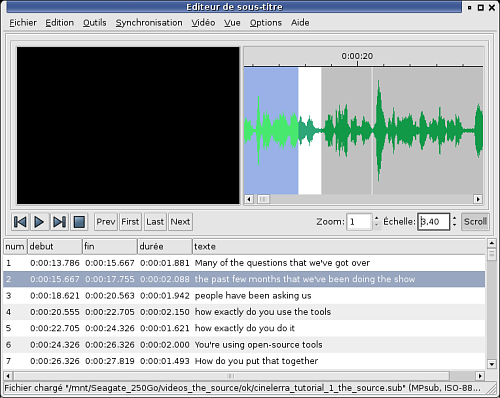
Subtitleeditor
Subtitleeditor a l'immense avantage d'afficher l'audio sous forme d'ondes
sonores. Cette fonctionnalité est vraiment importante pour synchroniser
précisément les sous-titres et les paroles. Gardez à l'esprit que la
synchronisation sera perdue si vous éditez votre vidéo après avoir ajouté les
sous-titres. L'ajout des sous-titres doit s'effectuer après l'édition de la
vidéo.
Une fois que le fichier de sous-titres a été créé, vous pouvez :
mencoder -sub <your_subtitle_file> <video_file_without_subtitles> -ovc lavc
-lavcopts vcodec=mpeg4:vhq:vbitrate=1000 -oac mp3lame -lameopts br=256:vol=1
-ffourcc DIVX -o <converted_video.avi>
Si vous remarquez un bogue, la première chose à faire est d'aller sur http://bugs.cinelerra.org pour vérifier s'il n'a pas déjà été signalé. S'il n'existe pas de signalement de bogue correspondant, vous pouvez renseigner un signalement de bogue. Créez un compte sur http://bugs.cinelerra.org si vous n'en avez pas déjà un. Ensuite, remplissez le rapport de bogue, en y incluant les informations suivantes :
gdb cinelerrarunthread apply all btNe pas hésiter à joindre tous les fichiers que vous jugerez utiles, tels que des captures d'écran par exemple. La sortie de gdb est plus utile lorsque Cinelerra est compilé avec les symboles de débogage. Voir la section Compiler avec les symboles de débogage, pour les instructions de compilation correspondantes.
De plus, si le bogue que vous avez trouvé concerne un problème de chargement d'un fichier particulier dans Cinelerra-CV, mettre à disposition un petit exemple d'un tel fichier sur internet sera apprécié. Ceci permettra aux personnes qui corrigent les bogues de charger elles-mêmes ce fichier dans Cinelerra pour voir ce qui se produit.
Si la lecture des pistes audio ne s'arrête pas sur la timeline et continue après la fin de la vidéo, allez dans Préférences->Lecture et cliquez sur Stop playback locks up. Ce bouton ne sera affiché que si vous avez défini ALSA en tant que pilote audio.
Tout d'abord, on accède aux cartes d'acquisition Zoran en utilisant le pilote vidéo Buz depuis Préférences->Enregistrement et Préférences->Lecture. Quelques réglages de configuration sont disponibles dans une autre section, Voir la section Améliorer les performances..
Une fois réglé, le pilote Buz semble planter si le nombre de tampons d'enregistrement est trop important. Assurez-vous que la valeur dans Préférence->Enregistrement->Images à mettre en tampon sur le périphérique est inférieure à 10.
Parfois il y a deux plans trop proches l'un de l'autre. Le plan sélectionné pour le glisser peut se trouver sur un plan trop proche d'un plan qui se trouve invisible dans le facteur de zoom actuel. Effectuez un zoom horizontal.
Si vous pensez que vous ne pouvez pas déplacer toutes les éditions débutant au même endroit sur des pistes armées, zoomez horizontalement pour vérifier qu'elles commencent effectivement bien au même endroit. Parfois la synchronisation verticale des éditions peut être perdue car vous n'avez pas correctement défini les attributs du projet (PAL/NTSC). Vérifiez cela dans Configuration->Format...
Souvent, lorsqu'un blocage se produit lors du chargement d'un fichier, cela est dû au fait que le codec de ce fichier n'est pas supporté. Une autre raison possible est que Cinelerra est en train de construire les vignettes des images pour la fenêtre des ressources. Il lui faut en effet décompresser un grand nombre d'images pour constituer ces vignettes. Aller à Configuration->Préférences->Interface et désactivez Utiliser les vignettes dans la fenêtre des ressources afin de sauter cette étape de traitement, si cela pose problème.
Si la fréquence des images de l'enregistrement est bien plus faible que la fréquence des images de la source, au cours du temps, la vidéo va s'accumuler dans les tampons d'enregistrement et l'audio et la vidéo ne seront plus synchronisées. Diminuez le nombre d'images à mettre en tampon dans le périphérique depuis Préférence->Acquisition pour que les images en excès soient sautées plutôt que mises en tampon.
L'effet gamma utilise la fonction pow alors que l'effet de flou utilise un certain nombre de fonctions exp de la bibliothèque mathématique. Pour certaines raisons, l'utilisation de la fonction pow casse le fonctionnement ultérieur des fonctions exp de la bibliothèque mathématique. Vous devrez appliquer le gamma après le flou pour qu'il puisse fonctionner.
Si vous utilisez l'application KDE Klipper, il vous faut soit la désactiver, soit faire un clic dans l'icône de sa barre de tâches, sélectionner Configurer Klipper et vous assurer que Eviter que le presse-papier ne soit vide n'est pas sélectionné.
Effectuez une installation propre. Assurez-vous de ne pas avoir de
bibliothèque provenant d'une installation antérieure. Supprimez aussi votre
répertoire `$HOME/.bcast/'.
rm -f /usr/local/lib/libguicast*
rm -f /usr/lib/libguicast*
rm -f /usr/local/lib/libquicktimehv*
rm -f /usr/lib/libquicktimehv*
rm -f /usr/local/lib/libmpeg3hv*
rm -f /usr/lib/libmpeg3hv*
Si le message suivant est affiché : Aborted, MWindow::init_theme:
Theme Blond not found, alors :
L'API de création des greffons de Cinelerra date de 1997, avant que LADSPA et avant que VST ne deviennent populaires. Il est resté identique à ce qu'il était en 1997, avec des modifications mineures pour manipuler les images-clés et les informations reçues en retour de l'interface graphique. Malheureusement, l'interface graphique ne contient pas de niveau d'abstraction accessible au programmeur. Ceci permet au programmeur d'utiliser la boîte à outils ("toolkit") qu'il désire et permet davantage de flexibilité en apparence mais demande plus d'efforts.
Il y a différents types de greffons, chacun comporte une procédure d'implémentation commune avec des modifications spécifiques à son type particulier. La manière la plus simple pour implémenter un greffon est de prendre le plus simple de son groupe et d'en renommer les symboles.
| 22.1 Introduction à la méthode PULL | le paradigme actuel de l'écriture des greffons. | |
| 22.2 Fonctions communes aux greffons | ce que tous les effets doivent faire. | |
| 22.3 Greffons en temps réel | ce que doivent faire les effets en temps réel. | |
| 22.4 Greffons qui ne sont pas en temps réel | ce que doivent faire les effets rendus. | |
| 22.5 Greffons audio | ce que doivent faire les effets audio. | |
| 22.6 Greffons vidéo | ce que doivent faire les effets vidéo. | |
| 22.7 Greffons de transitions | ce que les transitions doivent faire. | |
| 22.8 Greffons dont l'interfaces utilisateur se met à jour lors de la lecture | comment utiliser les données en cours de lecture pour dessiner une interface graphique utilisateur. | |
| 22.9 Requêtes des greffons | comment les greffons obtiennent des informations concernant les informations devant être traitées. | |
| 22.10 Utiliser OpenGL | comment utiliser le matériel pour accélérer les opérations. |
La manière la plus simple de concevoir des greffons est la méthode "pousser" ("push"). La méthode "pousser" est intuitive. Une source pousse des données dans le greffon, le greffon effectue des opérations mathématiques sur ces données et le greffon les pousse vers leur destination. Pendant 6 ans, ceci a été la manière dont les greffons étaient gérés de manière interne, mais cela ne permettait pas de réduire le débit des données en temps réel. Bien que les greffons continuent à être écrits comme s'ils poussaient les données, ce n'est plus de cette manière que le traitement interne est fait dorénavant.
La dernière évolution dans la conception des greffons de Cinelerra est la méthode "tirer" ("pull"). Le pipeline de rendu commence par la fin, et les dernières étapes dans le pipeline de rendu demandent des informations aux étapes qui les précèdent. Lorsque le pipeline demande ensuite des données à une chaîne de greffons, chaque greffon va demander des données au greffon qui le précède.
C'est moins intuitif mais plus puissant que la méthode "pousser". Les greffons en temps réel écrits pour utiliser la méthode "tirer" peuvent non seulement modifier le débit auquel les données sont présentées à la visionneuse mais aussi le sens de la lecture. La méthode "tirer" permet aux greffons de prendre les données à un débit supérieur à celui auquel ils les envoient.
Pour tirer toute la puissance de l'indépendance du débit, il est nécessaire, dans la méthode "tirer", que le greffon connaisse davantage de choses concernant les données que ce qui est nécessaire avec la méthode "pousser". Les greffons doivent connaître le débit du projet et à quel débit se fait leur demande de sortie. Ces deux débits de données doivent être interchangés pour permettre la configuration correcte d'un greffon.
Les images-clés d'un greffon sont enregistrées relativement à la fréquence d'images du projet. Les requêtes de position actuelle de la lecture sont relatives à la fréquence des images du projet. Il est inutile que le greffon demande des données à deux fois la fréquence d'images du projet car les images-clés ne correspondront pas aux bonnes positions des données. Deux classes de données ont été créées pour répondre à ce problème.
Les conversions de débit sont faites en termes de débit de projet et de débit demandé. Le débit du projet est identique pour tous les greffons. Il est déterminé dans la fenêtre Configuration->Format.... Le débit demandé est déterminé par le greffon situé plus bas dans le flux qui demande des données au greffon en cours. Il est arbitraire. Vous trouverez plus loin une explication exacte sur la manière d'utiliser ces débits.
Tous les greffons héritent d'un dérivé de PluginClient. Ce dérivé de PluginClient implémente la plupart des méthodes requises dans PluginClient, mais les utilisateurs doivent quand même définir des méthodes pour PluginClient. les méthodes les plus couramment utilisées sont prédéfinies sous forme de macros pour simplifier la saisie tout en conservant le maximum de flexibilité.
Les fichiers qu'ils incluent dépendent du type de greffon. Les greffons audio incluent `pluginaclient.h' et les greffons vidéo incluent `pluginvclient.h'. Ils héritent respectivement de PluginAClient et de PluginVClient.
Cinelerra crée au moins deux instances de tous les greffons lorsqu'ils sont utilisés dans un film. Une instance est réservée à l'interface utilisateur graphique. L'autre instance est réservée au traitement du signal. L'entrée utilisateur, à travers une séquence compliquée, est propagée depuis l'instance de l'interface graphique à l'instance de traitement du signal. Si le traitement du signal a besoin de modifier l'interface graphique, il propage les données en retour vers l'instance de l'interface. Il y a des fonctions utilitaires pour effectuer tout ça.
Les greffons définissent au moins trois objets :
| 22.2.1 L'objet de traitement | ||
| 22.2.2 L'objet de configuration | ||
| 22.2.3 L'objet d'interface utilisateur |
Chargez un greffon simple tel que le gain pour voir à quoi ressemble cet objet. L'objet de traitement doit hériter du dérivé prévu de PluginClient. Son constructeur doit avoir un paramètre PluginServer.
MyPlugin(PluginServer *server);
Dans l'implémentation, le greffon doit comporter une ligne d'enregistrement avec le nom de l'objet traitement telle que
REGISTER_PLUGIN(MyPlugin)
Le constructeur doit contenir
PLUGIN_CONSTRUCTOR_MACRO
pour initialiser les variables les plus courantes.
L'objet traitement doit avoir un destructeur comportant
PLUGIN_DESTRUCTOR_MACRO
pour supprimer les variables les plus courantes.
Une autre fonction utile mais non nécessaire est
int is_multichannel();
Elle doit retourner 1 si une instance du greffon gère simultanément plusieurs pistes et 0 si une instance du greffon ne gère qu'une piste. Si cette valeur est omise, elle est de 0 par défaut.
Les greffons multicanal doivent, dans leur fonction de traitement, se référer à une fonction appelée PluginClient::get_total_buffers()#pour déterminer le nombre de canaux.
Pour simplifier l'implémentation des greffons en temps réel, une macro pour les membres habituellement utilisés a été créée pour les en-têtes de classes. Elle prend comme paramètres l'objet de configuration et le processus objet de l'interface utilisateur. Les définitions de macros s'adressent principalement aux greffons en temps réel et ne sont pas utiles pour les greffons qui ne sont pas en temps réel. Heureusement, les greffons qui ne sont pas en temps réel sont plus simples.
PLUGIN_CLASS_MEMBERS(config_name, thread_name)
Les membres de PLUGIN_CLASS_MEMBERS couramment utilisés sont décrits ci-dessous.
int load_configuration();
Charge la configuration en se basant sur les images-clés qui se trouvent à
proximité et sur la position actuelle. La définition de classe pour
load_configuration doit contenir
LOAD_CONFIGURATION_MACRO(plugin_class, config_class)
pour implémenter le comportement par défaut de load_configuration. Ceci
enregistre dans l'objet de configuration du greffon ce qui se trouve dans la
configuration actuelle, et retourne 1 si la nouvelle configuration est
différente de la précédente. La valeur de retour de load_configuration est
utilisée par une autre fonction couramment utilisée, update_gui pour déterminer
si l'interface graphique a vraiment besoin d'être mise à jour.
L'objet de configuration du greffon est toujours appelé config dans
PLUGIN_CLASS_MEMBERS.
VFrame* new_picon();
Crée une vignette à afficher dans la fenêtre des ressources. Utilisez
#include "picon_png.h" NEW_PICON_MACRO(plugin_class)
pour implémenter une nouvelle vignette. De plus, l'utilisateur doit créer le
fichier d'en-tête `picon_png.h' à partir d'une image PNG en utilisant
pngtoh. pngtoh est construit dans le répertoire
`guicast/ARCH'.
L'image PNG source doit s'appeler `picon.png' et peut être de n'importe
quel format géré par PNG.
char* plugin_title();
Retourne une chaîne de texte identifiant le greffon dans la fenêtre des
ressources. Cette chaîne doit être unique.
void update_gui();
Doit d'abord charger la configuration, teste un code de retour égal à 1 et
redessine ensuite l'interface graphique avec les nouveaux paramètres. Tous les
greffons qui utilisent GuiCast ont un format semblable à
void MyPlugin::update_gui()
{
if(thread)
{
if(load_configuration())
{
thread->window->lock_window();
// update widgets here
thread->window->unlock_window();
}
}
}
pour gérer les accès concurrents et les conditions dans lesquelles il n'y a pas d'interface graphique.
int show_gui();
Instancie l'interface graphique et bascule le greffon en mode interface
graphique ("GUI mode"). C'est implémenté par
SHOW_GUI_MACRO(plugin_class, thread_class)
int set_string();
Change le titre de la fenêtre de l'interface graphique en utilisant une
certaine chaîne de caractères. C'est implémenté par
SET_STRING_MACRO(plugin_class)
void raise_window();
Affiche la fenêtre de l'interface graphique sur le dessus de la pile. C'est
implémenté par
RAISE_WINDOW_MACRO(plugin_class)
Des fonctions importantes que doit définir l'objet de traitement sont les fonctions qui chargent et enregistrent les données de configuration depuis les images-clés. Ces fonctions sont appelées par les macros, et vous n'avez donc pas à vous préoccuper de l'accès aux données des images-clés.
void save_data(KeyFrame *keyframe); void read_data(KeyFrame *keyframe);
Les fonctions read_data sont utilisées dans les greffons en temps réel. Les fonctions data_functions convertissent la configuration du greffon depuis le paramètre KeyFrame vers l'objet de configuration du greffon. Les images-clés sont enregistrées sur la timeline et peuvent changer pour chaque projet.
Utilisez un objet appelé FileXML pour effectuer la translation et certaines commandes spécifiques pour obtenir les données à partir du paramètre KeyFrame. Vous trouverez des exemples d'utilisation de KeyFrame et de FileXML dans les greffons existants.
int load_defaults(); int save_defaults();
Les fonctions load_defaults sont utilisées dans les greffons en temps réel et les greffons qui ne sont pas en temps réel. Les fonctions load_defaults convertissent la configuration du greffon entre un objet BC_Hash et la configuration du greffon. L'objet BC_Hash enregistre les configurations dans des fichiers individuels sur disque pour chacun des greffons, mais il n'isole pas les configurations entre les différents projets.
La fonction qui surcharge load_defaults doit aussi créer l'objet BC_Hash. Vous pouvez consulter un greffon existant pour des exemples d'utilisation de BC_Hash.
D'autres objets standards peuvent être définis dans l'objet de traitement, ils dépendent du type de greffon.
L'objet de configuration est critique pour les mises à jour de l'interface graphique, le traitement du signal, et les paramètres par défaut dans les greffons en temps-réel. Remarquez qu'il n'est pas utilisé dans les greffons qui ne sont pas temps réel. L'objet de configuration n'hérite de rien et n'a pas de dépendances. Il est constitué simplement d'une classe contenant trois fonctions et les variables spécifiques aux paramètres du greffon.
Habituellement, l'objet de configuration commence par le nom du greffon suivi de Config.
class MyPluginConfig
{
public:
MyPluginConfig();
Après le nom de la classe de configuration, nous trouvons les trois fonctions requises et les variables de configuration.
int equivalent(MyPluginConfig &that);
void copy_from(MyPluginConfig &that);
void interpolate(MyPluginConfig &prev,
MyPluginConfig &next,
int64_t prev_position,
int64_t next_position,
int64_t current_position);
float parameter1;
float parameter2;
int parameter3;
};
Maintenant il faut définir les trois fonctions. Equivalent est appelée par
LOAD_CONFIGURATION_MACRO pour déterminer si les paramètres de la configuration
locale sont identiques aux paramètres de la configuration de l'argument. Si
equivalent retourne 0, load_configuration permet de redessiner l'interface
graphique. Si equivalent retourne 1, l'interface graphique n'est pas
redessinée.
Ensuite, il y a copy_from qui transfère les valeurs de configuration depuis
le paramètre vers les variables locales. C'est de nouveau utilisé dans
LOAD_CONFIGURATION_MACRO pour enregistrer les configurations dans des espaces
temporaires. Une fois que LOAD_CONFIGURATION_MACRO a répliqué la
configuration, elle charge une seconde configuration. Elle interpole ensuite
les deux configurations pour obtenir la configuration actuelle. Les fonctions
d'interpolation réalisent l'interpolation et enregistrent les résultats dans
les variables locales.
Normalement, la fonction d'interpolation calcule une fraction précédente et une fraction suivante en utilisant les paramètres.
void MyPluginConfig::interpolate(MyPluginConfig &prev,
MyPluginConfig &next,
int64_t prev_position,
int64_t next_position,
int64_t current_position
{
double next_scale =
(double)(current_position - prev_position)
/ (next_position - prev_position);
double prev_scale =
(double)(next_position - current_position) /
(next_position - prev_position);
Ensuite, les fractions sont appliquées à l'objet de configuration précédent et suivant pour obtenir les valeurs actuelles.
this->parameter1 =
(float)(prev.parameter1 * prev_scale
+ next.parameter1 * next_scale);
this->parameter2 =
(float)(prev.parameter2 * prev_scale
+ next.parameter2 * next_scale);
this->parameter3 =
(int)(prev.parameter3 * prev_scale
+ next.parameter3 * next_scale);
}
Vous pouvez aussi copier les valeurs depuis le paramètre de configuration précédent si vous ne souhaitez pas d'interpolation.
Cette utilisation est identique pour les greffons audio ou vidéo. Lors de la lecture vidéo, la fonction d'interpolation est appelée à chaque image, ce qui permet d'obtenir une interpolation lissée. Lors de la lecture audio, la fonction d'interpolation est appelée pour chaque fragment de console et une fois chaque fois que le point d'insertion se déplace. C'est suffisant pour effectuer la mise à jour de l'interface graphique lorsqu'on sélectionne des régions sur la timeline, mais ce n'est pas assez précis pour un rendu réellement fluide de l'effet.
Pour des rendus réellement fluides de l'audio, vous pouvez continuer à utiliser load_configuration pour la mise à jour de l'interface graphique. Cependant, pour le traitement en temps réel, oubliez load_configuration et écrivez votre propre routine d'interpolation qui chargera toutes les images-clés d'un fragment de console et interpolera chaque échantillon. Ceci sera vraiment très lent et difficile à mettre au point, pouvant conduire à des améliorations qui ne seront même pas audibles.
Une manière plus simple de rendre l'interpolation plus fine est de réduire la taille des fragments de console à 1 échantillon. Ceci devra être rendu et reproduit avec un fragment de console qui soit de nouveau de l'ordre de 2048, bien entendu. Le pilote audio de GNU/Linux ne sait pas lire des fragments de durée réduite à 1 échantillon.
L'objet d'interface utilisateur enfin, consiste en un pointeur vers une fenêtre et des pointeurs vers tous les éléments graphiques de la fenêtre. En utilisant la boîte à outil de Cinelerra, il consiste en un dérivé de BCWindow et un dérivé de Thread. Le dérivé de Thread est déclaré dans l'en-tête du greffon en utilisant
PLUGIN_THREAD_HEADER(plugin_class, thread_class, window_class)
Il est ensuite défini par
PLUGIN_THREAD_OBJECT(plugin_class, thread_class, window_class)
Ceci, en combinaison avec la macro SHOW_GUI, effectue tout le travail d'instanciation de la fenêtre. Ce système de deux classes est utilisé dans les greffons en temps réel mais pas dans les greffons qui ne sont pas en temps réel. Les greffons qui ne sont pas en temps réel créent et détruisent leur interface graphique dans leur fonction get_parameters et il n'y a pas besoin de Thread.
Maintenant, la classe de la fenêtre doit être déclarée dans l'en-tête du greffon. Le plus facile pour implémenter la fenêtre est de copier un greffon existant et d'en renommer les symboles. Ce qui suit est un aperçu de ce qui se passe. L'en-tête du greffon doit déclarer le constructeur de la fenêtre en utilisant les paramètres appropriés.
#include "guicast.h"
class MyPluginWindow : public BC_Window
{
public:
MyPluginWindow(MyPluginMain *plugin, int x, int y);
Ceci apparaît sous la forme d'une fenêtre sur l'écran placée en x et y.
Il a besoin de deux méthodes
int create_objects(); int close_event();
et un pointeur arrière vers le greffon
MyPlugin *plugin;
La définition du constructeur doit comporter des extents et des flags pour que la fenêtre soit cachée lorsqu'elle vient d'être créée. Le membre de l'objet créé place les objets graphiques dans la fenêtre selon la syntaxe de GuiCast. Un pointeur vers chaque élément graphique que vous désirez synchroniser à un paramètre de configuration est enregistré dans la classe de la fenêtre. Ils sont mis à jour dans la fonction update_gui que vous avez précédemment défini dans le greffon. Les éléments graphiques sont habituellement des dérivés d'un élément graphique GuiCast et ils surchargent des fonctions dans GuiCast afin de gérer des événements. Enfin, créez les appels aux objets
show_window(); flush();
afin que la fenêtre soit dessinée en une seule fois.
Le membre close_event doit être implémenté en utilisant
WINDOW_CLOSE_EVENT(window_class)
Chaque élément graphique de l'interface doit détecter quand sa valeur est modifiée. Dans GuiCast, la méthode handle_event est appelée quand une valeur change. Dans handle_event, l'élément graphique doit appeler plugin->send_configure_change() pour propager les changements à toutes les copies du greffon qui traitent des données.
Les greffons en temps réel doivent utiliser la classe PLUGIN_CLASS_MEMBERS pour définir le jeu de base des membres dans leurs en-têtes. Tous les greffons en temps réel doivent définir un membre
int is_realtime()
qui retourne 1. Ceci entraîne l'appel d'un certain nombre de méthodes lors de la lecture "live" et permet au greffon d'être utilisable sur la timeline.
Les greffons en temps réel doivent surcharger un membre appelé process_buffer
Cette fonction prend différents paramètres selon que le greffon gère de l'audio ou de la vidéo. Le mieux est d'examiner comment est réalisé un greffon existant pour voir comment cela est appliqué.
La fonctionnalité principale de la fonction process_buffer est de fournir un tampon où placer la sortie, de définir la position de départ pour la sortie et de définir le débit requis en sortie. Pour de l'audio, il y a aussi un paramètre qui définit le nombre d'échantillons.
La position de départ dans le tampon de sortie est l'échantillon de rang le moins élevé sur la timeline si la lecture a lieu vers l'avant et l'échantillon de rang le plus élevé si la lecture a lieu en arrière. Le sens de la lecture est déterminé par une des requêtes du greffon, décrite ci-dessous.
Les paramètres de dimensions et de position sont tous relatifs à la fréquence des images et au taux d'échantillonnage passés à process_buffer. C'est le débit des données requis et il peut être différent du débit du projet.
La fonction process_realtime doit commencer par l'appel de load_configuration. LOAD_CONFIGURATION_MACRO retourne 1 si la configuration a été modifiée.
Après avoir déterminé la configuration du greffon, le média d'entrée doit être chargé pour le traitement. Appelez :
read_frame(VFrame *buffer,
int channel,
int64_t start_position,
double frame_rate)
ou
read_samples(double *buffer,
int channel,
int sample_rate,
int64_t start_position,
int64_t len)
pour demander des données d'entrée à l'objet qui vient juste avant ce greffon. La fonction read a besoin d'un tampon pour y enregistrer les données d'entrée. Il peut être créé de manière temporaire dans le greffon, le tampon de sortie fourni à process_buffer peut aussi être utilisé si vous n'avez pas besoin de tampon temporaire.
Il a aussi besoin d'un ensemble de paramètres de position pour déterminer quand vous désirez lire les données. La position de départ, le débit et la longueur passés à une fonction read n'ont pas besoin d'être les mêmes que les valeurs reçues par la fonction process_buffer. De cette manière, le greffon peut lire des données à un débit différent du débit auquel il envoie les données vers la sortie.
Le paramètre channel n'a de signification que pour les greffons multicanaux. Ils leur faut lire les données pour chaque piste dans la valeur get_total_buffers() et traiter toutes les pistes. Les greffons monocanal doivent passer la valeur 0 pour channel.
Des membres supplémentaires sont implémentés pour maintenir la configuration des greffons en temps réel. Certains d'entres-eux sont nécessaires aussi dans le cas des greffons qui ne sont pas en temps réel.
Quelques exemples de greffons qui ne sont pas en temps réel sont Normaliser pour l'audio et Reframe pour la vidéo.
Comme pour les greffons en temps réel, il faut implémenter load_defaults et save_defaults. Pour les greffons qui ne sont pas en temps réel, elles sont utilisées non seulement pour les paramètres par défaut mais aussi pour transférer des valeurs depuis l'interface utilisateur vers le moteur de traitement du signal. Elles n'ont pas besoin d'être une classe de configuration pour les greffons qui ne sont pas en temps réel.
A l'inverse des greffons en temps réel, il ne faut pas utiliser LOAD_CONFIGURATION_MACRO dans l'en-tête du greffon. Il faut, à la place, définir les méthodes suivantes.
Le greffon qui n'est pas en temps réel doit contenir un pointeur vers l'objet par défaut.
BC_Hash *defaults;
Il doit aussi comporter un pointeur vers une barre d'avancement MainProgressBar.
MainProgressBar *progress;
Le pointeur d'avancement permet aux greffons qui ne sont pas en temps réel d'afficher leur avancement dans la fenêtre principale de Cinelerra.
Le constructeur pour les greffons qui ne sont pas en temps réel ne peut pas utiliser PLUGIN_CONSTRUCTOR_MACRO, mais doit appeler directement load_defaults.
Le destructeur, de la même manière, doit appeler save_defaults et delete_defaults directement à la place de PLUGIN_DESTRUCTOR_MACRO#.
progress = start_progress("MyPlugin progress...",PluginClien ::get_total_len());progress->update(total_written);Le plus simple des greffons audio est le Gain. L'objet de traitement doit inclure `pluginaclient.h' et hériter de PluginAClient. Les greffons audio en temps réel doivent définir
int process_buffer(int64_t size,
double **buffer,
int64_t start_position,
int sample_rate);
s'ils sont multicanal ou
int process_buffer(int64_t size,
double *buffer,
int64_t start_position,
int sample_rate);
en simple canal. Ils doivent toujours retourner 0 en cas de succès et 1 en cas d'échec. Dans le futur, la valeur de retour pourra provoquer un abandon du rendu par échec.
Les fonctions de traitement doivent demander des échantillons d'entrée avec
int read_samples(double *buffer,
int channel,
int sample_rate,
int64_t start_position,
int64_t len);
Elles retournent toujours 0. L'utilisateur peut indiquer un taux d'échantillonnage et une positon de départ quelconque.
Les greffons audio qui ne sont pas en temps réel doivent définir
{int process_loop(double *buffer, int64_t &write_length);}
pour un seul canal ou
{int process_loop(double **buffers, int64_t &write_length);}
en multicanal. Les greffons qui ne sont pas en temps réel utilisent un jeu différent de fonctions read_samples pour demander des données d'entrée. Elles sont fixées au taux d'échantillonnage du projet.
Le plus simple des greffons vidéo est l'effet "Retourner". L'objet de traitement doit inclure `pluginvclient.h' et hérite de PluginVClient. Les greffons en temps réel doivent définir
int process_buffer(VFrame **frame,
int64_t start_position,
double frame_rate);
s'ils sont multicanaux, ou
int process_buffer(VFrame *frame,
int64_t start_position,
double frame_rate);
si c'est pour un seul canal.
Les greffons vidéo qui ne sont pas en temps réel doivent définir
{int process_loop(VFrame *buffer);}
pour un seul canal, ou
{int process_loop(VFrame **buffers);}
en multicanal. Le nombre d'images créées dans une seule boucle de traitement est toujours supposé être de 1 en raison de l'absence d'un paramètre write_length. Un code retour de 0 permet au rendu de se poursuivre. Un code retour de 1 arrête le rendu.
Il existe un jeu de fonctions read_frame pour demander des images d'entrée dans les greffons vidéo qui ne sont pas en temps réel. Ils sont fixés à la fréquence d'images du projet.
La plus simple des transitions vidéo est le volet et la plus simple des transitions audio est le fondu enchaîné. Elles utilisent un sous-ensemble des membres de la classe par défaut des greffons en temps réel, mais ce n'est cependant pas analogue à ce qui a été effectué par PLUGIN_CLASS_MEMBERS pour les transitions.
L'objet de traitement pour les transitions audio hérite toujours de PluginAClient et il hérite toujours de PluginVClient pour les transitions vidéo.
Les transitions peuvent ou non avoir une interface graphique. Si elles en ont une, elles doivent aussi gérer un processus ("thread") comme les greffons temps réel. Ceci est effectué avec les mêmes macros PLUGIN_THREAD_OBJECT et PLUGIN_THREAD_HEADER que pour les greffons en temps réel. Comme il n'y a qu'une seule image-clé par transition, vous n'avez pas à vous préoccuper de la mise à jour de l'interface utilisateur à partir de l'objet de traitement comme vous deviez le faire pour les greffons en temps réel.
Si la transition possède une interface utilisateur graphique, vous pouvez utiliser les macros PLUGIN_CONSTRUCTOR_MACRO et PLUGIN_DESTRUCTOR_MACRO pour initialiser l'objet de traitement. Vous aurez également besoin pour ces macros d'un objet BC_Hash et d'un objet thread.
Comme l'interface graphique utilisateur est optionnelle, surchargez la fonction appelée uses_gui() pour indiquer si la transition possède ou non une interface graphique. Elle doit retourner 1 si elle est présente et 0 dans le cas contraire.
Les transitions ont besoin des fonctions load_defaults et save_defaults de façon à avoir une configuration utilisable la première fois qu'elles seront déposées sur la timeline.
Les fonctions read_data et save_data leur succèdent après l'insertion pour accéder aux données qui sont spécifiques à chaque instance de la transition.
La différence la plus importante entre les transitions et les effets en temps réel est l'ajout d'une méthode is_transition à l'objet de traitement. is_transition retourne 1 pour indiquer que le greffon est une transition.
Les transitions traitent les données dans une fonction process_realtime function.
int process_realtime(VFrame *input,
VFrame *output);
int process_realtime(int64_t size,
double *input_ptr,
double *output_ptr);
Les données pour le plan suivant sont utilisées comme paramètre d'entrée de process_realtime. Le paramètre de sortie de process_realtime est constitué des données du plan précédent.
Il existe des routines pour déterminer si l'on se trouve placé relativement au début ou à la fin de la transition.
Les utilisateurs doivent diviser la position source par la durée totale pour obtenir la fraction de la transition à laquelle se trouve la fonction process_realtime.
Les transitions tournent dans le débit de données requis par le premier greffon qui se trouve sur la piste. Il peut être différent du débit de données du projet. Comme les processus en temps réels n'ont pas de paramètre de débit, il faut utiliser get_framerate() ou get_samplerate pour obtenir le débit demandé.
Des effets comme l'Histogramme ou le Vidéoscope ont besoin de mettre à jour l'interface utilisateur pour afficher des informations concernant le signal. Ceci est obtenu avec les méthodes send_render_gui et render_gui methods. Normalement, dans process_buffer, lorsque l'objet de traitement veut mettre à jour l'interface graphique, il devrait appeler send_render_gui. Il ne devrait être appelé que dans process_buffer. send_render_gui commence une recherche et appelle ensuite render_gui dans l'instance de l'interface graphique du greffon.
render_gui devrait comporter une séquence telle que
void MyPlugin::render_gui(void *data)
{
if(thread)
{
thread->window->lock_window();
// update GUI here
thread->window->unlock_window();
}
}
send_render_gui et render_gui utilisent un paramètre, un pointeur de type void pour transférer les informations depuis l'objet de traitement vers l'interface graphique. L'utilisateur devra transtyper le pointeur en quelque chose d'utile.
Il existe un certain nombre de requêtes utiles auxquelles on peut accéder dans PluginClient pour le traitement d'objets. Certaines ont une signification différente selon qu'on se trouve dans le mode temps-réel ou non. Elles donnent toutes des informations concernant le système d'exploitation ou le projet, qui peuvent être utilisées pour améliorer la qualité du traitement.
| 22.9.1 Requêtes système | utilitaires permettant déterminer les ressources du système. | |
| 22.9.2 Requêtes de temps | utilitaires permettant effectuer des traitements qui dépendent du temps. |
Un greffon en temps réel doit prendre en compte deux débits : le débit du projet et le débit demandé. Il existe des fonctions pour obtenir les débits du projet et ceux demandés. De plus, la réalisation d'effets dépendant du temps demande l'utilisation de certaines fonctions qui vous permettent de savoir où l'on se trouve dans l'exécution de l'effet.
Les greffons vidéo en temps réel gèrent l'utilisation d'OpenGL. L'utilisation d'OpenGL pour réaliser les greffons peut accélérer de manière importante la lecture car la majeure partie du travail est effectuée par le matériel. Malheureusement, chaque routine OpenGL a besoin d'une contrepartie logicielle pour effectuer le rendu, ce qui double le volume de logiciel à maintenir. Heureusement, l'existence d'une routine OpenGL signifie que la version logicielle n'aura pas besoin d'être aussi optimisée qu'elle l'était lorsque le logiciel était le seul moyen utilisable.
Comme toujours, la meilleure manière de concevoir son premier greffon OpenGL est de copier un greffon existant et de le modifier. Le greffon de Luminosité est un greffon OpenGL simple à copier. Il y a 3 points principaux pour le rendu OpenGL et un point pour optimiser le rendu OpenGL.
| 22.10.1 Obtenir les données OpenGL | obtenir les données vidéo sous une forme utilisable par OpenGL | |
| 22.10.2 Dessiner en utilisant OpenGL | la méthode pour dessiner de la vidéo avec OpenGL | |
| 22.10.3 Utiliser les shaders | routines pour simplifier l'utilisation des shader | |
| 22.10.4 Agrégation de greffons | combiner des routines OpenGL de différents greffons en une seule. |
Le premier problème est de faire en sorte que des greffons utilisables avec OpenGL puissent interagir avec des greffons entièrement logiciels. Pour résoudre cela, toutes les informations requises pour la lecture OpenGL se trouvent enregistrées dans l'objet VFrame qui est passé à process_buffer. Pour gérer la 3D, le VFrame comporte, en plus des lignes d'origine du VFrame, un PBuffer et une texture.
En mode OpenGL, le VFrame possède 3 états qui correspondent à l'emplacement de ses données vidéo. L'état opengl est récupéré en appelant get_opengl_state, il est défini en appelant set_opengl_state. Les états sont :
Dans la routine process_buffer du greffon, il y a normalement un appel à read_frame pour obtenir des données depuis le greffon précédent dans la chaîne. read_frame prend un nouveau paramètre appelé use_opengl.
Le greffon passe la valeur 1 à use_opengl s'il a l'intention de gérer les données en utilisant OpenGL. Il passe la valeur 0 à use_opengl s'il ne gère les données que par logiciel. La valeur de use_opengl est passée à la chaîne afin de s'assurer qu'un greffon qui n'utilise que le logiciel n'obtienne les données que dans les pointeurs de lignes. Si use_opengl est à 0, l'état opengl dans VFrame est RAM.
Le greffon ne doit pas seulement savoir s'il est uniquement logiciel, mais aussi si sa sortie ne doit être que logicielle. Appelez get_use_opengl pour déterminer si la sortie peut être gérée par OpenGL. Si get_use_opengl retourne 0, le greffon doit passer 0 pour use_opengl dans read_frame et effectuer son traitement par logiciel. Si get_use_opengl est à 1, le greffon doit décider, en fonction de son implémentation, s'il doit utiliser OpenGL.
Le principal problème avec OpenGL est que tous les appels gl... doivent être lancés depuis le même processus ("thread"). Afin de s'y adapter, l'interface possède les routines nécessaires pour faire tourner OpenGL dans un processus commun.
run_opengl passe le contrôle au processus commun d'OpenGL. Ceci est normalement appelé par le greffon dans process_buffer après qu'il ait appelé read_frame et seulement si get_use_opengl est à 1.
Par une série d'indirections, run_opengl transfère le contrôle à une fonction virtuelle appelée handle_opengl. handle_opengl doit être surchargée par une fonction qui exécute toute les routines OpenGL. Le contenu de handle_opengl soit être compris dans #ifdef HAVE_GL ... #endif afin de lui permettre d'être compilé sur des systèmes n'ayant pas de support graphique, comme des noeuds de rendu. La valeur de retour de handle_opengl est passée en retour depuis run_opengl.
read_frame ne peut pas être appelé depuis handle_opengl. Ceci créerait un verrouillage récursif parce qu'il entraînerait l'appel de run_opengl par d'autres objets.
Une fois dans handle_opengl, le greffon a le plein usage de toutes les fonctionnalités d'OpenGL. VFrame fournit certaines fonctions pour automatiser les séquences communes d'OpenGL.
Le paramètre de VFrame à process_buffer est toujours disponible au travers de la fonction get_output(int layer). Si le greffon est multicanal, le paramètre de calque récupère un calque spécifique des tampons de sortie. Le PBuffer du tampon de sortie est l'endroit où doit aller la sortie OpenGL si un traitement quelconque est effectué.
La séquence de commandes pour dessiner sur le PBuffer de sortie commence par mettre la vidéo dans une zone mémoire qui peut être rappelée pour dessiner :
get_output()->to_texture(); get_output()->enable_opengl();
L'étape suivante est de dessiner la texture avec certains traitement sur le PBuffer. La séquence de commandes normale pour dessiner une texture est :
get_output()->init_screen(); get_output()->bind_texture(0); get_output()->draw_texture();
La dernière étape de la routine handle_opengl, après que les textures aient été dessinées sur le PBuffer, est de positionner l'état de la sortie d'opengl à SCREEN par un appel à VFrame::set_opengl_state. Le greffon ne doit pas faire de relecture du tampon vidéo vers une texture ou des pointeurs de ligne s'il ne fait pas de traitement supplémentaire. Les greffons ne doivent laisser que la sortie dans la texture ou la mémoire si son emplacement résulte d'un traitement normal. Il doivent positionner l'état d'opengl à RAM ou TEXTURE s'ils le font.
Les modèles colorimétriques en OpenGL :
Le modèle colorimétrique présenté aux routines OpenGL est toujours en virgule
flottante car c'est ce qu'utilise OpenGL, mais ce peut être YUV ou RVB selon
les paramètres du projet. Si c'est YUV, il est décalé d'exactement 0,5 comme
avec les traitements logiciels. Passer des modèles colorimétrique YUV aux
greffons a été rendu nécessaire pour des raisons de vitesse. L'autre
possibilité était de convertir YUV en RVB lors de la première étape nécessaire
à OpenGL. Chaque effet et étape de rendu aurait alors eu besoin d'une routine
de conversion YUV vers RVB. Avec le choix d'YUV, seule l'étape de composition
finale doit comporter une routine de conversion YUV vers RGB.
Il n'y a que très peu d'effets qui puisse faire quelque chose d'utile en dessinant directement des textures dans le PBuffer. Normalement, ils définissent un shader. Le shader est un programme C qui tourne sur la carte graphique. Comme la carte graphique est optimisée pour les graphiques, cela lui permet d'être beaucoup plus rapide que s'il tournait sur le processeur.
Les shaders sont écrits dans le langage de Shading OpenGL. Le code source du shader est contenu dans une chaîne. La séquence normale pour utiliser un shader se trouve après un appel à enable_opengl.
char *shader_source = "..."; unsigned char shader_id = VFrame::make_shader(0, shader_source, 0); glUseProgram(shader_id); // Set uniform variables using glUniform commands
Les étapes de compilation et d'édition de liens pour les shaders sont encapsulées dans la commande VFrame::make_shader. Elle retourne un identifiant de shader_id qui peut être passé aux fonctions OpenGL. Le premier et le dernier paramètre doivent toujours être 0. Un nombre arbitraire de chaînes sources peut être placé entre les 0. Les chaînes sources sont concaténées par make_shader en un gros source de shader. S'il y a plusieurs fonctions main, les fonctions main sont renommées et exécutées dans l'ordre.
Il existe de nombreuses macros utiles pour les shaders dans `playback3d.h'. Jusqu'à présent, tous les shaders ont été des "fragment shaders". Après que le shader ait été initialisé, il dessine la texture en partant de init_screen. Le programme shader doit être désactivé par un autre appel à glUseProgram(0) avec 0 comme paramètre.
L'identifiant du shader et le code source sont maintenus en mémoire tant que Cinelerra tourne. Les appels ultérieurs à make_shader avec le même code source s'exécuteront beaucoup plus vite.
On peut obtenir d'autres améliorations de la vitesse en combinant les routines OpenGL de deux greffons en une seule fonction handle_opengl. Ceci est réalisé lorsque Images vers champs et RVB vers 601 sont attachés dans cet ordre. Les agrégations de plus de deux greffons sont possibles mais très difficiles à faire fonctionner. L'agrégation est utile avec OpenGL parce que chaque greffon doit copier la vidéo depuis une texture vers un PBuffer. Il n'y a pas d'opération de copie par logiciel.
Dans l'agrégation, un greffon traite tour depuis l'autre greffon et l'autre greffon "fall through". Les greffons fall through doivent copier leurs paramètres vers le tampon de sortie de manière à pouvoir être détectés par le greffon qui effectue le traitement.
Le VFrame utilisé comme tampon de sortie comporte une table de paramètres permettant de passer les paramètres entre les greffons et il est accédé par get_output()->get_params(). Les paramètres sont définis et récupérés dans la table par des appels à update et get exactement comme pour les valeurs par défaut.
Le greffon fall through doit déterminer si le greffon de traitement est attaché par des appels à next_effect_is et prev_effect_is. Ils prennent le nom du greffon de traitement comme paramètre de chaîne de caractères et retournent 1 si le greffon suivant ou précédent est le greffon de traitement. Si l'un d'entre-eux retourne 1, le greffon fall through doit quand même appeler read_frame pour propager les données mais rend la main ensuite.
Le greffon de traitement doit appeler next_effect_is et prev_effect_is pour déterminer s'il est agrégé à un greffon fall through. Si c'est le cas, il doit effectuer les opérations du greffon fall through dans sa routine OpenGL. Les paramètres pour le greffon fall through devraient être disponibles par get_output()->get_params() si le greffon fall through les a positionnés.
Alex Ferrer a commencé à rassembler la plupart des raccourcis clavier. La plupart des touches fonctionnent sans modificateur comme MAJ or CTRL. La plupart des fenêtres peuvent être fermées par CTRL-w. La plupart des opérations peuvent être abandonnées avec Echap et acceptées avec Entrée.
z | Annuler |
Majusc Z | Refaire |
x | Couper |
c | Copier |
v | Coller |
Suppr | Effacer |
MAJ Espace | Insérer une partie vierge |
m | Rendre la région muette |
a | Select all |
MAJ + clic | Lorsque c'est effectué sur un plan, étend la sélection en surbrillance jusqu'à la position du curseur. Lorsque c'est effectué au dessus de la limite d'un effet l'opération d'ajustement ne s'appliquera qu'à l'effet. |
[ | Changer l'état du point d'entrée |
] | Changer l'état du point de sortie |
l | Changer l'état de la marque se trouvant à la position actuelle |
CTRL <- | Aller à la marque précédente |
CTRL -> | Aller à la marque suivante |
Flèche droite | Déplacer vers la droite * |
Flèche gauche | Déplacer vers la gauche * |
Flèche haute | Dézoomer * |
Flèche basse | Zoomer * |
CTRL Haut | Augmenter l'amplitude la courbe actuelle |
CTRL Bas | Réduire l'amplitude de la courbe actuelle |
CTRL Alt Haut | Augmenter l'amplitude de toutes les courbes |
CTRL Alt Bas | Réduire l'amplitude de toutes les courbes |
ALT Haut | Augmenter l'amplitude de la courbe |
ALT Bas | Réduire l'amplitude de la courbe |
f | Adapter le temps affiché à la sélection |
Alt f | Définir la plage de tous les types d'automation. Adapter la plage maximum et minimum de la sélection actuelle en surbrillance |
Ctrl Alt f | Définir la plage du type d'automation actuellement sélectionné adaptée à la plage maximum et minimum de la sélection actuelle en surbrillance |
Alt Left | Déplacement d'un plan vers la gauche |
Alt Flèche droite | Déplacement d'un plan vers la droite |
Page Préc | Déplacer vers le haut * |
Page Suiv | Déplacer vers le bas * |
Ctrl Page Préc | Augmenter la hauteur de la piste |
Ctrl Page Suiv | Réduire la hauteur de la piste |
Début | Aller au début de la * |
Fin | Aller à la fin de la timeline * |
* Vous est parfois nécessaire de cliquer sur la timeline pour désactiver toutes les boîtes de texte ou les boutons de réglage avant que ceci ne puisse fonctionner.
n | Nouveau projet |
o | Charger des fichiers |
s | Enregistrer le projet |
r | Enregistrer |
MAJ R | Rendu |
q | Quitter |
MAJ P | Préférences |
MAJ B | Rendu en tâche de fond |
MAJ F | Définir le format |
|
MAJ X | Couper les images-clés |
MAJ C | Copier les images-clés |
MAJ V | Coller images-clés |
MAJ Suppr | Réinitialiser les images-clés |
Alt c | Copier l'image-clé par défaut |
Alt v | Coller l'image-clé par défaut |
t | Ajouter une piste audio |
u | Insérer la transition audio par défaut |
MAJ T | Ajouter une piste vidéo |
MAJ U | Insérer la transition vidéo par défaut |
d | Supprimer la dernière piste |
MAJ L | Lire en boucle |
TAB | Basculer l'état armé d'une seule piste |
MAJ-TAB | Inverser l'état armé de toutes les autres pistes |
1 | Afficher les titres |
2 | Afficher les transitions |
3 | Images-clés de fondu |
4 | Images-clés de sourdine |
5 | Images-clés de mode |
6 | Images-clés de panoramique |
7 | Images-clés de la caméra |
8 | Images-clés du projecteur |
9 | Images-clés de greffon |
0 | Images-clés de masque |
- | Zoom de la caméra |
= | Zoom du projecteur |
x | Couper |
c | Copier |
v | Coller |
v | Joindre |
b | Remplacer |
[ | Point d'entrée |
] | Point de sortie |
l | Changer l'état de la marque à la position actuelle |
Ctrl <- | Aller à la marque précédente |
Ctrl -> | Aller à la marque suivante |
Début | Aller au début |
Fin | Aller à la fin |
z | Annuler |
Majusc Z | Refaire |
+ | Zoomer |
- | Dézoomer |
Les commandes de transport fonctionnent dans n'importe quelle fenêtre comportant les commandes de navigation. On y a accès par l'intermédiaire du pavé numérique lorsque le verrouillage numérique est désactivé.
4 | reculer d'une image | 5 | reculer lentement | 6 | reculer à vitesse normale | + | reculer rapidement |
1 | avancer d'une image | 2 | avancer lentement | 3 | Lecture | Entrée | avancer rapidement |
0 | Arrêt |
ESPACE permet la lecture normale, presser deux fois n'importe quelle touche mettra en Pause. Presser n'importe quelle touche de transport alors que CTRL est appuyé entraînera la lecture de la région se trouvant entre les points d'entrée et de sortie, s'ils sont définis.
Espace | Démarrer et mettre en pause l'enregistrement du lot en cours |
l | Placer ou supprimer une marque à l'emplacement actuel |
Version 2, Juin 1991
Copyright © 1989, 1991 Free Software Foundation, Inc. 51 Franklin Street, Fifth Floor, Boston, MA 02110-1301, USA Ceci est une traduction non officielle de la GNU General Public License en français. Elle n'a pas été publiée par la Free Software Foundation, et ne détermine pas les termes de distribution pour les logiciels qui utilisent la GNU GPL, seul le texte anglais original de la GNU GPL déterminent ces termes. Cependant, nous espérons que cette traduction aidera les francophones à mieux comprendre la GNU GPL. Cette traduction est © 2003-2006 FSF France, 12 boulevard Magenta, 75010 Paris, France. |
Les licences de la plupart des logiciels sont conçues pour vous enlever toute liberté de les partager et de les modifier. A contrario, la Licence Publique Générale est destinée à garantir votre liberté de partager et de modifier les logiciels libres, et à assurer que ces logiciels soient libres pour tous leurs utilisateurs. La présente Licence Publique Générale s'applique à la plupart des logiciels de la Free Software Foundation, ainsi qu'à tout autre programme pour lequel ses auteurs s'engagent à l'utiliser. (Certains autres logiciels de la Free Software Foundation sont couverts par la GNU Lesser General Public License à la place). Vous pouvez aussi l'appliquer aux programmes qui sont les vôtres.
Quand nous parlons de logiciels libres, nous parlons de liberté, non de prix. Nos licences publiques générales sont conçues pour vous donner l'assurance d'être libres de distribuer des copies des logiciels libres (et de facturer ce service, si vous le souhaitez), de recevoir le code source ou de pouvoir l'obtenir si vous le souhaitez, de pouvoir modifier les logiciels ou en utiliser des éléments dans de nouveaux programmes libres et de savoir que vous pouvez le faire.
Pour protéger vos droits, il nous est nécessaire d'imposer des limitations qui interdisent à quiconque de vous refuser ces droits ou de vous demander d'y renoncer. Certaines responsabilités vous incombent en raison de ces limitations si vous distribuez des copies de ces logiciels, ou si vous les modifiez.
Par exemple, si vous distribuez des copies d'un tel programme, à titre gratuit ou contre une rémunération, vous devez accorder aux destinataires tous les droits dont vous disposez. Vous devez vous assurer qu'eux aussi reçoivent ou puissent disposer du code source. Et vous devez leur montrer les présentes conditions afin qu'ils aient connaissance de leurs droits.
Nous protégeons vos droits en deux étapes : (1) nous sommes titulaires des droits d'auteur du logiciel, et (2) nous vous délivrons cette licence, qui vous donne l'autorisation légale de copier, distribuer et/ou modifier le logiciel.
En outre, pour la protection de chaque auteur ainsi que la nôtre, nous voulons nous assurer que chacun comprenne que ce logiciel libre ne fait l'objet d'aucune garantie. Si le logiciel est modifié par quelqu'un d'autre puis transmis à des tiers, nous voulons que les destinataires soient mis au courant que ce qu'ils ont reçu n'est pas le logiciel d'origine, de sorte que tout problème introduit par d'autres ne puisse entacher la réputation de l'auteur originel.
En définitive, un programme libre restera à la merci des brevets de logiciels. Nous souhaitons éviter le risque que les redistributeurs d'un programme libre fassent des demandes individuelles de licence de brevet, ceci ayant pour effet de rendre le programme propriétaire. Pour éviter cela, nous établissons clairement que toute licence de brevet doit être concédée de façon à ce que l'usage en soit libre pour tous ou bien qu'aucune licence ne soit concédée.
Les termes exacts et les conditions de copie, distribution et modification sont les suivants :
Les activités autres que la copie, la distribution et la modification ne sont pas couvertes par la présente Licence ; elles sont hors de son champ d'application. L'opération consistant à exécuter le Programme n'est soumise à aucune limitation et les sorties du programme ne sont couvertes que si leur contenu constitue un ouvrage fondé sur le Programme (indépendamment du fait qu'il ait été réalisé par l'exécution du Programme). La validité de ce qui précède dépend de ce que fait le Programme.
Vous pouvez faire payer l'acte physique de transmission d'une copie, et vous pouvez, à votre discrétion, proposer une garantie contre rémunération.
Ces obligations s'appliquent à l'ouvrage modifié pris comme un tout. Si des éléments identifiables de cet ouvrage ne sont pas fondés sur le Programme et peuvent raisonnablement être considérés comme des ouvrages indépendants distincts en eux mêmes, alors la présente Licence et ses conditions ne s'appliquent pas à ces éléments lorsque vous les distribuez en tant qu'ouvrages distincts. Mais lorsque vous distribuez ces mêmes éléments comme partie d'un tout, lequel constitue un ouvrage fondé sur le Programme, la distribution de ce tout doit être soumise aux conditions de la présente Licence, et les autorisations qu'elle octroie aux autres concessionnaires s'étendent à l'ensemble de l'ouvrage et par conséquent à chaque et toute partie indifférement de qui l'a écrite.
Par conséquent, l'objet du présent article n'est pas de revendiquer des droits ou de contester vos droits sur un ouvrage entièrement écrit par vous; son objet est plutôt d'exercer le droit de contrôler la distribution d'ouvrages dérivés ou d'ouvrages collectifs fondés sur le Programme.
De plus, la simple proximité du Programme avec un autre ouvrage qui n'est pas fondé sur le Programme (ou un ouvrage fondé sur le Programme) sur une partition d'un espace de stockage ou un support de distribution ne place pas cet autre ouvrage dans le champ d'application de la présente Licence.
Le code source d'un ouvrage désigne la forme favorite pour travailler à des modifications de cet ouvrage. Pour un ouvrage exécutable, le code source intégral désigne la totalité du code source de la totalité des modules qu'il contient, ainsi que les éventuels fichiers de définition des interfaces qui y sont associés, ainsi que les scripts utilisés pour contrôler la compilation et l'installation de l'exécutable. Cependant, par exception spéciale, le code source distribué n'est pas censé inclure quoi que ce soit de normalement distribué (que ce soit sous forme source ou binaire) avec les composants principaux (compilateur, noyau, et autre) du système d'exploitation sur lequel l'exécutable tourne, à moins que ce composant lui-même n'accompagne l'exécutable.
Si distribuer un exécutable ou un code objet consiste à offrir un accès permettant leur copie depuis un endroit particulier, alors l'offre d'un accès équivalent pour copier le code source depuis le même endroit compte comme une distribution du code source - même si les tiers ne sont pas contraints de copier le source en même temps que le code objet.
Si une partie quelconque de cet article est tenue pour nulle ou inopposable dans une circonstance particulière quelconque, l'intention est que le reste de l'article s'applique. La totalité de la section s'appliquera dans toutes les autres circonstances.
Cet article n'a pas pour but de vous induire à transgresser un quelconque brevet ou d'autres revendications à un droit de propriété ou à contester la validité de la moindre de ces revendications ; cet article a pour seul objectif de protéger l'intégrité du système de distribution du logiciel libre, qui est mis en oeuvre par la pratique des licenses publiques. De nombreuses personnes ont fait de généreuses contributions au large spectre de logiciels distribués par ce système en se fiant à l'application cohérente de ce système ; il appartient à chaque auteur/donateur de décider si il ou elle veut distribuer du logiciel par l'intermédiaire d'un quelconque autre système et un concessionaire ne peut imposer ce choix.
Cet article a pour but de rendre totalement limpide ce que l'on pense être une conséquence du reste de la présente Licence.
Chaque version possède un numéro de version la distinguant. Si le Programme précise le numéro de version de la présente Licence qui s'y applique et "une version ultérieure quelconque", vous avez le choix de suivre les conditions de la présente version ou de toute autre version ultérieure publiée par la Free Software Foundation. Si le Programme ne spécifie aucun numéro de version de la présente Licence, vous pouvez choisir une version quelconque publiée par la Free Software Foundation à quelque moment que ce soit.
Si vous développez un nouveau programme, et si vous voulez qu'il soit de la plus grande utilité possible pour le public, le meilleur moyen d'y parvenir est d'en faire un logiciel libre que chacun peut redistribuer et modifier au titre des présentes conditions.
Pour ce faire, munissez le programme des avis qui suivent. Le plus sûr est de les ajouter au début de chaque fichier source pour véhiculer le plus efficacement possible l'absence de toute garantie ; chaque fichier devrait aussi contenir au moins la ligne "copyright" et une indication de l'endroit où se trouve l'avis complet.
une ligne donnant le nom du programme et une courte idée de ce qu'il fait. Copyright (C) année nom de l'auteur Ce programme est un logiciel libre ; vous pouvez le redistribuer et/ou le modifier au titre des clauses de la Licence Publique Générale GNU, telle que publiée par la Free Software Foundation ; soit la version 2 de la Licence, ou (à votre discrétion) une version ultérieure quelconque. Ce programme est distribué dans l'espoir qu'il sera utile, mais SANS AUCUNE GARANTIE ; sans même une garantie implicite de COMMERCIABILITE ou DE CONFORMITE A UNE UTILISATION PARTICULIERE. Voir la Licence Publique Générale GNU pour plus de détails. Vous devriez avoir reçu un exemplaire de la Licence Publique Générale GNU avec ce programme ; si ce n'est pas le cas, écrivez à la Free Software Foundation Inc., 51 Franklin Street, Fifth Floor, Boston, MA 02110-1301, USA. |
Ajoutez aussi des informations sur la manière de vous contacter par courrier électronique et courrier postal.
Si le programme est interactif, faites en sorte qu'il affiche un court avis tel que celui-ci lorsqu'il démarre en mode interactif :
Gnomovision version 69, Copyright (C) année nom de l'auteur Gnomovision n'est accompagné d'ABSOLUMENT AUCUNE GARANTIE ; pour plus de détails tapez "show w". Ceci est un logiciel libre et vous êtes invité à le redistribuer en respectant certaines obligations ; pour plus de détails tapez "show c". |
Les instructions hypothétiques `show w' et `show c' sont supposées montrer les parties ad hoc de la Licence Publique Générale. Bien entendu, les instructions que vous utilisez peuvent porter d'autres noms que "show w" et "show c" ; elles peuvent même être des clics de souris ou des éléments d'un menu ou tout ce qui convient à votre programme.
Vous devriez aussi obtenir de votre employeur (si vous travaillez en tant que développeur) ou de votre école, si c'est le cas, qu'il (ou elle) signe une "renonciation aux droits d'auteur" concernant le programme, si nécessaire. Voici un exemple (changez les noms) :
Yoyodyne, Inc., déclare par la présente renoncer à toute prétention sur les droits d'auteur du programme "Gnomovision" (qui fait des avances aux compilateurs) écrit par James Hacker. signature de Ty Coon, 1er avril 1989 Ty Coon, Président du Vice |
La présente Licence Publique Générale n'autorise pas l'incorporation de votre programme dans des programmes propriétaires. Si votre programme est une bibliothèque de sous-programmes, vous pouvez considérer plus utile d'autoriser l'édition de liens d'applications propriétaires avec la bibliothèque. Si c'est ce que vous voulez faire, utilisez la GNU Lesser General Public License au lieu de la présente Licence.
| [Top] | [Table des matières] | [Index] | [ ? ] |
voir le message posté par David Arendt sur la liste de diffusion de Cinelerra CV le 11/11/2003 pour plus d'informations
| [Top] | [Table des matières] | [Index] | [ ? ] |
| [Top] | [Table des matières] | [Index] | [ ? ] |
This document was generated on le 11 Février 2016 using texi2html 1.76.
Les boutons de navigation ont la signification suivante :
| Bouton | Nom | Aller à | Depuis 1.2.3 aller à |
|---|---|---|---|
| [ < ] | Back | section précédente dans l'ordre de lecture | 1.2.2 |
| [ > ] | Forward | section suivante dans l'ordre de lecture | 1.2.4 |
| [ << ] | FastBack | début de ce chapitre ou chapitre précédent | 1 |
| [Plus haut] | Up | section supérieure | 1.2 |
| [ >> ] | FastForward | chapitre suivant | 2 |
| [Top] | Top | couverture (top) du document | |
| [Table des matières] | Contents | table des matières | |
| [Index] | Index | index | |
| [ ? ] | About | à propos (page d'aide) |
Dans cet exemple on est à Sous section un-deux-trois dans un document dont la structure est :
This document was generated on le 11 Février 2016 using texi2html 1.76.